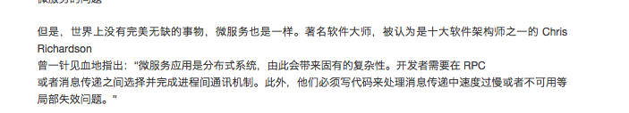

2020-04¶
2020-04-01¶
2020-04-01 09:11:04 |
我 |
[链接] 李杰和王雪松的聊天记录 |
2020-04-01 09:23:32 |
你 |
又聊一晚上 |
2020-04-01 09:23:42 |
我 |
没有，不到一小时 |
2020-04-01 09:24:12 |
我 |
不用管李杰说的，我说的东西你懂吗 |
2020-04-01 09:25:20 |
你 |
当然懂了 |
2020-04-01 09:25:28 |
你 |
道，不是说多错多 |
2020-04-01 09:25:50 |
你 |
取决于说的人和听的人是否是同道中人 |
2020-04-01 09:26:10 |
你 |
你跟李杰，不是，我跟她也不是，我跟你算是 |
2020-04-01 09:26:24 |
我 |
是的 |
2020-04-01 09:28:07 |
你 |
神是基督因为广大众人都是平庸的悟性创造出来了，真正越过窄门的，悟性高的，也就不用谈神了 |
2020-04-01 09:28:30 |
你 |
就会发现，神并不存在，神就是自己，自己就是神 |
2020-04-01 09:28:48 |
我 |
你是不是已经有了这种感觉了 |
2020-04-01 09:29:25 |
你 |
是 |
2020-04-01 09:29:51 |
你 |
但一不小心，又会回到原来的道上去 |
2020-04-01 09:30:02 |
你 |
现在还需要我很集中 |
2020-04-01 09:30:09 |
我 |
哈哈，没事的，我也经常回去 |
2020-04-01 09:30:15 |
你 |
尤其是面对我恐惧的事的时候 |
2020-04-01 09:30:21 |
你 |
很自然的就回去l |
2020-04-01 09:30:28 |
我 |
嗯嗯，我能体会得到 |
2020-04-01 09:31:03 |
我 |
今天能晚点走吧，聊一聊 |
2020-04-01 09:31:21 |
我 |
我又有了一些心得 |
2020-04-01 09:31:35 |
我 |
关于怎么获得产品的灵感的 |
2020-04-01 09:31:59 |
你 |
凡夫俗子因为恐惧死亡和向往天堂而守约，这是智慧和善术 |
2020-04-01 09:32:05 |
你 |
行啊 |
2020-04-01 09:32:14 |
你 |
这句话说的就是 |
2020-04-01 09:33:04 |
你 |
从李杰的觉悟就能看出来，凡夫俗子是没有能力通过窄门的，所以基督利用人性，构建了一个虚假的世界 |
2020-04-01 09:33:22 |
我 |
没错 |
2020-04-01 09:33:25 |
你 |
一切说法都有了其合理性 |
2020-04-01 09:33:43 |
你 |
看透的人，和 看不透的人，很难沟通 |
2020-04-01 09:33:50 |
我 |
不光是基督，儒家也是一样 |
2020-04-01 09:34:02 |
你 |
所谓道可道，非常道 |
2020-04-01 09:34:07 |
你 |
都是一样的 |
2020-04-01 09:34:30 |
我 |
没错，这种体会只能是过了窄门才知道 |
2020-04-01 09:37:46 |
你 |
让凡夫俗子因为恐惧死亡和向往天堂而守约。这是智与善的魔术，非读懂的人不能理解。但《圣经》告诉世人了，要进窄门。” |
2020-04-01 09:40:23 |
我 |
？ |
2020-04-01 09:41:08 |
你 |
== |
2020-04-01 09:53:13 |
你 |
刚才宋暖找我问事情 |
2020-04-01 09:53:23 |
我 |
嗯嗯 |
2020-04-01 09:53:37 |
你 |
我想说的是 窄门怎么过 耶稣没有限制大伙 |
2020-04-01 09:53:43 |
你 |
《圣经》都写了 |
2020-04-01 09:53:53 |
你 |
有缘人 自可自己修炼 |
2020-04-01 10:00:57 |
我 |
感觉你没说完呀 |
2020-04-01 10:18:22 |
你 |
有事打断了 |
2020-04-01 10:19:26 |
我 |
没事 |
2020-04-01 10:32:24 |
你 |
王敬强来了 |
2020-04-01 10:32:56 |
我 |
是，在我们屋，东江边上 |
2020-04-01 10:33:20 |
你 |
varchar本来也trim吧 |
2020-04-01 10:33:38 |
我 |
对，代码上就是这样 |
2020-04-01 10:33:50 |
我 |
咱们以前做过不去空格的吗 |
2020-04-01 10:33:57 |
你 |
没有 |
2020-04-01 10:34:22 |
你 |
咱们做的是’’ 和 null 等价 |
2020-04-01 10:34:27 |
我 |
嗯嗯 |
2020-04-01 10:34:29 |
你 |
其他的没做 |
2020-04-01 10:34:34 |
你 |
好几个都是这个点 |
2020-04-01 10:34:39 |
你 |
只是表现的场景不一样 |
2020-04-01 10:36:01 |
你 |
Oracle 不trim吗 |
2020-04-01 10:36:15 |
我 |
不 trim |
2020-04-01 10:36:17 |
你 |
改成char不行吗 |
2020-04-01 10:42:33 |
我 |
不行，char补空格 |
2020-04-01 11:00:43 |
你 |
我发现aurora分很多版本 |
2020-04-01 11:00:51 |
你 |
已经发布多写多读的版本了 |
2020-04-01 11:01:01 |
我 |
啊，给我个链接 |
2020-04-01 11:01:06 |
你 |
一写多读 多写多读 还有serverless |
2020-04-01 11:01:13 |
你 |
前天晚上看的 |
2020-04-01 11:01:16 |
你 |
我找找 |
2020-04-01 11:03:35 |
你 |
叫multi…. |
2020-04-01 11:04:15 |
你 |
|
2020-04-01 11:45:22 |
你 |
我想跟你说，aurora的serverless是指数据库使用按量计费 |
2020-04-01 11:45:50 |
我 |
啊，不是架构呀 |
2020-04-01 11:45:56 |
你 |
不是 |
2020-04-01 11:47:36 |
你 |
serverless是指没有创建数据库实例，而是随时开随时用，按处理能力和内存收费的一种售卖模式 |
2020-04-01 11:48:34 |
我 |
哦哦 |
2020-04-01 11:49:48 |
你 |
我昨天看的视频找不到了 |
2020-04-01 11:50:53 |
你 |
是一个演示过程，主备复制超级快，根本肉眼看不出来区别 |
2020-04-01 11:51:30 |
我 |
哇 |
2020-04-01 11:52:25 |
你 |
|
2020-04-01 11:52:37 |
你 |
|
2020-04-01 11:53:29 |
你 |
只支持两个节点 |
2020-04-01 11:53:57 |
我 |
他这个和他的云关系密切，应该是云还没有准备好 |
2020-04-01 13:23:14 |
你 |
|
2020-04-01 13:26:58 |
你 |
今天又学习了，region ，AZ，datacenter这些概念 |
2020-04-01 13:27:00 |
我 |
👍 |
2020-04-01 13:27:12 |
你 |
|
2020-04-01 13:27:39 |
你 |
我给你发的链接里 讲的 你可以听听 也讲了serverless |
2020-04-01 13:27:51 |
我 |
[动画表情] |
2020-04-01 13:38:52 |
你 |
|
2020-04-01 13:39:57 |
你 |
这事官方说法 |
2020-04-01 13:40:19 |
我 |
嗯嗯 |
2020-04-01 13:40:29 |
你 |
就跟移动运营 收费一样 是包月的 还是按流量计费 serverless就是按开机时长 收费 |
2020-04-01 13:40:42 |
你 |
这下终于明白了 |
2020-04-01 13:49:53 |
你 |
又嚷啥呢 |
2020-04-01 13:50:33 |
我 |
不是嚷嚷，连线李世辉，说话声音大 |
2020-04-01 14:45:09 |
我 |
建辉在看小说呢 |
2020-04-01 14:45:18 |
你 |
哈哈 |
2020-04-01 14:45:25 |
你 |
笑死人了 |
2020-04-01 14:45:46 |
我 |
[捂脸] |
2020-04-01 15:07:43 |
你 |
你们工具敏捷吗 |
2020-04-01 15:08:13 |
我 |
老陈和王薇反对 |
2020-04-01 15:08:38 |
我 |
现在还没有定下来 |
2020-04-01 17:10:44 |
我 |
我和李杰谈崩了[捂脸] |
2020-04-01 17:10:56 |
你 |
怎么了 |
2020-04-01 17:11:15 |
我 |
她生我气了 |
2020-04-01 17:11:20 |
你 |
达梦老总 一直强调 要掌握核心技术 |
2020-04-01 17:11:34 |
你 |
不能掌握到第三方手里 |
2020-04-01 17:11:37 |
我 |
哦哦，哪个视频里面说的 |
2020-04-01 17:11:42 |
你 |
我正听呢 |
2020-04-01 17:11:57 |
你 |
马上结束了 答疑阶段 |
2020-04-01 17:12:01 |
你 |
讲的都很高 |
2020-04-01 17:12:10 |
你 |
都是从企业的层面讲的 |
2020-04-01 17:12:26 |
你 |
达梦的定位是DAAS |
2020-04-01 17:12:40 |
你 |
并且做全线数据库 现在在做图数据库 |
2020-04-01 17:13:07 |
你 |
有三个开发中心：成都（图数据库），上海（关系型），武汉（分析型） |
2020-04-01 17:13:24 |
你 |
把你俩记录发给我 我看看 |
2020-04-01 17:14:09 |
你 |
要做大数据平台 |
2020-04-01 17:17:29 |
我 |
[链接] 李杰和王雪松的聊天记录 |
2020-04-01 17:17:45 |
我 |
中间我给她发了王蒙的录音 |
2020-04-01 17:25:11 |
我 |
你能看出来我生气了吧 |
2020-04-01 17:26:42 |
你 |
要是我早暴跳如雷了 |
2020-04-01 17:26:54 |
你 |
我看你还很冷静 |
2020-04-01 17:26:59 |
我 |
理解理解🤝 |
2020-04-01 17:27:44 |
你 |
|
2020-04-01 17:27:57 |
你 |
她怎么总是第一反应都是 别人不对 |
2020-04-01 17:29:19 |
你 |
|
2020-04-01 17:29:24 |
你 |
先说你 再说我 |
2020-04-01 17:29:46 |
我 |
我还在和她论道呢[捂脸] |
2020-04-01 17:30:23 |
你 |
有关系。“仁者无忧”。—无忧也不是没有恐惧啊 |
2020-04-01 17:31:31 |
我 |
[链接] 李杰和王雪松的聊天记录 |
2020-04-01 17:31:44 |
你 |
我觉得破窄门和成为神又是不同层次 |
2020-04-01 17:35:06 |
你 |
其实李杰自始至终都没理解层次的概念 |
2020-04-01 17:35:25 |
我 |
是的 |
2020-04-01 17:35:39 |
你 |
我觉得破窄门和成为神又是不同层次—这句话说得对吧 |
2020-04-01 17:35:45 |
我 |
今天我说话比较重，她有点受不了了 |
2020-04-01 17:36:08 |
你 |
我也不知道 我觉得她疯了 |
2020-04-01 17:36:15 |
你 |
跟练法轮功一样 |
2020-04-01 17:36:51 |
我 |
[链接] 李杰和王雪松的聊天记录 |
2020-04-01 17:36:52 |
你 |
她总是拿着 引起共鸣的 一句话 当锤子 |
2020-04-01 17:37:02 |
我 |
今天告一段落了[捂脸] |
2020-04-01 17:37:56 |
你 |
嗯嗯 |
2020-04-01 17:38:12 |
你 |
看了一本道德经 就开始论道了 |
2020-04-01 17:38:21 |
我 |
哈哈，没错 |
2020-04-01 17:38:23 |
你 |
真服了他了 |
2020-04-01 17:38:39 |
你 |
看了一部天道 就开始懂基督了 |
2020-04-01 17:38:42 |
我 |
没事，这是我的主场，就怕她不来论道 |
2020-04-01 17:39:54 |
你 |
唉 |
2020-04-01 17:39:59 |
你 |
就怕他跟我论啊 |
2020-04-01 17:40:05 |
你 |
我实在是懒得搭理她 |
2020-04-01 17:40:13 |
我 |
你别理她 |
2020-04-01 17:40:31 |
你 |
你们屋还有人吗 |
2020-04-01 17:41:07 |
我 |
没有人了 |
{kind=link}
{kind=link}
{kind=link}
{kind=link}
{kind=link}
{kind=link}
2020-04-02¶
2020-04-02 08:47:15 |
你 |
昨晚上跟tidb的聊天 他们产品买到国外了 |
2020-04-02 08:48:41 |
你 |
而且他说 想要迈出国外 不能跑在Google aws上 一切免谈 |
2020-04-02 08:48:55 |
我 |
哦哦 |
2020-04-02 09:25:08 |
你 |
别嚷了，跟他嚷也没用 |
2020-04-02 10:08:14 |
你 |
听他们说话，特别恶心 |
2020-04-02 10:08:31 |
你 |
都是说别人的毛病，从来不找自己的毛病 |
2020-04-02 10:08:51 |
我 |
没错 |
2020-04-02 10:28:59 |
我 |
如果如你所期望的那样你们确实是灵魂伴侣，你们之间强大的引力，会让原本的世界因彼此而倾倒，你们之间的不同不会让你们分崩离析，也许反而促使你们意识进化，从而激发个人身心成长。 ———— 昨天晚上刷微博看见的，就想到昨晚咱俩说的那些 |
2020-04-02 11:18:26 |
我 |
[链接] 李杰和王雪松的聊天记录 |
2020-04-02 11:18:58 |
我 |
昨天晚上李杰发给我的，我还不知道怎么回复她呢 |
2020-04-02 11:58:05 |
你 |
你问问她，啥是规律 |
2020-04-02 11:58:39 |
我 |
哈哈，高👍 |
2020-04-02 11:58:44 |
我 |
待会我问问她 |
2020-04-02 11:58:58 |
我 |
今天她还一直没理我呢，不知道是不是生我气了[捂脸] |
2020-04-02 12:00:06 |
你 |
她给你发了这么多，还不理你吗 |
2020-04-02 12:00:11 |
你 |
她不会生你气的 |
2020-04-02 12:00:51 |
你 |
[链接] 李辉和李杰的聊天记录 |
2020-04-02 12:00:54 |
我 |
嗯嗯，都是昨天晚上发的，今天还没聊呢 |
2020-04-02 12:01:13 |
你 |
她不会生气的 |
2020-04-02 12:01:15 |
你 |
放心吧 |
2020-04-02 12:01:53 |
你 |
王蒙讲道心的上下文跟小丹说窄门差不多 |
2020-04-02 12:01:57 |
我 |
[动画表情] |
2020-04-02 12:02:06 |
我 |
是的 |
2020-04-02 12:02:28 |
你 |
王蒙的意思是，看到了窄门，就是有了道心 |
2020-04-02 12:02:36 |
你 |
而不是讲道心是啥 |
2020-04-02 12:02:39 |
你 |
他没讲 |
2020-04-02 12:03:32 |
我 |
没错 |
2020-04-02 13:29:12 |
我 |
亲，去哪了 |
2020-04-02 13:29:36 |
你 |
Hgj课题 |
2020-04-02 13:29:43 |
我 |
哦哦 |
2020-04-02 14:44:25 |
我 |
https://yizmyl7wvu2arwy-db202003121839.adb.ap-tokyo-1.oraclecloudapps.com/ords/admin/sign-in/?r=_sdw%2F%3Fnav%3Dworksheet |
2020-04-02 14:44:34 |
我 |
你试试这个能用吗 |
2020-04-02 14:45:05 |
我 |
admin |
2020-04-02 14:45:06 |
我 |
t=Co6RZXuYTy |
2020-04-02 15:14:48 |
我 |
你今天眼影很漂亮呀 |
2020-04-02 15:19:23 |
你 |
我都化了好几天了 |
2020-04-02 15:19:27 |
你 |
今天才看出来 |
2020-04-02 15:19:47 |
我 |
今天正好你对着阳光，特别漂亮 |
2020-04-02 15:19:57 |
我 |
闪闪发光 |
2020-04-02 15:19:59 |
你 |
有点多了 |
2020-04-02 15:20:16 |
你 |
用手一抹就多 |
2020-04-02 15:20:35 |
我 |
还好，不显多 |
2020-04-02 15:20:46 |
你 |
现在带了口罩 只能化眼妆了 |
2020-04-02 15:20:58 |
我 |
嗯嗯 |
2020-04-02 15:26:26 |
我 |
今天早上和研发开会，一上来那海涛负责 listagg，结果我一问三不知，我一下子就火了，把他们训了一顿，说他们现在都懈怠了，结果国峰现在就非常积极啦😄 |
2020-04-02 15:37:49 |
你 |
哈哈 |
2020-04-02 15:37:55 |
你 |
开会国锋参加了吗 |
2020-04-02 15:38:02 |
我 |
参加了 |
2020-04-02 15:38:13 |
你 |
我每次去建辉那屋 那海涛就在他 看手机 不然就看书 |
2020-04-02 15:38:16 |
你 |
打游戏 |
2020-04-02 15:38:17 |
我 |
前几天他们都特别懈怠 |
2020-04-02 15:38:25 |
我 |
是，我就看见好几回了 |
2020-04-02 15:38:26 |
你 |
早就该发火 |
2020-04-02 15:39:05 |
你 |
你发火的时候 zy在外边就说你 我就跟老陈说 需求评审结束一周了 昨天二审 雪松问建辉 一问三不知 |
2020-04-02 15:39:17 |
你 |
雪松就说今天跟他们开会 |
2020-04-02 15:39:30 |
你 |
然后zy就想进去劝 我没让他去 |
2020-04-02 15:39:53 |
你 |
我觉得你发火肯定是有原因的 zy一劝 反倒觉得你没事找事 |
2020-04-02 15:39:58 |
我 |
他要是敢进来我就把他骂出去 |
2020-04-02 15:40:06 |
你 |
我就说了他一句 他就没进去 |
2020-04-02 15:40:31 |
你 |
还说 他进去不应该 老陈应该去 我就赶紧跟老陈说话 一耽误 老陈也没去 |
2020-04-02 15:40:52 |
我 |
嗯嗯，zy 是故意的 |
2020-04-02 15:40:54 |
你 |
你把他骂出来 也不如他不进去 |
2020-04-02 15:41:19 |
你 |
本来就是管理 干别人啥事 |
2020-04-02 15:41:39 |
我 |
zy 其实和刘辉差不多，都是吃好喝好大家好 |
2020-04-02 15:42:28 |
你 |
他最近 被写材料那堆事缠住了 |
2020-04-02 15:42:32 |
你 |
没经历 |
2020-04-02 15:42:44 |
我 |
挺好 |
2020-04-02 15:42:47 |
你 |
以前我们组的屁事 他都要管 现在也不咋管了 |
2020-04-02 15:42:58 |
你 |
这几天天天抱怨 乱 |
2020-04-02 15:43:12 |
你 |
售前的问他啥 他都不知道 就得问我 |
2020-04-02 15:43:20 |
你 |
他知道我没好脸色给他 |
2020-04-02 15:43:34 |
你 |
你记得那个周报吗 给赵总的 |
2020-04-02 15:43:37 |
我 |
记得 |
2020-04-02 15:44:07 |
你 |
上周老陈看的特别仔细 找刺 结果我写的 他也没找出来毛病 把海珺骂了一顿 |
2020-04-02 15:44:32 |
我 |
哈哈 |
2020-04-02 15:45:00 |
你 |
那个周报 zy连看都不看 都是我在写 |
2020-04-02 15:46:19 |
你 |
反正我觉得 你早上那样 有人进去 反倒不好 |
2020-04-02 15:46:27 |
我 |
昨天你听见老陈嚷嚷的那个会，老陈对 zy 也是不满 |
2020-04-02 15:46:34 |
你 |
一来 他们也羞臊 |
2020-04-02 15:47:00 |
你 |
二来这些羞臊都会转嫁到你头上 |
2020-04-02 15:47:03 |
我 |
没错 |
2020-04-02 15:47:14 |
你 |
反倒zy成了好人 |
2020-04-02 15:47:29 |
你 |
所以我早上都拉着了 |
2020-04-02 15:47:42 |
你 |
我觉得老陈应该或多或少也明白这个道理 |
2020-04-02 15:48:02 |
我 |
嗯嗯，我也这么觉得 |
2020-04-03¶
{kind=link}
2020-04-07¶
2020-04-07 08:32:48 |
我 |
[链接] 群聊的聊天记录 |
2020-04-07 08:33:50 |
我 |
老丁要把研发中心放到南京去 |
2020-04-07 08:37:48 |
你 |
饿 |
2020-04-07 08:37:56 |
我 |
老丁就是在这个会上说老陈太纠结 以后要叫他陈纠结 |
2020-04-07 08:38:02 |
你 |
|
2020-04-07 08:38:40 |
你 |
这是要搞到南京去 |
2020-04-07 08:38:47 |
你 |
那天津还算吗 |
2020-04-07 08:39:21 |
我 |
老丁说天津招不上人，以后以南京为主 |
2020-04-07 08:40:55 |
你 |
招不上人的原因呢？ |
2020-04-07 08:42:55 |
我 |
老丁说天津人才储备太少 |
2020-04-07 08:43:23 |
我 |
华为中兴的软件研发都在南京 |
2020-04-07 08:44:23 |
你 |
啊 |
2020-04-07 08:53:25 |
我 |
低成本.docx |
2020-04-07 08:53:35 |
我 |
zy写的 |
2020-04-07 08:54:41 |
你 |
恩 |
2020-04-07 08:54:45 |
你 |
我 看看 |
2020-04-07 09:25:45 |
我 |
李杰今天上班去了吗 |
2020-04-07 09:25:56 |
你 |
去了 |
2020-04-07 09:26:11 |
我 |
嗯嗯 |
2020-04-07 09:56:55 |
我 |
[链接] 王雪松和刘建辉的聊天记录 |
2020-04-07 10:07:28 |
你 |
思维方式还没改过来 |
2020-04-07 10:07:51 |
我 |
是的，都是被老陈毒害的[捂脸] |
2020-04-07 10:08:54 |
我 |
一张嘴就是我们没有高手，没人干活 |
2020-04-07 10:09:14 |
你 |
还是没逼到死路 |
2020-04-07 10:13:42 |
你 |
活还没干 先找一堆理由做不了 |
2020-04-07 10:13:54 |
你 |
然后不断的证明自己做不了 |
2020-04-07 10:18:57 |
我 |
对呀，然后领导也认为你做不了，最后就真的做不了了 |
2020-04-07 10:19:06 |
我 |
一个典型的负循环的 |
2020-04-07 10:19:10 |
你 |
没错 |
2020-04-07 10:19:15 |
你 |
这边的人都这样 |
2020-04-07 10:19:25 |
你 |
刘辉也是 |
2020-04-07 10:19:35 |
你 |
所有事 没干之前 先摆一堆的理由 |
2020-04-07 10:19:49 |
我 |
其实老陈带的团队都是这样，包括原来的张杰他们 |
2020-04-07 10:20:00 |
你 |
是的 |
2020-04-07 10:21:11 |
你 |
|
2020-04-07 10:22:17 |
你 |
王广翰-计算机科学与技术（双学位）-河北工业大学.pdf |
2020-04-07 10:56:39 |
我 |
|
2020-04-07 11:00:22 |
你 |
10%的调薪比例 |
2020-04-07 11:00:30 |
你 |
没准我会涨涨 |
2020-04-07 11:01:09 |
我 |
我觉得老陈肯定会给你涨，不涨就太没有天理了 |
2020-04-07 11:01:47 |
你 |
看吧 |
2020-04-07 11:01:52 |
你 |
涨了请你吃饭 |
2020-04-07 11:02:13 |
我 |
哈哈，该我请你吃饭了 |
2020-04-07 11:03:51 |
你 |
你们封闭那点小钱 能跟我涨工资比吗 |
2020-04-07 11:03:59 |
你 |
如果涨的话哈 |
2020-04-07 11:04:25 |
我 |
到时候再说 |
2020-04-07 11:05:21 |
你 |
啥意思 |
2020-04-07 11:05:37 |
你 |
应该会涨 非得不涨也没办法 |
2020-04-07 11:06:45 |
我 |
你要是不算核心员工谁还算呀 |
2020-04-07 11:07:02 |
你 |
去年我KPI高啊 |
2020-04-07 11:08:25 |
你 |
看吧 |
2020-04-07 11:08:27 |
你 |
不知道 |
2020-04-07 11:09:02 |
我 |
|
2020-04-07 11:09:42 |
我 |
我是第二象限，你是第四象限[偷笑] |
2020-04-07 11:11:44 |
你 |
这字写的 我都看不明白 |
2020-04-07 11:12:04 |
我 |
是， 我也是看了半天才明白 |
2020-04-07 11:12:45 |
你 |
|
2020-04-07 11:12:53 |
你 |
这个极少数公司？人 |
2020-04-07 11:13:17 |
我 |
极少数公司与人 |
2020-04-07 11:49:13 |
你 |
这周会很忙 |
2020-04-07 11:49:19 |
你 |
写hgj课题 |
2020-04-07 11:49:22 |
你 |
[尴尬] |
2020-04-07 11:49:27 |
我 |
啊 |
2020-04-07 11:49:31 |
我 |
好吧 |
2020-04-07 11:49:32 |
你 |
天天破烂事太多 |
2020-04-07 11:49:51 |
我 |
就是这些事情把正经研发给耽误了 |
2020-04-07 11:50:01 |
你 |
是啊 |
2020-04-07 11:50:04 |
你 |
都耽误了 |
2020-04-07 11:50:10 |
我 |
本来今年是想好好做事呢，结果上半年又泡汤了 |
2020-04-07 11:50:40 |
我 |
幸亏当初我催着他们赶紧评估，要不连个方案都没有 |
2020-04-07 11:51:14 |
你 |
你说3.1.0吗 |
2020-04-07 11:51:21 |
你 |
还是rdma |
2020-04-07 11:51:33 |
我 |
310 |
2020-04-07 11:52:06 |
你 |
Uos的龙芯版本，能拿普通的龙芯版装吗 |
2020-04-07 11:53:31 |
你 |
普通的龙芯版本能在uos上用吗 |
2020-04-07 11:53:50 |
你 |
比如龙芯中标麒麟编译的 |
2020-04-07 11:53:52 |
我 |
不知道，可能会缺包 |
2020-04-07 11:55:12 |
你 |
这次回家，去看中医了 |
2020-04-07 11:55:16 |
你 |
拿了点药 |
2020-04-07 11:55:37 |
我 |
大夫怎么说 |
2020-04-07 11:55:51 |
你 |
也没说啥y |
2020-04-07 11:56:24 |
我 |
哦哦，先吃吃看吧 |
2020-04-07 11:57:30 |
你 |
就说激素水平紊乱 |
2020-04-07 11:57:44 |
你 |
说的都很表象 |
2020-04-07 13:16:43 |
你 |
你发的记录我又看了一遍 |
2020-04-07 13:16:57 |
你 |
我觉得老丁的思维 跟咱们的差别太大了 |
2020-04-07 13:17:19 |
你 |
比赵、陈等 都高出一大截 |
2020-04-07 13:17:24 |
我 |
是的 |
2020-04-07 13:17:47 |
我 |
不过其实也没那么难做到 |
2020-04-07 13:17:56 |
我 |
你换到他的位置想一想就明白了 |
2020-04-07 13:18:25 |
你 |
不单单是换位置的事 |
2020-04-07 13:19:10 |
你 |
你注意一下 老丁做决策 看的是外边，老赵、老陈都是拿手里这点事说话 |
2020-04-07 13:19:31 |
我 |
是 |
2020-04-07 13:19:37 |
我 |
这就是眼界不同 |
2020-04-07 13:19:50 |
我 |
老丁走过的路太多了 |
2020-04-07 13:19:54 |
你 |
是 |
2020-04-07 13:20:36 |
你 |
当然也有位置的问题 |
2020-04-07 13:20:38 |
我 |
你应该注意到了，很多咱们在意的点老丁根本就不在乎 |
2020-04-07 13:20:45 |
你 |
是啊 |
2020-04-07 13:21:16 |
我 |
这里面的道就是他是制定规则的人，他的规则和咱们的规则不一样 |
2020-04-07 13:21:17 |
你 |
老丁想的是几年 几十年以后 陈、赵想的是明年 |
2020-04-07 13:21:35 |
你 |
光说时间也不合适 |
2020-04-07 13:21:48 |
你 |
就是点和面的区别 |
2020-04-07 13:21:49 |
我 |
对，时间其实是术的问题 |
2020-04-07 13:21:53 |
你 |
差别很大 |
2020-04-07 13:22:24 |
你 |
老丁说话 就是那天我听冯裕才说话的感觉 |
2020-04-07 13:23:44 |
我 |
这就是资本的本质 |
2020-04-07 13:24:05 |
我 |
不是资本家的本质[呲牙] |
2020-04-07 13:24:44 |
我 |
他们这个层次的人玩的就是资本，资本的本质就是增值，一切都要和这个目标相符 |
2020-04-07 13:25:00 |
你 |
我以前的管理逻辑是同行最好的待遇和最高效的管理流程一定会打造出好的产品竞争力 |
2020-04-07 13:25:03 |
我 |
你看老丁的决策，最后都是落到增值这个点上 |
2020-04-07 13:25:57 |
你 |
恩 |
2020-04-07 13:26:01 |
你 |
你看老丁的思维 |
2020-04-07 13:26:19 |
你 |
咱们想的是 要定位好产品的行业 产品的卖点 |
2020-04-07 13:26:27 |
你 |
这明显不是一个层次啊 |
2020-04-07 13:26:56 |
我 |
你看，你都能看出来不是一个层次，老陈他还没有这个觉悟呢 |
2020-04-07 13:34:07 |
你 |
不知道他怎么想的 |
2020-04-07 13:34:57 |
我 |
今天早上我来了问老陈南京的事情，老陈跟我抱怨了半天老丁 |
2020-04-07 13:35:39 |
我 |
说老丁光想着挖中兴的人 |
2020-04-07 13:35:59 |
你 |
最后老丁在老陈眼里 就跟 他原来抱怨老赵、武总一样 |
2020-04-07 13:36:18 |
我 |
现在就已经是这样了 |
2020-04-07 13:37:05 |
你 |
又一个加入循环的人 |
2020-04-07 13:37:53 |
你 |
你有AXURE的安装包吗 |
2020-04-07 13:38:15 |
我 |
我没有，给你找一个吧 |
2020-04-07 13:38:22 |
我 |
应该很好找 |
2020-04-07 13:47:30 |
我 |
下完了，66M，怎么给你 |
2020-04-07 13:48:06 |
你 |
给李杰 |
2020-04-07 13:48:08 |
你 |
他要用 |
2020-04-07 13:48:16 |
我 |
好的 |
2020-04-07 13:48:39 |
你 |
咱们那个可爱群 |
2020-04-07 13:48:42 |
你 |
你说句话 |
2020-04-07 13:48:44 |
你 |
我找不到了 |
2020-04-07 15:32:58 |
你 |
你们研发的今下午干啥呢 |
2020-04-07 15:33:00 |
你 |
一直开会 |
2020-04-07 15:33:21 |
我 |
他们讨论310的技术方案呢 |
2020-04-07 15:33:36 |
你 |
刚才zy问我通讯费和交通费 还问我入职时间 不知道是啥 |
2020-04-07 15:34:09 |
我 |
应该就是涨薪的事情吧，好像模版里面有这些项 |
2020-04-07 15:36:46 |
你 |
那是不是有我哎 |
2020-04-07 15:37:17 |
你 |
我电脑又开始洗脑式的报空间不足了 |
2020-04-07 15:37:42 |
我 |
应该是有 |
2020-04-07 15:38:29 |
你 |
你会涨吗 |
2020-04-07 15:38:35 |
你 |
应该也会吧 |
2020-04-07 15:38:48 |
你 |
升职了算 |
2020-04-07 15:38:55 |
我 |
我不要了，向一线倾斜 |
2020-04-07 15:39:51 |
你 |
去年我涨工资 是老孔在的时候，不知道今年会不会被牵连 |
2020-04-07 15:40:03 |
你 |
结果于总那不给过 |
2020-04-07 15:40:25 |
我 |
不应该 |
2020-04-07 15:41:27 |
你 |
4月份就能体现 |
2020-04-07 15:41:36 |
你 |
是不是10号发工资就能涨了 |
2020-04-07 15:41:51 |
我 |
5月 |
2020-04-07 15:41:52 |
你 |
就知道谁涨了 |
2020-04-07 15:51:34 |
你 |
这家伙 大厂出来的就是大厂出来的 天天说中兴华为 |
2020-04-07 15:51:55 |
我 |
哈哈 |
2020-04-07 15:52:12 |
我 |
你是一直在写文档吗 |
2020-04-07 15:53:07 |
你 |
是啊 |
2020-04-07 15:53:10 |
你 |
写课题的文档 |
2020-04-07 15:53:19 |
你 |
我先把大纲捋清楚 |
2020-04-07 15:53:30 |
我 |
嗯嗯 |
2020-04-07 15:53:33 |
你 |
捋清楚了就可以歇会 |
2020-04-07 15:54:01 |
我 |
什么时候交 |
2020-04-07 15:54:14 |
你 |
4.15 |
2020-04-07 15:54:18 |
你 |
内容特别多 |
2020-04-07 15:54:34 |
我 |
啊，太紧张了 |
2020-04-07 17:02:33 |
你 |
到时候你问下吕讯情况行不 |
2020-04-07 17:02:38 |
你 |
我好跟我老姑父交差 |
2020-04-07 17:02:45 |
我 |
没问题 |
2020-04-07 17:02:46 |
你 |
不行推荐给技术支持也行 |
2020-04-07 17:02:52 |
你 |
他说做技术支持也行 |
2020-04-07 17:02:54 |
你 |
没要求 |
2020-04-07 17:03:00 |
我 |
好的 |
2020-04-07 17:03:01 |
你 |
估计薪资也不会高 |
2020-04-07 17:03:06 |
你 |
家里条件挺好的额 |
2020-04-07 17:32:10 |
你 |
我推荐的那个人 你跟吕讯说了吗 |
2020-04-07 17:36:10 |
我 |
说了 |
2020-04-07 17:36:23 |
我 |
让吕迅面一下，给个意见 |
2020-04-07 17:36:38 |
你 |
[链接] JasonGao²⁰²⁰和李辉的聊天记录 |
2020-04-07 17:36:44 |
你 |
我说呢 |
2020-04-07 17:36:50 |
我 |
刚才没有找到吕迅，他说他和高燕菘说了不面 |
2020-04-07 17:36:56 |
你 |
看来搞定领导确实好使 |
2020-04-07 17:36:57 |
我 |
我特意让吕迅去面面 |
2020-04-07 17:37:05 |
我 |
哈哈 |
2020-04-07 17:37:10 |
你 |
肯定挺差的 |
2020-04-07 17:37:21 |
你 |
要不直接让振鹏面得了 |
2020-04-07 17:37:28 |
你 |
过不了的话 就pass |
2020-04-07 17:37:34 |
你 |
免得吕讯出面了 |
2020-04-07 17:37:38 |
你 |
你说呢 |
2020-04-07 17:37:52 |
我 |
我已经和吕迅说了，让吕迅面吧 |
2020-04-07 17:38:05 |
我 |
吕迅不行再让振鹏试试 |
2020-04-07 17:38:16 |
我 |
这样你也好有个交待 |
2020-04-07 17:38:31 |
你 |
行 |
{kind=link}
{kind=link}
{kind=link}
{kind=link}
{kind=link}
2020-04-08¶
2020-04-08 08:27:03 |
我 |
早呀 |
2020-04-08 08:27:30 |
你 |
早 |
2020-04-08 08:29:03 |
我 |
你今天还是要写文档吗 |
2020-04-08 08:30:49 |
你 |
是呢 |
2020-04-08 08:31:14 |
我 |
唉 |
2020-04-08 09:31:35 |
你 |
今天找到了一份现成的需求文档 |
2020-04-08 09:32:05 |
你 |
我溜了一眼，应该能解决我80百分之的任务[胜利] |
2020-04-08 09:32:08 |
我 |
HGJ的吗 |
2020-04-08 09:32:12 |
我 |
太好了 |
2020-04-08 09:32:13 |
你 |
还能学习学习 |
2020-04-08 10:37:43 |
我 |
有空吗 |
2020-04-08 10:38:30 |
你 |
有空 |
2020-04-08 10:38:41 |
你 |
刚才跟李凯 说了说 |
2020-04-08 10:38:57 |
我 |
我想先听听你的意见 |
2020-04-08 10:39:30 |
你 |
从我个人而言 我不愿意写 |
2020-04-08 10:40:17 |
你 |
但是我不知道不写的话 会怎么样 |
2020-04-08 10:40:34 |
我 |
给你人呢 |
2020-04-08 10:40:37 |
你 |
说实在的我不知道 不写 这条线能不能串起来 |
2020-04-08 10:40:54 |
我 |
肯定串不起来 |
2020-04-08 10:41:07 |
你 |
zy肯定是不想让lk做 |
2020-04-08 10:41:19 |
我 |
这事我是这么分析的 |
2020-04-08 10:41:32 |
你 |
刚才说 不行让庞jingxin写 |
2020-04-08 10:41:42 |
你 |
或者其他的应用人员写 |
2020-04-08 10:41:47 |
你 |
你说说 |
2020-04-08 10:42:16 |
你 |
我个人认为是串不起来的 但是没做过 说不清楚 |
2020-04-08 10:44:33 |
我 |
zy 之所以不想干这事因为这个事情他们做不了，如果是产品部做，那么他只能靠你，让你去带着他们的人去干 |
2020-04-08 10:45:03 |
你 |
嗯嗯 |
2020-04-08 10:45:06 |
你 |
没错 |
2020-04-08 10:45:13 |
我 |
如果他都推给研发，那么你原来的工作就等于没有了，剩下的就是新的，然后他就可以指手画脚了 |
2020-04-08 10:45:25 |
你 |
是 |
2020-04-08 10:45:29 |
你 |
确实是 |
2020-04-08 10:45:35 |
你 |
我跟其他人就没区别了 |
2020-04-08 10:45:38 |
我 |
我的原则很简单，如果他坚持说必须从研发向前推，我从研发抽人给你 |
2020-04-08 10:46:01 |
你 |
老陈不可能同意抽人的 |
2020-04-08 10:46:08 |
你 |
到时候招新人呗 |
2020-04-08 10:46:17 |
我 |
其实呀，工具那边可以出人 |
2020-04-08 10:46:20 |
你 |
需求工程师怎么就不能招了 |
2020-04-08 10:46:29 |
我 |
再说现在工具组不都是他们的人吗 |
2020-04-08 10:46:37 |
你 |
嗯嗯 |
2020-04-08 10:47:04 |
我 |
zy 把需求推到研发，是从组织架构上的变化，这个是绝对不行的，对咱们的影响太大了 |
2020-04-08 10:47:12 |
你 |
是 |
2020-04-08 10:47:21 |
你 |
本来年初的组织架构也是需求这这边的 |
2020-04-08 10:47:30 |
我 |
如果是人力的问题，我现在可以安排老田他们去做需求，以产品部需求工程师的角色 |
2020-04-08 10:48:09 |
我 |
但是这个角色必须在你的管理之下，由你来指导他们工作 |
2020-04-08 10:51:34 |
你 |
行 |
2020-04-08 10:51:42 |
你 |
我没问题 |
2020-04-08 10:52:38 |
我 |
研发可以配合写技术规格说明书，或者把技术规格写在设计文档里面，这样从前往后关键元素就都串起来了 |
2020-04-08 10:53:47 |
你 |
可以 |
2020-04-08 10:54:03 |
你 |
如果你们写技术规格了 那老陈想要的就都全了 |
2020-04-08 10:54:08 |
我 |
是的 |
2020-04-08 10:54:22 |
你 |
在设计文档的第一章 写技术规格呗 |
2020-04-08 10:54:33 |
我 |
嗯嗯 |
2020-04-08 10:54:56 |
你 |
刚才zy说 我们要写一份产品需求说明书 |
2020-04-08 10:55:13 |
你 |
然后软件需求规格说明书 按照产品需求说明书 写 |
2020-04-08 10:55:24 |
你 |
这份产品需求说明书 还不知道是个啥呢 |
2020-04-08 10:56:05 |
我 |
这个产品需求说明书就是一个非常虚的东西，比如说要做 Oracle 兼容性，但是具体做哪些这里面不说 |
2020-04-08 10:57:03 |
你 |
他说的是 就是Oracle兼容 要做哪些函数 |
2020-04-08 10:57:17 |
你 |
你可以理解成 咱们原来版本说明书那个粒度 |
2020-04-08 10:57:31 |
我 |
是的，其实比那个还粗 |
2020-04-08 10:57:40 |
你 |
是 |
2020-04-08 10:57:59 |
我 |
从这你就能看出来，zy 就是在偷懒 |
2020-04-08 10:58:32 |
你 |
关键产品还要负责发版 写的太粗 中间不参与 怎么匹配版本呢 |
2020-04-08 10:59:01 |
我 |
没错 |
2020-04-08 10:59:12 |
你 |
我刚才问他 他说要写到函数名字这个粒度 |
2020-04-08 11:00:35 |
我 |
其实函数这个例子不好，比如说图形化安装界面，这个就是和用户交互非常多的地方，如果没有需求人员去做，那么不知道会是什么样子 |
2020-04-08 11:00:46 |
你 |
没错 |
2020-04-08 11:00:51 |
你 |
而且手册也要我们写 |
2020-04-08 11:01:06 |
你 |
手册我们写的话 需求都不参与 写手册还得熟悉一次 |
2020-04-08 11:01:13 |
我 |
研发人员现在的核心工作就是写代码 |
2020-04-08 11:01:20 |
你 |
做设计 |
2020-04-08 11:01:26 |
我 |
对 |
2020-04-08 11:01:30 |
你 |
你跟他打吧 我不方便说话 |
2020-04-08 11:01:36 |
我 |
嗯嗯 |
2020-04-08 11:01:37 |
你 |
不然就跟他撕破脸了 |
2020-04-08 11:01:48 |
你 |
而且我还得指着lk干活呢 |
2020-04-08 11:01:52 |
我 |
我知道你的想法就行了，我去和他打 |
2020-04-08 11:02:12 |
你 |
我觉得最后 工具的 可能会觉和到L3去 |
2020-04-08 11:02:30 |
你 |
工具的好说 人多 |
2020-04-08 11:02:39 |
我 |
这样最好，我现在没看出来 L3干啥呢 |
2020-04-08 11:15:15 |
你 |
如果搅和到L3去 就是我指导L3吗 |
2020-04-08 11:15:22 |
你 |
刚才有点事 |
2020-04-08 11:17:04 |
我 |
对呀，需求工程师这个角色肯定是你去指导 |
2020-04-08 11:17:34 |
我 |
就是说需求工程师这个角色是放在产品组下面的 |
2020-04-08 11:17:55 |
我 |
产品组的职责就是产品规划和需求管理 |
2020-04-08 11:22:22 |
你 |
我太忙了 一直跟他们说事 |
2020-04-08 11:22:27 |
你 |
我都行其实 |
2020-04-08 11:22:45 |
你 |
Server这边我不撒手 工具让lk做去得了 |
2020-04-08 11:22:49 |
我 |
嗯嗯 |
2020-04-08 11:22:57 |
你 |
lk带着宋暖 还是宋暖带着lk我都不care |
2020-04-08 11:23:12 |
我 |
工具你要把住规划，就是 zy 说的那部分东西 |
2020-04-08 11:23:41 |
我 |
因为未来上云，工具才是核心 |
2020-04-08 11:24:03 |
你 |
知道了 |
2020-04-08 11:24:20 |
我 |
我昨天在你们说的那些其实后面还有一个非常重要的商业模式模式 |
2020-04-08 11:24:33 |
我 |
我现在还没有想好，正想和你聊聊呢 |
2020-04-08 11:24:36 |
你 |
我听你说了 |
2020-04-08 11:24:50 |
你 |
云厂商 推荐 哪些 产品的 |
2020-04-08 11:25:00 |
你 |
云厂商成平台了 跟淘宝似的 |
2020-04-08 11:25:20 |
我 |
对 |
2020-04-08 11:25:41 |
我 |
之前咱们不是讨论过中台导致数据库边缘化吗 |
2020-04-08 11:26:11 |
我 |
我在思考的模式会是数据库云平台提供商把云厂商边缘化 |
2020-04-08 11:27:29 |
你 |
今天讨论讨论？ |
2020-04-08 11:27:34 |
你 |
我有时间 |
2020-04-08 11:27:54 |
我 |
好呀 |
2020-04-08 11:28:05 |
我 |
等下班吧 |
2020-04-08 11:29:27 |
你 |
好 |
2020-04-08 13:35:44 |
我 |
我突然想起来的，你的机器清理废纸篓了吗 |
2020-04-08 13:39:42 |
你 |
没呢 |
2020-04-08 13:39:51 |
你 |
是不是可以清一下 |
2020-04-08 13:40:05 |
我 |
可以呀，会很占地方的 |
2020-04-08 16:01:25 |
我 |
你推荐的那个人吕迅面了吗 |
2020-04-08 16:03:45 |
你 |
== |
2020-04-08 17:15:43 |
我 |
[链接] 王薇和王雪松的聊天记录 |
2020-04-08 17:25:14 |
你 |
正讨论呢 |
2020-04-08 17:25:36 |
你 |
zy把我卖了 我刚才在屋里 跑出来跟他们打了一顿 |
2020-04-08 17:25:46 |
你 |
zy说3.1.0不做了 |
2020-04-08 17:25:47 |
我 |
他怎么卖你了 |
2020-04-08 17:26:13 |
你 |
今天他说为啥要做 我说了一些 然后说老陈定的 |
2020-04-08 17:40:15 |
你 |
王薇为啥给你发这个 |
2020-04-08 17:40:33 |
我 |
估计就是想让我过去确认呢 |
2020-04-08 17:40:40 |
我 |
我才不上当呢 |
2020-04-08 17:41:20 |
我 |
我去了就得和他们吵，最后还是一地鸡毛 |
2020-04-08 17:45:49 |
你 |
嗯嗯 |
2020-04-08 17:45:53 |
你 |
你回家吗 |
2020-04-08 17:45:58 |
你 |
打算几点回 |
2020-04-08 17:45:59 |
我 |
不急 |
2020-04-08 17:46:04 |
我 |
半点吧 |
2020-04-08 17:46:11 |
你 |
6点半？ |
2020-04-08 17:46:18 |
我 |
嗯 |
2020-04-08 17:46:29 |
你 |
你们屋还有人吗 |
2020-04-08 17:46:38 |
我 |
有，好多呢 |
2020-04-08 17:46:47 |
我 |
研发都没走呢[捂脸] |
2020-04-08 17:46:56 |
我 |
我上次发火太有效了[捂脸] |
2020-04-08 17:47:09 |
你 |
哈哈 |
2020-04-08 17:49:19 |
你 |
偶尔用一下有效果 |
2020-04-08 17:49:26 |
你 |
总用就不行了 |
2020-04-08 17:49:32 |
我 |
是 |
2020-04-08 17:50:17 |
我 |
你忙完了吗 |
2020-04-08 17:54:11 |
我 |
你过来吗 |
2020-04-08 17:54:22 |
你 |
你们还有人吗 |
2020-04-08 17:54:33 |
我 |
你来吧， 我给你讲讲 |
2020-04-08 21:18:56 |
你 |
老陈在群里发的那是啥 |
2020-04-08 21:19:21 |
你 |
是咱们上传到百度网盘的资料被窃取了吗 |
2020-04-08 21:20:06 |
你 |
啥意思 |
2020-04-08 21:20:10 |
你 |
看不明白 |
2020-04-08 21:30:57 |
你 |
别回复了 |
2020-04-09¶
2020-04-09 08:30:39 |
我 |
早呀 |
2020-04-09 08:48:59 |
你 |
http://blog.itpub.net/13885898/viewspace-2644038/ |
2020-04-09 08:49:03 |
你 |
Oracle的cloud |
2020-04-09 08:49:27 |
你 |
他这个我看好像没留 云厂商的口 |
2020-04-09 08:50:10 |
我 |
我看看 |
2020-04-09 09:17:33 |
我 |
[链接] 群聊的聊天记录 |
2020-04-09 10:30:05 |
你 |
|
2020-04-09 10:30:15 |
你 |
咱们没在三期ML里 |
2020-04-09 10:30:24 |
你 |
信创算几期？ |
2020-04-09 10:30:28 |
你 |
四期吗 |
2020-04-09 10:30:39 |
我 |
不知道呢 |
2020-04-09 10:31:48 |
我 |
应该是吧，之前二期咱们进去了，估计去年的算三期，今年这个不知道算不算四期 |
2020-04-09 10:32:02 |
你 |
我觉得是 |
2020-04-09 10:32:17 |
你 |
不知道算不算四期 但是三期是没进去 |
2020-04-09 10:32:23 |
我 |
唉，压力很大呀 |
2020-04-09 10:32:30 |
你 |
三期以后就改叫信创了 |
2020-04-09 10:32:52 |
我 |
刚才和李佳聊了聊，咱们1s也有风险了 |
2020-04-09 10:34:45 |
你 |
1suo那事 老陈也不上心 |
2020-04-09 10:35:08 |
你 |
我想到一件事 |
2020-04-09 10:35:33 |
你 |
我觉得信创咱们即使过了 也有至少一年的时间不能卖 |
2020-04-09 10:36:06 |
我 |
为啥 |
2020-04-09 10:36:08 |
你 |
现在都是用三期的名录 信创先测试 然后工厂检查 再然后是 报价 然后发布 |
2020-04-09 10:36:21 |
你 |
这期间 理论上咱们都算无证状态 |
2020-04-09 10:36:35 |
你 |
现在厂家测试 已经开始要三期ML的资质了 |
2020-04-09 10:36:49 |
你 |
刚才截图的那个 就是因为咱们没在三期ML 不给测试的机会 |
2020-04-09 10:37:50 |
我 |
是的，公司想6月底进名单，不知道是不是就是三期的名单 |
2020-04-09 10:38:34 |
我 |
至少进了名单我们就可以说在里面了 |
2020-04-09 10:38:50 |
你 |
所以不知道这个信创是不是三期ML |
2020-04-09 10:39:17 |
我 |
杨士轩清楚吗 |
2020-04-09 10:39:28 |
你 |
不是说咱们是首家参与信创测试的么 |
2020-04-09 10:39:38 |
你 |
所以不清楚倒底是咋回事 |
2020-04-09 10:40:10 |
我 |
是首家参与新测试大纲，现在也不清楚这个新测试大纲和名单是什么关系 |
2020-04-09 10:40:19 |
你 |
是啊 |
2020-04-09 10:40:23 |
你 |
我问问杨士轩 |
2020-04-09 10:40:29 |
我 |
嗯嗯 |
2020-04-09 10:40:33 |
你 |
你看了我给你发的Oracle cloud了吗 |
2020-04-09 10:40:42 |
我 |
看了 |
2020-04-09 10:40:52 |
你 |
我在想 数据库厂商构建云平台这事 根源是谁 |
2020-04-09 10:40:56 |
你 |
是谁想出来的 |
2020-04-09 10:41:00 |
你 |
不会是Oracle吧 |
2020-04-09 10:41:16 |
我 |
最早就是Oracle |
2020-04-09 10:41:27 |
我 |
他当时提出来的Daas |
2020-04-09 10:41:56 |
你 |
那cockroach 也是跟风吗 |
2020-04-09 10:42:34 |
我 |
肯定是跟风 |
2020-04-09 10:43:47 |
你 |
但是Oracle的好像没有 云入口 |
2020-04-09 10:47:19 |
我 |
有，我先看看 |
2020-04-09 11:12:37 |
我 |
|
2020-04-09 11:31:01 |
你 |
周六晚上8点 你听吗 |
2020-04-09 11:31:05 |
你 |
文章看完了 |
2020-04-09 11:31:24 |
我 |
听 |
2020-04-09 11:31:29 |
你 |
我也听 |
2020-04-09 11:31:44 |
我 |
他的这个和咱们判断的大趋势基本相同 |
2020-04-09 11:32:08 |
你 |
没错 |
2020-04-09 11:32:28 |
你 |
咱们大胆猜一下 觉得他想的 多长时间能实现 |
2020-04-09 11:32:47 |
我 |
怎么也得五年 |
2020-04-09 11:33:14 |
我 |
分成两块，弹性和智能 |
2020-04-09 11:33:32 |
我 |
弹性比较好做 |
2020-04-09 11:33:39 |
你 |
没错 |
2020-04-09 11:34:02 |
你 |
我瞎猜的 第一阶段5年吧 第二阶段至少10年 |
2020-04-09 11:34:18 |
你 |
但是 黄东旭的思路 很清晰 |
2020-04-09 11:34:27 |
你 |
层次也很高 |
2020-04-09 11:34:30 |
我 |
是 |
2020-04-09 11:34:33 |
你 |
我觉得方向是对的 |
2020-04-09 11:34:44 |
我 |
其实你的层次也不低呀 |
2020-04-09 11:34:45 |
你 |
做正确的事 不怕慢 |
2020-04-09 11:34:54 |
我 |
嗯嗯 |
2020-04-09 11:35:08 |
你 |
你看看这些国产厂商 都在瞎干 |
2020-04-09 11:35:49 |
你 |
|
2020-04-09 11:36:30 |
你 |
为什么要强调缓存层需要离业务层更近，或者说，为什么位于中心的这个巨型数据库不应该承担缓存的责任？我的理解是，只有业务更懂业务，知道应该以什么样的策略缓存什么样的数据，而且出于性能（低延迟）考虑，缓存离业务更近也是有道理的。 |
2020-04-09 11:36:46 |
我 |
[动画表情] |
2020-04-09 11:38:47 |
你 |
|
2020-04-09 11:39:00 |
你 |
这句话说得 逻辑有点牵强 |
2020-04-09 11:40:01 |
我 |
他们在分析场景的经验还不多，所以逻辑上讲不清 |
2020-04-09 12:11:07 |
我 |
https://docs.cloud.oracle.com/en-us/iaas/Content/Database/Concepts/adboverview.htm#cpuscaling |
2020-04-09 12:11:35 |
我 |
Oracle云提供的自治数据库 |
2020-04-09 12:16:36 |
你 |
下午研究研究 |
2020-04-09 12:17:09 |
我 |
Oracle的策略是自己做云，数据库是在他自己的云上 |
2020-04-09 12:17:39 |
我 |
|
2020-04-09 13:30:30 |
你 |
http://blog.itpub.net/13885898/viewspace-2644040/ |
2020-04-09 14:56:52 |
你 |
Oracle是真在做云哎 |
2020-04-09 14:57:18 |
你 |
自治数据库只有在云上才能用 |
2020-04-09 14:57:23 |
你 |
普通的不行 |
2020-04-09 14:58:12 |
我 |
是的 |
2020-04-09 15:03:40 |
你 |
https://www.modb.pro/event/live/138 |
2020-04-09 15:10:40 |
你 |
|
2020-04-09 15:10:51 |
你 |
这个不会是 with as 吧 |
2020-04-09 15:10:52 |
我 |
with as |
2020-04-09 15:10:55 |
你 |
哈哈 |
2020-04-09 15:21:37 |
你 |
还看呢 |
2020-04-09 15:21:39 |
你 |
歇会呗 |
2020-04-09 15:22:06 |
我 |
好呀 |
2020-04-09 15:22:27 |
我 |
你有啥体会 |
2020-04-09 15:22:28 |
你 |
看的咋样了 |
2020-04-09 15:23:39 |
我 |
还行吧 |
2020-04-09 15:23:48 |
你 |
老陈说给你安排活 |
2020-04-09 15:24:46 |
我 |
是的，老陈喊我了 |
2020-04-09 15:25:00 |
你 |
真太讨厌了 |
2020-04-09 15:29:20 |
你 |
看的很乱 |
2020-04-09 15:29:45 |
你 |
我发现tidb的release note都很技术 都是跟咱们一样 一条一条的 |
2020-04-09 15:30:15 |
你 |
所以产品规划没啥特殊 高大上的事 |
2020-04-09 15:30:17 |
你 |
都一样 |
2020-04-09 15:30:27 |
你 |
你又忙了吗 |
2020-04-09 15:30:50 |
我 |
稍等一下 |
2020-04-09 15:44:03 |
你 |
分布式数据库_陈文亭总结.docx |
2020-04-09 15:44:26 |
你 |
这是我记下来的 去年7月份老陈对分布式的理解 |
2020-04-09 15:44:40 |
我 |
好的 |
2020-04-09 15:46:10 |
你 |
GX_调研报告（201905）.pdf |
2020-04-09 15:46:12 |
你 |
这个是张学写的 |
2020-04-09 15:46:15 |
你 |
你再看一遍 |
2020-04-09 15:47:10 |
我 |
👌 |
2020-04-09 15:54:02 |
我 |
好了，可以聊天了 |
2020-04-09 15:56:18 |
你 |
你先看看 |
2020-04-09 15:57:03 |
我 |
都看完了 |
2020-04-09 15:57:43 |
你 |
|
2020-04-09 15:57:46 |
你 |
这部分没看懂 |
2020-04-09 15:58:18 |
我 |
左边还是右边 |
2020-04-09 15:58:49 |
你 |
共享存储的 还用kv |
2020-04-09 15:59:07 |
你 |
不是得做分布式存储 |
2020-04-09 16:01:38 |
我 |
他这个是照着PolarDB写的，他想的是下面用kv，然后上面把kv暴露成一个文件系统接口，其实这个设计我认为是没有把存储搞明白 |
2020-04-09 16:09:56 |
你 |
polardb也没有这样吧 |
2020-04-09 16:10:13 |
我 |
没有 |
2020-04-09 16:13:48 |
你 |
你在里屋吗 |
2020-04-09 16:13:57 |
我 |
不在 |
2020-04-09 16:14:04 |
你 |
我太累了 |
2020-04-09 16:14:09 |
你 |
脑子不会动了感觉 |
2020-04-09 16:14:11 |
我 |
他们讨论kpi |
2020-04-09 16:14:20 |
我 |
歇会吧 |
2020-04-09 16:14:26 |
我 |
咱们聊一会 |
2020-04-09 16:14:40 |
你 |
聊点轻松的 |
2020-04-09 16:14:43 |
你 |
我脑子很累 |
2020-04-09 16:14:50 |
我 |
嗯嗯 |
2020-04-09 16:15:22 |
你 |
聊聊好玩的 |
2020-04-09 16:16:01 |
我 |
啥好玩呀 |
2020-04-09 16:16:25 |
你 |
道德经 |
2020-04-09 16:16:48 |
我 |
你最近听道德经？ |
2020-04-09 16:17:00 |
你 |
没有 |
2020-04-09 16:17:08 |
你 |
我看你跟 李杰总是论 |
2020-04-09 16:17:38 |
我 |
我和他论的其实不是道德经，是逻辑学 |
2020-04-09 16:17:54 |
我 |
我最近看见一段话，我发给你看看 |
2020-04-09 16:18:02 |
你 |
好 |
2020-04-09 16:18:14 |
我 |
在过去的几万年里，“优胜劣汰”的自然法则在人类身上一定程度失效了。人类的资源竞争和基因传递效率，开始依赖于超越动物性之外的其他属性——这个过程，也就是人身上进化出“神性”（思想）的过程。 |
2020-04-09 16:18:21 |
我 |
人性是“神性”和“兽性”的结合。 |
2020-04-09 16:18:29 |
我 |
“神性”指导我们自我约束、创造规则、构建社会、发展技术——但是“兽性”才是人类一切行为的根本驱动力。兽性让我们开心、焦虑、嫉妒、恐惧，进而具有竞争性…..相比于人与人在“思想”上的不同；在“兽性”的层面，人与人是无比地相似。 |
2020-04-09 16:18:48 |
我 |
人在这个社会上生存，所要面对的一切矛盾，本质上就来源于“兽性”和“神性”的矛盾：我们要用“神性”来约束自己，从而最终满足“兽性”的需求。 |
2020-04-09 16:19:10 |
我 |
而要提升自己对人的认识，首先就是要承认人类“兽性”的客观存在——这是刻写于DNA中的东西。在此基础之上，人才能认识并运用人性的规律。最终实现：合理地使用神性来引导兽性，适当的压制兽性，但是也要不断地满足兽性——这样一个矛盾却统一的过程。 |
2020-04-09 16:19:35 |
我 |
改变自己，从认识自己开始；而认识自己，从认识自己的人性开始；认识自己的人性，从认识自己的兽性开始。 |
2020-04-09 16:19:38 |
我 |
没了 |
2020-04-09 16:20:57 |
你 |
写的真好 |
2020-04-09 16:21:42 |
我 |
是的，我也觉得写的挺好的 |
2020-04-09 16:22:09 |
你 |
人类的资源竞争和基因传递效率，开始依赖于超越动物性之外的其他属性 |
2020-04-09 16:22:30 |
你 |
这句话 有点 玄 |
2020-04-09 16:22:55 |
我 |
不玄 |
2020-04-09 16:22:56 |
你 |
后边那一堆细的太好了 |
2020-04-09 16:23:13 |
我 |
这个说的就是阶层 |
2020-04-09 16:23:22 |
你 |
人类有思想 也是优胜劣汰竞争的结果 |
2020-04-09 16:23:43 |
我 |
就是说不在依赖自身动物性属性，比如身体强壮等等 |
2020-04-09 16:23:51 |
我 |
是的 |
2020-04-09 16:23:52 |
你 |
哦 |
2020-04-09 16:23:56 |
你 |
明白了 |
2020-04-09 16:24:24 |
你 |
决定人优胜的更在于神性（思想）而不是兽性 |
2020-04-09 16:24:29 |
你 |
兽性都差不多 |
2020-04-09 16:24:55 |
我 |
没错 |
2020-04-09 16:26:01 |
你 |
听到一句话 有钱能花钱不高明 有钱不花钱才高明 |
2020-04-09 16:26:14 |
你 |
也是 思想对兽性的克制 |
2020-04-09 16:26:19 |
我 |
是的 |
2020-04-09 16:26:24 |
你 |
克制才是更高级的 |
2020-04-09 16:26:39 |
你 |
正好有个问题问你 |
2020-04-09 16:26:50 |
我 |
单纯的克制只是第2高级的 |
2020-04-09 16:26:55 |
我 |
还有更高级的 |
2020-04-09 16:27:00 |
我 |
你说 |
2020-04-09 16:27:02 |
你 |
明白 |
2020-04-09 16:27:16 |
你 |
克制本身就含有不快乐 不自由的成分 |
2020-04-09 16:27:27 |
你 |
所以并不是最高级 |
2020-04-09 16:27:38 |
我 |
合理地使用神性来引导兽性，适当的压制兽性，但是也要不断地满足兽性——这样一个矛盾却统一的过程。 |
2020-04-09 16:27:49 |
我 |
压制和满足要统一 |
2020-04-09 16:27:50 |
你 |
最高级的是 泰然自若 落叶飞花 |
2020-04-09 16:27:55 |
我 |
没错 |
2020-04-09 16:28:02 |
你 |
这个我懂 |
2020-04-09 16:28:10 |
你 |
我先跟你说下 我的问题 |
2020-04-09 16:28:26 |
你 |
那天我跟李杰讨论 矫枉过正的问题 |
2020-04-09 16:29:38 |
你 |
我认为矫枉必然会过正，过正以后再不断往回返 直到找到新的平衡点 这样对矫枉的这件事 就放下了 认识了 |
2020-04-09 16:30:15 |
我 |
嗯 |
2020-04-09 16:31:32 |
你 |
但是李杰说不是这样的 |
2020-04-09 16:31:49 |
你 |
他认为矫枉不必过正 |
2020-04-09 16:33:47 |
你 |
然后说了一大堆 我也没记住 |
2020-04-09 16:34:13 |
你 |
然后我 发现 有些事 我是通过矫枉过正的方式 放下的 有些事 好像确实不是 |
2020-04-09 16:34:40 |
你 |
你比如说我对我姑姑 |
2020-04-09 16:34:46 |
你 |
我也不知道我怎么放下的 |
2020-04-09 16:34:56 |
你 |
但好像不是矫枉过正 |
2020-04-09 16:35:12 |
你 |
所以我有点迷惑 倒是矫枉过正是不是道呢 |
2020-04-09 16:35:37 |
我 |
首先矫枉过正是方法，是术 |
2020-04-09 16:36:01 |
你 |
我说得矫枉过正 是 螺旋上升 |
2020-04-09 16:36:15 |
我 |
我明白你的意思了 |
2020-04-09 16:36:18 |
你 |
只是用了矫枉过正 这个词 |
2020-04-09 16:36:26 |
我 |
螺旋上升肯定是道 |
2020-04-09 16:36:31 |
你 |
对吧 |
2020-04-09 16:36:38 |
你 |
我觉得螺旋上升是道 |
2020-04-09 16:36:48 |
你 |
矫枉过正只是术 |
2020-04-09 16:36:57 |
你 |
那肯定还有别的 术 |
2020-04-09 16:37:02 |
你 |
比如抽象总结 |
2020-04-09 16:37:32 |
我 |
对 |
2020-04-09 16:37:41 |
你 |
那我就明白了 |
2020-04-09 16:38:15 |
你 |
那就是李杰把术和道混了 |
2020-04-09 16:38:29 |
你 |
我认为螺旋上升 一定是道 |
2020-04-09 16:38:44 |
我 |
是的 |
2020-04-09 16:38:58 |
我 |
李杰现在就是把术当成道 |
2020-04-09 16:39:00 |
你 |
我现在是彻彻底底明白什么是道了 |
2020-04-09 16:39:14 |
你 |
所谓入道 上道 合道了 |
2020-04-09 16:39:39 |
我 |
说说 |
2020-04-09 16:40:09 |
你 |
没啥好说的 道就是道 |
2020-04-09 16:40:17 |
你 |
我是受了王蒙的启发 |
2020-04-09 16:40:18 |
我 |
哈哈 |
2020-04-09 16:40:25 |
你 |
王蒙说无为而治的时候 |
2020-04-09 16:41:37 |
你 |
说 君王统治 不管大事小情 都能 合道 就是无为而治 |
2020-04-09 16:42:04 |
你 |
顺势而为 |
2020-04-09 16:42:15 |
你 |
这个东西 太抽象了 |
2020-04-09 16:43:05 |
我 |
是的，这个完全就是内心的感觉 |
2020-04-09 16:43:46 |
你 |
|
2020-04-09 16:44:40 |
我 |
嗯嗯，就是这个感觉 |
2020-04-09 16:44:42 |
你 |
我现在明白了很多你原来说得 我听不懂的话 |
2020-04-09 16:45:45 |
你 |
我觉得到现在 才算是 同道中人 |
2020-04-09 16:45:50 |
你 |
以前都不算 |
2020-04-09 16:46:00 |
我 |
哈哈 |
2020-04-09 16:46:19 |
我 |
所以你现在才体会到我对你的爱是什么样子了 |
2020-04-09 16:46:37 |
你 |
一点点吧 |
2020-04-09 16:47:15 |
我 |
你能体会到，那就快到第三层了 |
2020-04-09 16:47:53 |
你 |
是 |
2020-04-09 16:48:53 |
我 |
你现在应该能感觉到，对很多东西的看法和很早以前非常不一样，甚至是颠覆的，但是这个看法就是那么自然，就是那么理所应当 |
2020-04-09 16:51:43 |
你 |
是 |
2020-04-09 16:52:14 |
你 |
你说你总能理解我 是因为 咱俩有的道一样吗 |
2020-04-09 16:52:24 |
你 |
或者说 经历一样 |
2020-04-09 16:52:31 |
我 |
是呀 |
2020-04-09 16:52:50 |
你 |
我现在在家人面前 同事可能还做不到 觉得自己特别大 |
2020-04-09 16:53:00 |
你 |
我只能用 大 这个字 |
2020-04-09 16:53:08 |
我 |
嗯嗯，我知道 |
2020-04-09 16:53:12 |
你 |
觉得自己可以包容所有的人 |
2020-04-09 16:53:15 |
你 |
一切的事 |
2020-04-09 16:53:40 |
你 |
有了怜悯之心 |
2020-04-09 16:53:58 |
我 |
嗯嗯，这就是进步呀 |
2020-04-09 16:54:03 |
你 |
看事情看的特别清晰 |
2020-04-09 16:54:24 |
你 |
用家里话就是 脾气都变了 |
2020-04-09 16:54:52 |
我 |
嗯嗯，因为内在在变 |
2020-04-09 16:55:17 |
你 |
你说 我跟你的经历相似 那跟李杰的不相似吗 |
2020-04-09 16:55:48 |
我 |
也有相似的地方呀 |
2020-04-09 16:56:34 |
我 |
不过李杰性格和你差距还是蛮大的 |
2020-04-09 16:56:53 |
你 |
放假期间 我们又发生了 一起特别大的冲突 |
2020-04-09 16:57:19 |
我 |
唉，我也担心这个[捂脸] |
2020-04-09 16:57:23 |
你 |
我跟李杰现在对待我妈的态度上分歧很大 |
2020-04-09 16:57:43 |
你 |
其实我觉得吧 我又做错了 |
2020-04-09 16:58:08 |
你 |
你忙吗 |
2020-04-09 16:58:15 |
我 |
不忙 |
2020-04-09 16:58:22 |
我 |
你接着说 |
2020-04-09 16:58:23 |
你 |
那我再跟你说两句 |
2020-04-09 16:58:47 |
你 |
通过这次冲突 我又理解了你 |
2020-04-09 16:58:51 |
你 |
你跟研发的发火 |
2020-04-09 16:58:55 |
我 |
说说 |
2020-04-09 16:59:14 |
你 |
我跟李杰冲突 其实是完全在我理性的控制下的 |
2020-04-09 16:59:20 |
你 |
我觉得李杰应该也是 |
2020-04-09 16:59:27 |
你 |
只是我俩完全是两个方向 |
2020-04-09 16:59:31 |
你 |
所以会很激烈 |
2020-04-09 16:59:44 |
你 |
先说分歧 |
2020-04-09 17:00:31 |
你 |
我认为我妈妈 她更多的是要我们迁就 包容 说白了 把她当小孩 给她收拾残局 |
2020-04-09 17:00:40 |
你 |
李杰认为是 教育 |
2020-04-09 17:00:54 |
我 |
嗯 |
2020-04-09 17:01:01 |
你 |
把我妈妈教育成 她想要的样子 |
2020-04-09 17:01:31 |
你 |
我认为我妈妈是教育不出来的 即使能 也不是本着教育的目的 教育也是副产品 |
2020-04-09 17:01:45 |
你 |
就跟人们追求财富是不行的 |
2020-04-09 17:01:49 |
你 |
一个道理 |
2020-04-09 17:02:06 |
你 |
所以她对我妈就是提各种要求 逼她 |
2020-04-09 17:02:15 |
你 |
我妈妈很痛苦 |
2020-04-09 17:02:25 |
你 |
我因为这个跟她吵起来了 |
2020-04-09 17:03:35 |
你 |
大多数时候 我都是 忍着 那天她实在是太过分了 （这也体现了我道行不够），就跟她嚷起来了 我也是希望通过这种冲突的形式 打醒她 引发她的反思 |
2020-04-09 17:04:14 |
我 |
嗯 |
2020-04-09 17:04:15 |
你 |
但是 她现在处于 矫枉过正的阶段 （她认为自己软弱，现在什么事都要反抗），就跟我也嚷起来了 |
2020-04-09 17:04:38 |
你 |
我妈也嚷起来了 |
2020-04-09 17:04:44 |
你 |
反正闹得挺厉害的 |
2020-04-09 17:05:19 |
你 |
后来我妈妈一直处于崩溃的状态 我也不忍心 她估计也不忍心 就都不战斗了 |
2020-04-09 17:05:35 |
你 |
再后来她跟我微微示好 我也没理她 |
2020-04-09 17:05:46 |
你 |
再后来她就耍小聪明 装可怜 |
2020-04-09 17:05:55 |
你 |
结果这招激怒了东东 |
2020-04-09 17:06:16 |
你 |
东东 说受不了我了 说我太较真 |
2020-04-09 17:06:21 |
我 |
哦 |
2020-04-09 17:06:22 |
你 |
我被气的啊 |
2020-04-09 17:06:26 |
你 |
你都不知道 |
2020-04-09 17:06:37 |
你 |
我本来以为 至少东东是明白我的 |
2020-04-09 17:06:43 |
你 |
结果 东东这么一闹 |
2020-04-09 17:06:47 |
你 |
大家都安生了 |
2020-04-09 17:06:57 |
你 |
李杰就跟我说软话 |
2020-04-09 17:07:02 |
你 |
最后 不了了之了 |
2020-04-09 17:07:14 |
你 |
是不是挺精彩的 |
2020-04-09 17:07:17 |
我 |
东东生气很厉害吗 |
2020-04-09 17:07:34 |
你 |
不算很厉害 但是跟我怼了几句 |
2020-04-09 17:07:49 |
你 |
说不跟我们娘们住了 要离家出走 |
2020-04-09 17:07:51 |
你 |
哈哈 |
2020-04-09 17:07:55 |
我 |
哈哈 |
2020-04-09 17:08:03 |
你 |
是晚上吵得 |
2020-04-09 17:08:22 |
你 |
第二天我也不搭理他 |
2020-04-09 17:08:42 |
我 |
当时你就是非常生气吗，没有害怕的感觉吗 |
2020-04-09 17:08:43 |
你 |
他跟我说了很多好话 后来找个机会 我把为啥跟李杰发火 跟他解释了 |
2020-04-09 17:08:59 |
你 |
我一点不怕 唯一怕得是我妈妈 |
2020-04-09 17:09:03 |
我 |
嗯嗯 |
2020-04-09 17:09:04 |
你 |
我没怕东东 |
2020-04-09 17:09:34 |
你 |
我生气 是因为我觉得东东 应该能理解我 结果没有 |
2020-04-09 17:09:49 |
你 |
而且 他这一生气 我前期的所有努力都白费了 |
2020-04-09 17:09:51 |
我 |
我明白 |
2020-04-09 17:10:07 |
你 |
刚开始薛超也在 |
2020-04-09 17:10:25 |
你 |
他也说了两句 被我怼回去了 |
2020-04-09 17:10:28 |
我 |
哈哈，真棒👍 |
2020-04-09 17:10:39 |
我 |
感觉你是舌战群儒 |
2020-04-09 17:11:02 |
你 |
东东一生气 我就崩溃了 |
2020-04-09 17:11:11 |
你 |
整个局面 变成了我不懂事 |
2020-04-09 17:11:12 |
我 |
啊 |
2020-04-09 17:11:28 |
你 |
甚至我妈妈也是 说 你姐都道歉了 你还不好 |
2020-04-09 17:11:30 |
你 |
。。。 |
2020-04-09 17:11:41 |
我 |
好吧[捂脸] |
2020-04-09 17:11:54 |
你 |
我想说 整个过程 我发现了2个点 |
2020-04-09 17:12:04 |
你 |
一是 我没有想好 怎么对待李杰 |
2020-04-09 17:12:11 |
你 |
有这次 就有下次 |
2020-04-09 17:12:17 |
你 |
这是其一 |
2020-04-09 17:12:26 |
你 |
二是 我觉得李杰现在很危险 |
2020-04-09 17:12:59 |
你 |
她的很多错误思想 被她当做道来对待 非常难矫正 |
2020-04-09 17:13:37 |
你 |
以前她没接触到道的时候 洗脑还容易点 现在接触了 思想很固执 |
2020-04-09 17:13:43 |
我 |
李杰你就把她交给我吧 |
2020-04-09 17:14:08 |
我 |
你只要不停的给他灌输我是对的就行了😂 |
2020-04-09 17:14:14 |
我 |
「 李辉: 其实我觉得吧 我又做错了 」 - - - - - - - - - - - - - - - 这句怎么讲 |
2020-04-09 17:14:39 |
你 |
因为 这么做并没有达到我想要的效果 |
2020-04-09 17:14:56 |
你 |
而且我妈妈 李杰 甚至东东 还有我自己 还很痛苦 |
2020-04-09 17:15:13 |
你 |
无为而治 肯定不是这样的局面 |
2020-04-09 17:15:39 |
我 |
其实吧，一开始你还能不把自己放进去，后面东东的加入就让你把自己放进去了 |
2020-04-09 17:16:08 |
我 |
无为而治的关键点就是能抽身而出 |
2020-04-09 17:16:35 |
我 |
再说说你怎么理解我对研发发火吧 |
2020-04-09 17:17:25 |
你 |
你对研发发火 有2种 |
2020-04-09 17:18:17 |
你 |
一种是 通过恐惧 实现统治，一种是 你说话他们听不懂 |
2020-04-09 17:18:26 |
你 |
还记得刘甲吗 |
2020-04-09 17:18:29 |
我 |
记得 |
2020-04-09 17:18:41 |
你 |
还有你跟耿燕发火 |
2020-04-09 17:18:49 |
你 |
还有你因为敏捷 跟我发火 |
2020-04-09 17:18:58 |
我 |
嗯嗯 |
2020-04-09 17:19:01 |
你 |
其实都是因为别人不理解你 说不通 |
2020-04-09 17:19:08 |
你 |
就像东东不理解我一样 |
2020-04-09 17:19:15 |
我 |
是的 |
2020-04-09 17:20:04 |
我 |
我先说说对待你妈这个事情吧 |
2020-04-09 17:20:48 |
你 |
好 |
2020-04-09 17:21:06 |
我 |
首先，李杰主张教育，你主张包容。单单说这两种没什么对错 |
2020-04-09 17:21:25 |
我 |
如果要区分的话，首先是要看对象 |
2020-04-09 17:21:40 |
你 |
恩 |
2020-04-09 17:22:10 |
你 |
关键她对我妈妈的教育 就是给她讲各种大道理 |
2020-04-09 17:22:23 |
我 |
最重要的一点就是是否还有可塑性 |
2020-04-09 17:22:52 |
你 |
我认为没有 |
2020-04-09 17:23:01 |
我 |
如果有可塑性，那么教育就好，否则就不好 |
2020-04-09 17:23:12 |
你 |
正是因为我认为没有 才选择了包容 |
2020-04-09 17:23:28 |
我 |
李杰没有看见这个点，所以她就方法就错了 |
2020-04-09 17:23:39 |
我 |
这个也符合他现在的状态 |
2020-04-09 17:23:40 |
你 |
但她不认为 |
2020-04-09 17:23:43 |
你 |
是 |
2020-04-09 17:24:20 |
我 |
所以和李杰争论教育好不好其实没有意义 |
2020-04-09 17:24:41 |
我 |
这就像和她争论很多她认为的道一样 |
2020-04-09 17:25:56 |
你 |
没错 |
2020-04-09 17:25:59 |
你 |
说得对 |
2020-04-09 17:26:05 |
我 |
关键点应该是让李杰认识到，你妈现在已经没有可塑性了，所以教育的手段基本上起不了作用，反而胡萝卜加大棒的性价比更高 |
2020-04-09 17:26:50 |
你 |
没错 |
2020-04-09 17:26:56 |
你 |
但是我觉得 李杰做不打 |
2020-04-09 17:26:59 |
你 |
到 |
2020-04-09 17:27:18 |
你 |
她做不到胡萝卜 所以才找个理由 美其名曰 教育 |
2020-04-09 17:27:32 |
你 |
你都没见她对我妈妈 是多没有耐心 |
2020-04-09 17:27:39 |
我 |
我觉得咱们就是和李杰说说这个道理 |
2020-04-09 17:27:49 |
我 |
要是她不明白，那也没有好办法 |
2020-04-09 17:28:01 |
你 |
我说肯定是不管用 |
2020-04-09 17:28:02 |
我 |
最多就是你私下里给你妈做做工作 |
2020-04-09 17:28:08 |
你 |
我知道 |
2020-04-09 17:28:21 |
你 |
闺女毕竟是闺女 |
2020-04-09 17:31:10 |
我 |
所以你和李杰这次争论，从自省的角度看，就是以后尽量避免和她正面争执，因为她的问题不在表面上，在很深的地方 |
2020-04-09 17:33:01 |
你 |
是的 |
2020-04-09 17:45:12 |
我 |
走吗 |
2020-04-09 17:45:40 |
你 |
走 |
{kind=link}
{kind=link}
{kind=link}
{kind=link}
{kind=link}
{kind=link}
{kind=link}
2020-04-10¶
2020-04-10 08:59:07 |
我 |
[链接] 陈文亭和王雪松的聊天记录 |
2020-04-10 09:09:44 |
你 |
老丁问老陈的 |
2020-04-10 09:09:49 |
你 |
我一会看看 |
2020-04-10 09:21:51 |
我 |
哦哦，是老陈说的吗？今天早上老陈都没和我提到这事 |
2020-04-10 09:22:10 |
你 |
老丁问得他 然后他找得你 |
2020-04-10 09:22:23 |
你 |
他听你说完 给老丁画了个图 |
2020-04-10 09:22:31 |
你 |
老丁明白了 |
2020-04-10 09:22:37 |
我 |
[动画表情] |
2020-04-10 09:28:05 |
我 |
智者不关心谁对谁错，他只关心事情会如何发生，对与错都是事情当中的组成部分。 局内人是在场者，他必须选择立场，哪怕他有智者的格局，却没法逃离选择本身。 |
2020-04-10 09:29:03 |
你 |
写的太好了 |
2020-04-10 09:29:28 |
你 |
这家伙 我们屋 zy和ww比谁考的分高呢 |
2020-04-10 09:29:47 |
你 |
这个也说专业第一 那个也说不看书就能考过 |
2020-04-10 09:30:02 |
我 |
哈哈，没啥可拿出来说的了 |
2020-04-10 09:30:20 |
你 |
这有啥说得 |
2020-04-10 09:31:38 |
你 |
跟谁没考过似的 |
2020-04-10 09:32:12 |
我 |
因为之后他们就变成 loser 了 |
2020-04-10 09:32:21 |
你 |
没错 |
2020-04-10 09:32:29 |
你 |
都考这么好 还在这坐着 |
2020-04-10 09:32:35 |
你 |
说出来都觉得丢人 |
2020-04-10 09:32:48 |
我 |
都是死记硬背的 |
2020-04-10 09:33:53 |
我 |
他们连刷题都得海刷，靠的就是手熟，变一点就傻了😄 |
2020-04-10 09:36:36 |
你 |
感觉你在说我呢 |
2020-04-10 09:36:37 |
你 |
哈哈 |
2020-04-10 09:36:50 |
你 |
感觉没啥好得瑟的 |
2020-04-10 09:37:20 |
我 |
哈哈，我就是不想刷题，我就没考研 |
2020-04-10 09:37:32 |
我 |
好在那时候本科也好混个工作 |
2020-04-10 09:37:51 |
你 |
zy那时候 跟现在已经很多不一样的了吧 |
2020-04-10 09:37:56 |
你 |
都老掉牙了 |
2020-04-10 09:38:04 |
我 |
是 |
2020-04-10 09:38:12 |
你 |
有啥好得瑟的 |
2020-04-10 09:38:22 |
你 |
再牛 不也跟我们做一块么 |
2020-04-10 10:13:22 |
你 |
是不是涨不涨工资 今天就能知道了 |
2020-04-10 10:13:53 |
我 |
不知道呢，我回来问问老陈 |
2020-04-10 10:14:09 |
我 |
好像已经报上去了 |
2020-04-10 10:21:15 |
你 |
没事 别问了 |
2020-04-10 10:21:48 |
我 |
嗯嗯 |
2020-04-10 11:08:44 |
你 |
刚才讨论1suo上MPP的事了 |
2020-04-10 11:08:52 |
你 |
预算报的是8节点的 |
2020-04-10 11:09:09 |
你 |
如果1suo认可了 你就准备让老毛去1suo驻厂吧 哈哈 |
2020-04-10 11:09:29 |
我 |
[捂脸] |
2020-04-10 11:10:15 |
你 |
发工资了，没涨唉 |
2020-04-10 11:10:23 |
你 |
有涨的吗 |
2020-04-10 11:10:52 |
我 |
亲，这个月不涨，下个月发工资才体现呢 |
2020-04-10 11:11:30 |
你 |
哦哦 |
2020-04-10 11:11:44 |
你 |
我以为这个月就调呢 |
2020-04-10 11:11:57 |
你 |
这个月发的是3月份工资？ |
2020-04-10 11:12:10 |
我 |
对的，咱们晚一个月发 |
2020-04-10 11:12:25 |
你 |
哦，知道了 |
2020-04-10 11:12:33 |
你 |
你们研发，你推荐的谁？ |
2020-04-10 11:13:20 |
你 |
|
2020-04-10 11:14:05 |
你 |
另外今早上刘辉跟我说，他的个人所得税也要补税，不知道跟我们迁到华库去有关不 |
2020-04-10 11:14:25 |
我 |
刘建辉、韩愈强、毛永康、那海涛、王东江 |
2020-04-10 11:14:37 |
我 |
就是因为华库 |
2020-04-10 11:14:55 |
你 |
是吧 |
2020-04-10 11:15:06 |
你 |
哦哦 |
2020-04-10 11:15:18 |
我 |
好像是因为你们转到华库以后没有算之前发的工资 |
2020-04-10 11:15:32 |
你 |
我记得去年弄过一次 |
2020-04-10 11:15:41 |
你 |
记不清了，也搞不明白 |
2020-04-10 11:16:26 |
我 |
现在的税是累积的，12月交的最多，要一直算到一月份呢，反正挺复杂的 |
2020-04-10 11:28:02 |
我 |
链接: https://pan.baidu.com/s/1DdKo1aGMGWtq5zfOOwKUxg 提取码: qkbb |
2020-04-10 11:28:16 |
我 |
这个你收一下，达梦8 |
2020-04-10 11:29:09 |
你 |
达梦8的包么？ |
2020-04-10 11:29:16 |
我 |
对 |
2020-04-10 11:29:44 |
你 |
你从哪下的 |
2020-04-10 11:29:46 |
你 |
我有 |
2020-04-10 11:29:58 |
你 |
我是从官网下载的 |
2020-04-10 11:30:09 |
我 |
上次咱们泄密的地方[捂脸] |
2020-04-10 11:30:16 |
你 |
哈哈 |
2020-04-10 11:30:17 |
你 |
我看看 |
2020-04-10 11:30:27 |
你 |
这个5个G |
2020-04-10 11:30:39 |
你 |
可能有别的[偷笑] |
2020-04-10 11:30:44 |
我 |
是，还有神通和咱们的安装包呢 |
2020-04-10 11:30:57 |
我 |
三个平台的，FT 龙芯 |
2020-04-10 11:30:58 |
你 |
咱们的是哪个版本 |
2020-04-10 11:31:04 |
我 |
A2 |
2020-04-10 11:31:12 |
你 |
厉害啊这厮 |
2020-04-10 11:31:44 |
你 |
是正式版本 |
2020-04-10 11:31:45 |
你 |
？ |
2020-04-10 11:31:48 |
你 |
AEE的？ |
2020-04-10 11:32:32 |
我 |

|
2020-04-10 11:32:51 |
我 |
|
2020-04-10 11:33:03 |
我 |
达梦应该是企业版 |
2020-04-10 11:33:35 |
你 |
我只有达梦的 win版本 |
2020-04-10 11:33:53 |
我 |
回来可以让测试测测达梦的性能 |
2020-04-10 11:36:00 |
你 |
不调优的话 估计测也没用 |
2020-04-10 11:36:05 |
你 |
不过可以试试 |
2020-04-10 11:37:00 |
我 |
试试呗，没准调优网上就有 |
2020-04-10 11:37:13 |
你 |
嗯嗯 |
2020-04-10 11:37:31 |
你 |
我发给zy？ |
2020-04-10 11:37:38 |
你 |
让他找刘辉 或者测试？ |
2020-04-10 11:37:49 |
你 |
你让陈彪测一下呢？ |
2020-04-10 11:38:03 |
我 |
你发吧，你先存到你的网盘里面 |
2020-04-10 11:38:16 |
我 |
我这个共享有时间限制 |
2020-04-10 12:00:03 |
你 |
好 |
2020-04-10 12:11:46 |
你 |
Mpp支持blob吗 |
2020-04-10 12:12:07 |
我 |
支持不好 |
2020-04-10 13:24:38 |
你 |
我今天 6点多点下班 |
2020-04-10 13:24:41 |
你 |
薛超过来 |
2020-04-10 13:24:53 |
你 |
6点5分到南站 |
2020-04-10 13:27:09 |
我 |
好的 |
2020-04-10 13:28:05 |
我 |
|
2020-04-10 13:28:17 |
我 |
|
2020-04-10 13:30:54 |
你 |
我觉得 HTAP 智能都是大趋势 |
2020-04-10 13:30:58 |
你 |
但时间不确定 |
2020-04-10 13:31:23 |
我 |
各种论点都听听 |
2020-04-10 13:31:24 |
你 |
就目前的硬件或技术来说 短期内不可能实现 |
2020-04-10 13:31:28 |
你 |
没错 |
2020-04-10 13:31:37 |
你 |
都听听 |
2020-04-10 13:32:05 |
你 |
你记得 是黄东旭同学说得吗 TP AP都是孤岛， |
2020-04-10 13:32:35 |
你 |
kafka是岛之间的桥梁 |
2020-04-10 13:33:38 |
你 |
分久必合 合久必分吧 |
2020-04-10 13:34:00 |
你 |
AP本来是细分的 现在又搞合到一起 合久了 又要分 |
2020-04-10 13:34:52 |
我 |
对呀，规律如此 |
2020-04-10 13:36:02 |
你 |
不做决策，只看局势 |
2020-04-10 13:37:21 |
你 |
应该是做局外人 才能窥见天机 |
2020-04-10 13:37:33 |
我 |
是 |
2020-04-10 13:38:47 |
我 |
给你一个翻译神器 |
2020-04-10 13:38:49 |
我 |
DeepL.dmg |
2020-04-10 13:41:28 |
你 |
|
2020-04-10 13:41:31 |
你 |
一直这样 |
2020-04-10 13:42:20 |
我 |
？ |
2020-04-10 13:42:24 |
我 |
这是什么 |
2020-04-10 13:43:30 |
你 |
好了 |
2020-04-10 14:12:03 |
你 |
这个会的人都是老陈点名的，他竟然没叫我 |
2020-04-10 14:12:07 |
你 |
[尴尬] |
2020-04-10 14:12:28 |
我 |
他就想着项目经理了 |
2020-04-10 14:12:44 |
我 |
结果刚才一问版本，没人能回答 |
2020-04-10 14:15:00 |
你 |
测试的就是脱事 |
2020-04-10 14:15:16 |
我 |
没错 |
2020-04-10 14:28:40 |
你 |
[链接] 李辉和yang xin的聊天记录 |
2020-04-10 14:29:01 |
你 |
要win的都3个售前在问了 |
2020-04-10 14:29:36 |
我 |
和老陈提吧，提高优先级，实在是没人了 |
2020-04-10 14:30:08 |
我 |
原来做适配的都让吕迅给拿走做HGJ了 |
2020-04-10 14:30:27 |
你 |
没事 |
2020-04-10 14:30:40 |
你 |
我只能说，不做我也没办法 |
2020-04-10 14:30:52 |
我 |
嗯嗯 |
2020-04-10 14:31:27 |
你 |
人太少，也不加班，出不来活 |
2020-04-10 15:39:41 |
我 |
忙啥呢，我在等老田的周报呢 |
2020-04-10 15:40:34 |
你 |
写周报呢 |
2020-04-10 15:41:23 |
我 |
好吧，这个破周报，没啥用还得写 |
2020-04-10 15:43:04 |
你 |
是呢 |
2020-04-10 15:43:09 |
你 |
我写封皮呢 |
2020-04-10 15:47:49 |
你 |
你们8s MPP做啥呢 |
2020-04-10 15:55:52 |
我 |
最近啥也没做 |
2020-04-10 17:41:50 |
我 |
[链接] 李杰和王雪松的聊天记录 |
2020-04-10 17:49:37 |
你 |
哈哈 |
2020-04-10 17:49:52 |
我 |
你几点走 |
2020-04-10 17:50:18 |
你 |
我今天得6点半左右 |
2020-04-10 17:50:41 |
我 |
不急，你们屋还有人吗 |
2020-04-10 17:50:45 |
你 |
有 |
2020-04-10 17:50:53 |
你 |
zy和lk都在呢 |
2020-04-10 17:51:02 |
我 |
哦哦 |
2020-04-10 17:51:23 |
你 |
你们屋有吗 |
2020-04-10 17:51:37 |
我 |
有，婷婷在 |
2020-04-10 17:51:49 |
你 |
zy说不做win版本了 |
2020-04-10 17:52:17 |
我 |
随他吧，最后还是老陈拍板 |
2020-04-10 17:52:24 |
你 |
嗯嗯 |
2020-04-10 17:52:27 |
你 |
我也不care |
2020-04-10 17:52:49 |
我 |
[链接] 群聊的聊天记录 |
2020-04-10 17:54:22 |
你 |
这人 要资料跟我要 更新了不发给我 |
2020-04-10 17:54:57 |
我 |
写的没什么干货，特别是对pg的 |
2020-04-10 17:55:03 |
你 |
嗯嗯 |
2020-04-10 17:55:10 |
你 |
后边那个 是我发给他的 |
2020-04-10 17:55:37 |
我 |
好么 |
2020-04-10 17:55:45 |
你 |
你们屋还有人？ |
2020-04-10 17:55:49 |
我 |
这个应该是老丁安排的任务 |
2020-04-10 17:55:59 |
我 |
婷婷收拾东西呢 |
2020-04-10 17:56:02 |
你 |
就是那次 |
2020-04-10 17:56:21 |
你 |
录音那次 |
2020-04-10 17:56:31 |
我 |
嗯嗯 |
{kind=link}
{kind=link}
{kind=link}
{kind=link}
{kind=link}
2020-04-13¶
2020-04-13 09:16:27 |
我 |
早 |
2020-04-13 09:16:52 |
我 |
周六你发的朋友圈是啥事呀 |
2020-04-13 09:17:18 |
你 |
没事 一点小事 |
2020-04-13 09:17:33 |
你 |
我跟一个十岁的孩子嚷起来了[偷笑] |
2020-04-13 09:17:53 |
我 |
哦哦，以为你又和李杰吵架了 |
2020-04-13 09:17:59 |
你 |
没有 |
2020-04-13 09:18:23 |
你 |
我跟李杰现在不怎么吵架了 我觉得李杰挺苦的 换了工作 老公不在身边 还得自己开车上班 |
2020-04-13 09:18:33 |
你 |
所以 多体量体谅她 |
2020-04-13 09:18:48 |
我 |
嗯嗯 |
2020-04-13 09:20:25 |
你 |
tidb的讲座 我听了 |
2020-04-13 09:20:31 |
你 |
我看下周六还有 |
2020-04-13 09:20:44 |
我 |
嗯，我也听了 |
2020-04-13 09:21:00 |
你 |
讲的挺清楚的 就是觉得黄sir有点得瑟 |
2020-04-13 09:21:11 |
我 |
哈哈 |
2020-04-13 09:21:19 |
你 |
可能他们就是那种style |
2020-04-13 09:22:11 |
你 |
4.11 直播.pdf |
2020-04-13 09:34:38 |
你 |
[链接] 李辉和李世辉的聊天记录 |
2020-04-13 09:38:19 |
我 |
[链接] 群聊的聊天记录 |
2020-04-13 09:47:28 |
我 |
http://172.16.8.211:23791/dashboard |
2020-04-13 09:51:37 |
你 |
用户名密码是多少 |
2020-04-13 09:51:47 |
我 |
没有 |
2020-04-13 09:53:28 |
你 |
这个做的有点粗糙啊 |
2020-04-13 09:53:39 |
你 |
基本功能都有 |
2020-04-13 09:53:47 |
我 |
对呀 |
2020-04-13 09:54:12 |
我 |
TiDB的产品化还是有好多路要走的 |
2020-04-13 09:54:22 |
你 |
是 |
2020-04-13 09:54:30 |
你 |
但只是时间问题 |
2020-04-13 09:55:01 |
我 |
关键是要看他的钱烧到什么时候 |
2020-04-13 09:55:11 |
你 |
是啊 |
2020-04-13 09:55:22 |
你 |
现在看有客户 |
2020-04-13 09:55:52 |
我 |
他的客户应该比咱们少，就是不知道他们的盈利模式是什么 |
2020-04-13 09:56:31 |
你 |
目前应该还是比较传统的吧 |
2020-04-13 09:57:18 |
你 |
半佛说过 成功是没有方法论的 失败才有 |
2020-04-13 09:57:31 |
你 |
能拿出来讲的 都不是核心因素 |
2020-04-13 09:57:35 |
我 |
是的 |
2020-04-13 10:01:58 |
你 |

|
2020-04-13 10:02:09 |
你 |
看看人家写的标书 |
2020-04-13 10:02:49 |
我 |
简直了，快把说明书给搬上去了 |
2020-04-13 10:03:07 |
你 |
这里边 有好多咱们是一点不沾边的 |
2020-04-13 10:03:43 |
你 |
polardb的TPMC才100万 |
2020-04-13 10:04:02 |
你 |
达梦是怎么跑出来的100万 |
2020-04-13 10:04:41 |
我 |
作假 |
2020-04-13 10:06:57 |
你 |
对了 黄sir说得 云将来会提供标准接口k8s 这块你听到了吧 |
2020-04-13 10:07:08 |
我 |
听了 |
2020-04-13 10:07:20 |
我 |
他说的主要是调度部分 |
2020-04-13 10:07:21 |
你 |
这样我么就不需要跟没家云谈了 |
2020-04-13 10:07:35 |
你 |
跟每家云适配 |
2020-04-13 10:09:10 |
我 |
不好说，k8s最后是云提供还是用户自己运维还不好说 |
2020-04-13 10:14:57 |
我 |
https://pingcap.com/docs-cn/tidb-in-kubernetes/stable/ |
2020-04-13 10:16:07 |
你 |
|
2020-04-13 10:16:23 |
你 |
咱们的工具也可以这么匹配版本 |
2020-04-13 10:16:33 |
我 |
可以呀 |
2020-04-13 10:16:41 |
你 |
TiDB Operator 是 Kubernetes 上的 TiDB 集群自动运维系统 |
2020-04-13 10:17:43 |
你 |
我的意思是 咱们有自己的operator 就可以跟k8s对接 如果云都是标准k8s接口 就不用跟每个云适配 |
2020-04-13 10:17:56 |
我 |
这个没错 |
2020-04-13 10:18:22 |
我 |
你看他的文档，里面已经有AWS、Google、阿里云了 |
2020-04-13 10:18:23 |
你 |
我们只需要跟k8s对接 |
2020-04-13 10:19:16 |
你 |
tidb组件也忒多了 |
2020-04-13 10:19:36 |
我 |
开源的特点 |
2020-04-13 10:19:54 |
我 |
先堆人做工具，整合以后再说 |
2020-04-13 10:20:03 |
你 |
哦哦 |
2020-04-13 10:33:08 |
我 |
[链接] 王雪松和韩愈强的聊天记录 |
2020-04-13 10:34:50 |
你 |
哈哈 |
2020-04-13 10:37:27 |
你 |
你下边的小弟 都很信任你啊 |
2020-04-13 10:38:22 |
我 |
小强算是一个特例吧 |
2020-04-13 10:38:47 |
你 |
哈哈 |
2020-04-13 10:38:52 |
你 |
挺爱思考的 |
2020-04-13 10:48:35 |
你 |
今天老陈突然说 招几个应届生写需求 |
2020-04-13 10:49:12 |
你 |
zy原来是说 产品组都是测试、研发的顶尖 才转到产品的 还说不做过研发的 做不了产品 |
2020-04-13 10:49:13 |
我 |
哈哈，这是想明白了吗 |
2020-04-13 10:49:25 |
你 |
今天 老陈说得时候 我没说话 |
2020-04-13 10:49:41 |
你 |
刚才zy说招几个应届生做需求 |
2020-04-13 10:49:56 |
你 |
还说文档也得招人 说文档写的不好 要重新写 |
2020-04-13 10:50:04 |
我 |
哦 |
2020-04-13 10:50:05 |
你 |
我震惊到不知所措 |
2020-04-13 10:50:25 |
我 |
这样也挺好 |
2020-04-13 10:51:27 |
你 |
他做我没意见 |
2020-04-13 10:51:44 |
你 |
但是我觉得谁做也做不好 |
2020-04-13 10:51:57 |
你 |
工作量太大 |
2020-04-13 10:52:05 |
我 |
zy肯定是动嘴的 |
2020-04-13 10:52:11 |
你 |
就是呗 |
2020-04-13 10:52:15 |
你 |
他就会动嘴 |
2020-04-13 10:52:43 |
你 |
他是真正的利己主义 完全不把公司 、部门利益放在眼里 |
2020-04-13 10:52:54 |
你 |
赤裸裸的 |
2020-04-13 10:53:19 |
你 |
他手下的那一群草包 |
2020-04-13 10:53:36 |
你 |
除了整项目管理 那套 什么都做不出来 |
2020-04-13 10:54:02 |
我 |
他那套也是用来管别人的 |
2020-04-13 11:02:54 |
你 |
我现在太想念张工了 |
2020-04-13 11:03:08 |
你 |
要是张道山回来就好了 |
2020-04-13 11:03:16 |
我 |
哈哈 |
2020-04-13 11:03:25 |
你 |
我问问张工 |
2020-04-13 11:03:40 |
你 |
听说安华金和 高管50%的工资 一般的发80% |
2020-04-13 11:04:22 |
我 |
你问问，没准他也想回来呢 |
2020-04-13 11:29:57 |
你 |
|
2020-04-13 11:30:04 |
你 |
达梦8的新特性 |
2020-04-13 11:30:22 |
你 |
估计是做了递归了 |
2020-04-13 11:30:23 |
我 |
哈哈，他们也刚刚开始做 |
2020-04-13 11:30:30 |
你 |
做完了 |
2020-04-13 11:30:58 |
你 |
|
2020-04-13 11:31:07 |
你 |
感觉跟咱们做的特别像 |
2020-04-13 11:31:22 |
我 |
是 |
2020-04-13 11:33:00 |
你 |
调研报告_Oracle11g之后新增功能列表_20200204_ZZJ.docx |
2020-04-13 11:33:20 |
你 |
调研报告_dmV7到DMV8新增功能特性_20200204.docx |
2020-04-13 11:34:05 |
我 |
这个是谁整理的 |
2020-04-13 11:34:24 |
你 |
疫情在家的时候 刘辉他们整的 |
2020-04-13 11:34:27 |
你 |
都是官方的 |
2020-04-13 11:42:25 |
你 |
Zy跟老陈说，现在没有写需求的人，研发不写就得招新人，写需求 |
2020-04-13 11:42:50 |
你 |
简历也不让我看[尴尬] |
2020-04-13 11:43:04 |
你 |
他一手包办 |
2020-04-13 11:43:14 |
你 |
不过这样我更省心 |
2020-04-13 11:57:03 |
我 |
不用理他，让他尽情表演，演多了就肯定砸了 |
2020-04-13 16:57:55 |
我 |
亲，去哪了，一下午都没看见你 |
2020-04-13 16:59:08 |
你 |
中午跟老陈过xc的手册 |
2020-04-13 16:59:15 |
你 |
刚才跟杨斌访谈来着 |
2020-04-13 16:59:53 |
我 |
哦哦，你们过XC我知道，刚才我看见老陈，没看见你[呲牙] |
2020-04-13 17:00:01 |
我 |
你这也忒忙了 |
2020-04-13 17:00:11 |
你 |
都是破烂事 |
2020-04-13 17:01:10 |
你 |
我早上跟张工聊了聊 |
2020-04-13 17:01:22 |
我 |
他咋说 |
2020-04-13 17:01:35 |
你 |
首先肯定不离职 |
2020-04-13 17:01:40 |
你 |
其次 扣了50%的工资 |
2020-04-13 17:01:47 |
你 |
再次 连续3个月996 |
2020-04-13 17:01:52 |
你 |
哈哈 |
2020-04-13 17:01:55 |
我 |
好么 |
2020-04-13 17:01:56 |
你 |
酷不酷 |
2020-04-13 17:02:57 |
我 |
他也是够拼的了 |
2020-04-13 17:03:53 |
你 |
估计就是封闭吧 |
2020-04-13 17:04:11 |
你 |
说招产品经理 |
2020-04-13 17:04:20 |
你 |
就随便聊了聊 |
2020-04-13 17:04:22 |
你 |
也没聊啥 |
2020-04-13 17:04:30 |
我 |
嗯嗯 |
2020-04-13 17:04:43 |
你 |
但是他对南大 不是很看好 |
2020-04-13 17:04:53 |
你 |
说 现在人员流失还很严重 |
2020-04-13 17:05:05 |
你 |
还说如果当时 再坚持一个月似的 就不走了 |
2020-04-13 17:05:16 |
你 |
张工不回来的原因挺多的 |
2020-04-13 17:05:27 |
你 |
但是他不跟我说实话 |
2020-04-13 17:05:56 |
我 |
哦 |
2020-04-13 17:06:11 |
你 |
他肯定也不爱动 |
2020-04-13 17:06:14 |
你 |
除非逼急了 |
2020-04-13 17:06:17 |
我 |
唉，人各有志，不能强求 |
2020-04-13 17:06:33 |
我 |
其实他们比咱们这边形势差多了 |
2020-04-13 17:06:41 |
你 |
是 |
2020-04-13 17:06:54 |
你 |
如果现金流枯竭了 不想走也得走啊 |
2020-04-13 17:07:05 |
我 |
是呀 |
2020-04-13 17:19:11 |
你 |
尹总是什么样的人 |
2020-04-13 17:19:20 |
你 |
很理性很睿智吗 |
2020-04-13 17:19:41 |
我 |
也不是 |
2020-04-13 17:24:51 |
我 |
人行又出事了，今天一下午进来两个现场问题[捂脸] |
2020-04-13 17:25:28 |
你 |
啊 |
2020-04-13 17:29:13 |
你 |
我看是人行和 铜川的 |
2020-04-13 17:38:57 |
我 |
是 |
{kind=link}
{kind=link}
{kind=link}
2020-04-14¶
{kind=link}
{kind=link}
{kind=link}
2020-04-15¶
{kind=link}
{kind=link}
{kind=link}
{kind=link}
2020-04-16¶
2020-04-16 13:38:47 |
你 |
|
2020-04-16 13:39:12 |
你 |
咱们库里的3.0.0 说是8.7的？ |
2020-04-16 13:39:48 |
我 |
哦，直接改logo吧 |
2020-04-16 13:39:56 |
你 |
能改吗 |
2020-04-16 13:40:26 |
我 |
应该可以，问问吕迅这版是不是支持改 |
2020-04-16 15:20:14 |
你 |
中移动测试的 说要发版本 你知道这事吗 |
2020-04-16 15:20:31 |
我 |
刚才听刘辉说了，他要用A2 |
2020-04-16 15:20:49 |
我 |
我想让他用3.0，他不想用 |
2020-04-16 15:21:05 |
你 |
就是个POC 为啥不用啊 |
2020-04-16 15:21:12 |
你 |
还要让我写需求 滚犊子吧 |
2020-04-16 15:21:16 |
我 |
他自己找了一堆理由 |
2020-04-16 15:47:51 |
你 |
刚才沟通了 发POC版 |
2020-04-16 15:56:44 |
你 |
|
2020-04-16 15:57:09 |
我 |
好 |
2020-04-16 15:57:20 |
我 |
月底之前没戏呀 |
2020-04-16 15:58:24 |
你 |
[链接] 李辉和道士的聊天记录 |
2020-04-16 15:58:48 |
我 |
呵呵 |
2020-04-16 15:59:08 |
我 |
就是zy在独权 |
2020-04-16 15:59:18 |
你 |
你什么想法 |
2020-04-16 15:59:40 |
你 |
按照以前 这事肯定是 你跟刘辉商量 对付一下 |
2020-04-16 15:59:52 |
我 |
我就正常评估，反正之前他们没有问过我，我就是做不出来 |
2020-04-16 16:12:15 |
你 |
我想管发版 不想让王薇管了 |
2020-04-16 16:12:32 |
我 |
为啥 |
2020-04-16 16:12:40 |
你 |
这样 哪个版本有什么 只有咱们的人知道 |
2020-04-16 16:12:57 |
你 |
如果王薇管发版 zy就可以问王薇 |
2020-04-16 16:13:13 |
我 |
这事比较碎，很占精力 |
2020-04-16 16:13:31 |
你 |
确实 |
2020-04-16 16:13:55 |
你 |
今天王薇给生态的发了版本 我都不知道 |
2020-04-16 16:13:58 |
你 |
发的A2 |
2020-04-16 16:14:01 |
我 |
你可以先和王薇说一下，说你比她熟悉版本情况，她现在肯定特别头疼 |
2020-04-16 16:14:11 |
你 |
如果是我 就发3.0.0 |
2020-04-16 16:14:18 |
我 |
嗯嗯 |
2020-04-16 16:14:24 |
你 |
我下午帮他做了 |
2020-04-16 16:14:33 |
你 |
李艳玲的发版我给你截图了 |
2020-04-16 16:14:52 |
你 |
现在售前的版本 也都是王薇给发 我怕有些信息 我拿不到 |
2020-04-16 16:15:26 |
我 |
那你就和王薇提就行了，王薇肯定是想让你去做。要是zy拦着，王薇对他肯定有意见 |
2020-04-16 16:15:29 |
你 |
比如 现在3.0.0版本的外发情况 我必须很熟悉 |
2020-04-16 16:15:44 |
你 |
如果发的多了 用着没问题 就可以推刘辉必须用 |
2020-04-16 16:15:55 |
你 |
如果王薇自己乱发 我就不知道了 |
2020-04-16 16:16:09 |
你 |
你确定是这样吗 |
2020-04-16 16:16:20 |
你 |
如果真是这样 我帮王薇也行 |
2020-04-16 16:16:32 |
你 |
我始终认为王薇没那么简单 |
2020-04-16 16:16:48 |
我 |
我的意思是要掩盖你的真实目的 |
2020-04-16 16:17:05 |
我 |
王薇肯定想不到你想的东西 |
2020-04-16 16:17:14 |
我 |
zy倒是有可能想得到 |
2020-04-16 16:17:46 |
你 |
哪天我找王薇规划下发版 |
2020-04-16 16:17:56 |
我 |
嗯嗯 |
2020-04-16 16:18:03 |
你 |
我还想弄到crm上 |
2020-04-16 16:18:09 |
我 |
王薇应该就是只想管流程 |
2020-04-16 16:18:15 |
你 |
这样就不需要我管了 |
2020-04-16 16:18:23 |
你 |
我想知道 直接去系统查就行 |
2020-04-16 16:18:30 |
你 |
现在这种邮件的方式不行 |
2020-04-16 16:18:33 |
我 |
是的 |
2020-04-16 16:19:04 |
你 |
如果想搬到CRM上 就是流程上的事 就必须过张益 |
2020-04-16 16:19:47 |
我 |
过zy不怕，只要你先安排好了，zy也没有办法 |
2020-04-16 16:48:58 |
你 |
感觉你已经出世了 |
2020-04-16 16:49:08 |
你 |
我们还在纷纷扰扰的世界里 |
2020-04-16 16:49:17 |
我 |
啊，怎么讲 |
2020-04-16 16:49:58 |
我 |
说实话我可没有这个感觉 |
2020-04-16 16:50:03 |
你 |
是吗 |
2020-04-16 16:50:12 |
你 |
你感觉你出世以后又入世了 |
2020-04-16 16:50:44 |
我 |
你说的这个我确实是有意识的在做 |
2020-04-16 16:51:07 |
我 |
不过离真正的出世还差得远呢 |
2020-04-16 16:51:17 |
你 |
不是吧 |
2020-04-16 16:51:29 |
你 |
我都感觉到了 |
2020-04-16 16:51:33 |
你 |
说明有效果 |
2020-04-16 16:51:42 |
我 |
怎么说呢，感觉就是登上一座山峰后发现还有更高的 |
2020-04-16 16:52:03 |
我 |
以前是因为让眼前的山峰给遮挡了 |
2020-04-16 16:52:25 |
你 |
是呗 |
2020-04-16 16:52:33 |
你 |
我觉得你的变化很大 |
2020-04-16 16:52:43 |
我 |
现在在我的心里有很多的山峰 |
2020-04-16 16:52:51 |
你 |
说说 |
2020-04-16 16:53:01 |
我 |
其实我觉得最大的变化是因为你 |
2020-04-16 16:53:21 |
你 |
这个我不否认 |
2020-04-16 16:53:40 |
你 |
我们互相影响 |
2020-04-16 16:53:43 |
我 |
当我自己认清楚我对你的爱以后，我自己从内心开始出现了一个比较大的转变 |
2020-04-16 16:54:05 |
你 |
快说说 |
2020-04-16 16:54:22 |
我 |
原来很多放不下的事情在这份爱面前显得是那么的渺小 |
2020-04-16 16:55:09 |
我 |
以前你可以理解为我去争取很多东西，在获得这些东西之后我就能感觉到快乐 |
2020-04-16 16:55:23 |
我 |
可是这些都是不可持续的，我需要不停的去争取 |
2020-04-16 16:56:13 |
我 |
我也想过放下，可是放下以后觉得自己就少了很多的快乐 |
2020-04-16 16:56:42 |
我 |
所以形成了一个负循环，而因为找不到对应的正循环就迟迟不知道怎么去打破 |
2020-04-16 16:58:06 |
我 |
读完克氏的书，知道了一些理论，但是总是缺乏相应的东西去支撑 |
2020-04-16 16:58:26 |
你 |
争取很多东西，在获得这些东西之后我就能感觉到快乐—这个快乐应该不是终极的快乐吧 |
2020-04-16 16:58:33 |
我 |
直到自己发现了真爱以后，才真正理解了克氏所说的内涵 |
2020-04-16 16:58:41 |
我 |
当然不是啦 |
2020-04-16 16:59:06 |
我 |
我当时纠结的是知道这些不是终极快乐，但是不知道什么是终极快乐 |
2020-04-16 16:59:26 |
我 |
看了克氏的书，感觉他说的是终极快乐，可是自己却很难去体会 |
2020-04-16 16:59:42 |
你 |
原来很多放不下的事情在这份爱面前显得是那么的渺小–这是什么意思 |
2020-04-16 16:59:47 |
你 |
为什么渺小 |
2020-04-16 16:59:54 |
我 |
现在我是发现了可以找到终极快乐的方向 |
2020-04-16 17:01:06 |
我 |
简单说，就是这份爱是可以引导我去体会终极快乐，那么在这份快乐面前，之前那些放不下的事情给我带来的快乐就无足轻重了 |
2020-04-16 17:03:56 |
我 |
我说完了[呲牙] |
2020-04-16 17:04:22 |
我 |
不过说实话，你要是不说我出世了，我自己都没有特意去想自己是不是出世了 |
2020-04-16 17:04:41 |
你 |
那这份爱 只有对我的吗 |
2020-04-16 17:04:46 |
我 |
就是自己感觉不再纠结以前的那些事情了，心态很沉稳 |
2020-04-16 17:04:55 |
我 |
对呀，现在只是对你呀 |
2020-04-16 17:05:00 |
你 |
其实我说得也是这样 |
2020-04-16 17:05:11 |
你 |
就感觉你对什么都不那么关心 |
2020-04-16 17:05:22 |
我 |
因为我现在只能从你这里得到响应 |
2020-04-16 17:05:24 |
你 |
很明显的出世的感觉 |
2020-04-16 17:05:31 |
你 |
啥意思 |
2020-04-16 17:05:46 |
我 |
就是只有你能懂我，别人都不懂 |
2020-04-16 17:08:44 |
你 |
哈哈 |
2020-04-16 17:10:53 |
你 |
完了 |
2020-04-16 17:11:12 |
你 |
现在你对我 跟 我对你一样一样的了 |
2020-04-16 17:11:28 |
我 |
哈哈 |
2020-04-16 17:57:05 |
你 |
走吗 |
2020-04-16 17:57:16 |
我 |
走 |
{kind=link}
{kind=link}
2020-04-17¶
2020-04-17 10:07:03 |
你 |
公司赔了刘畅多少钱啊 |
2020-04-17 10:07:06 |
你 |
这么乖 |
2020-04-17 10:18:15 |
我 |
不知道，老陈没说过 |
2020-04-17 14:05:16 |
我 |
你是开周会去了还是访谈去了？ |
2020-04-17 14:05:24 |
你 |
访谈 |
2020-04-17 14:05:27 |
我 |
嗯嗯 |
2020-04-17 14:47:05 |
我 |
|
2020-04-17 14:47:20 |
你 |
今天我太忙了 |
2020-04-17 14:47:23 |
我 |
他这里提到的第4点就是k8s做的工作 |
2020-04-17 14:47:24 |
你 |
一直写KPI |
2020-04-17 14:47:30 |
你 |
嗯嗯 我一会看下 |
2020-04-17 14:47:36 |
你 |
我写完再跟你聊 |
2020-04-17 14:47:43 |
我 |
[动画表情] |
2020-04-17 15:53:05 |
你 |
我写完了 |
2020-04-17 15:54:10 |
我 |
累坏了吧 |
2020-04-17 15:54:17 |
你 |
还好 |
2020-04-17 15:54:37 |
你 |
我今天跟杨欣调研 |
2020-04-17 15:54:46 |
你 |
感觉咱们没戏了 |
2020-04-17 15:54:57 |
我 |
怎么讲 |
2020-04-17 15:55:03 |
你 |
杨欣说 达梦现在控标特别厉害 |
2020-04-17 15:55:39 |
你 |
连文档、服务都能控标 |
2020-04-17 15:55:53 |
你 |
说他们的服务人员 都有OCPOCM资质 |
2020-04-17 15:56:04 |
你 |
Oracle的 资格证 |
2020-04-17 15:56:08 |
我 |
哦哦 |
2020-04-17 15:56:32 |
你 |
你知道ZC吗 |
2020-04-17 15:56:37 |
我 |
这个已经超出咱们部门的能力了 |
2020-04-17 15:56:39 |
你 |
咱们当初做了好多个版本的 |
2020-04-17 15:56:47 |
我 |
知道 |
2020-04-17 15:56:58 |
你 |
当初咱们测试第一 是销售做的工作 |
2020-04-17 15:57:14 |
你 |
结果咱们后来宣布不做GIS 人家就离职了 |
2020-04-17 15:57:30 |
你 |
据说离职了 项目就招投标 |
2020-04-17 15:57:51 |
你 |
换了销售就没关系了 就黄了 |
2020-04-17 15:58:07 |
我 |
唉 |
2020-04-17 15:58:12 |
你 |
咱们做黄的项目 最后都是DM签单了 |
2020-04-17 15:58:19 |
你 |
唉 |
2020-04-17 15:58:25 |
你 |
真觉得没救了 |
2020-04-17 15:58:28 |
我 |
杨欣是负责哪块的 |
2020-04-17 15:58:34 |
你 |
他是军工的 |
2020-04-17 15:58:44 |
你 |
我挺喜欢 这个售前挺靠谱的 |
2020-04-17 15:58:51 |
我 |
哦哦，军工咱们好像是要放弃的 |
2020-04-17 15:58:56 |
你 |
现在做渠道 财政、税务都做 |
2020-04-17 15:59:04 |
你 |
军工现在主要是老8s |
2020-04-17 15:59:32 |
我 |
是，因为时间太长了，而且确实是要靠人脉 |
2020-04-17 16:02:01 |
你 |
以前热噗的黄小慧要写标书，我还很纳闷。我现在觉得写标书看标书才是了解竞品的有效途径 |
2020-04-17 16:02:58 |
我 |
你说的是发标的标书吧，不是投标的 |
2020-04-17 16:04:25 |
你 |
是 |
2020-04-17 16:05:45 |
你 |
你会发现，我们做产品的，获得的信息最有限 |
2020-04-17 16:06:22 |
你 |
技术知道这些项目的事，售前知道控标项，我们啥也不知道 |
2020-04-17 16:06:28 |
我 |
是的，很多销售和售前的信息到不了咱们这里 |
2020-04-17 16:07:12 |
我 |
这还有一个原因，就是他们售前会问咱们控标项，只是他们以前都是问刘辉 |
2020-04-17 16:07:18 |
我 |
刘辉和我说过 |
2020-04-17 16:08:16 |
你 |
我觉得咱们应该把现有产品的优势转化成控标项，而不是让技术或者售前去写 |
2020-04-17 16:08:27 |
我 |
是的 |
2020-04-17 16:08:35 |
你 |
从来就没系统的做过一件事 |
2020-04-17 16:08:48 |
你 |
哪哪都走风漏气 |
2020-04-17 16:08:51 |
你 |
唉 |
2020-04-17 16:09:31 |
我 |
唉，没办法，这些事情就算咱们看明白了，也推不动。 |
2020-04-17 16:09:46 |
我 |
其实老陈早就知道这些事情，他也推过，没用 |
2020-04-17 16:10:22 |
你 |
现在我也不想推了 |
2020-04-17 16:10:27 |
你 |
推了就是我的事 |
2020-04-17 16:10:39 |
你 |
做不好还落埋怨 |
2020-04-17 16:10:53 |
我 |
是呀，老陈也是这么想的 |
2020-04-17 16:11:11 |
你 |
老陈？ |
2020-04-17 16:11:16 |
我 |
他当初抱怨过很多次销售和售前 |
2020-04-17 16:11:34 |
我 |
后来也不怎么说了，因为一说这事就跑到他这了 |
2020-04-17 16:12:08 |
你 |
我觉得咱们产品推广，都是断节的 |
2020-04-17 16:12:32 |
你 |
这些边界化得也不清楚 |
2020-04-17 16:12:34 |
我 |
是，这是老毛病了。 |
2020-04-17 16:12:41 |
我 |
不仅仅是咱们，8a也一样 |
2020-04-17 16:12:57 |
我 |
他们甚至还不如咱们呢 |
2020-04-17 16:13:28 |
我 |
当初标书什么的都是让老杨去写，售前的根本就写不了 |
2020-04-17 16:13:46 |
你 |
嗯嗯 |
2020-04-17 16:14:05 |
你 |
[链接] 李辉和yang xin的聊天记录 |
2020-04-17 16:45:05 |
我 |
|
2020-04-17 16:45:27 |
你 |
妈呀 |
2020-04-17 16:45:32 |
你 |
他要回来？ |
2020-04-17 16:45:47 |
我 |
是呀，老陈一直念念不忘 |
2020-04-17 16:46:19 |
我 |
还特意叮嘱过我呢 |
2020-04-17 16:46:33 |
我 |
不知道最后给了多少钱 |
2020-04-17 16:46:48 |
你 |
呵呵 |
2020-04-17 16:46:49 |
你 |
唉 |
2020-04-17 16:46:56 |
你 |
真是没啥盼头了 |
2020-04-17 16:47:00 |
我 |
我记得老陈说过卡在人事了，就是钱没有谈拢 |
2020-04-17 16:47:44 |
你 |
今早上有猎头给我打电话了 |
2020-04-17 16:47:52 |
你 |
我准备写写简历 |
2020-04-17 16:47:54 |
我 |
哪个公司的 |
2020-04-17 16:47:59 |
你 |
我真的不怎么想干了 |
2020-04-17 16:48:10 |
我 |
嗯嗯 |
2020-04-17 16:48:14 |
我 |
我知道 |
2020-04-17 18:07:56 |
你 |
我们屋没人了 |
{kind=link}
{kind=link}
2020-04-20¶
2020-04-20 08:37:44 |
你 |
[链接] Spark在云原生时代的发展 |
2020-04-20 09:28:44 |
你 |
铜川的评审你去吗？ |
2020-04-20 09:29:09 |
我 |
你去吗 |
2020-04-20 09:29:21 |
你 |
去吧 |
2020-04-20 09:29:25 |
你 |
这个版本是POC版 |
2020-04-20 09:29:36 |
我 |
刚才我给建辉洗了洗脑，让他注意王胜利回来以后捣乱的事情 |
2020-04-20 09:29:47 |
你 |
没写需求和设计 现在评审测试 不知道怎么弄 |
2020-04-20 09:29:50 |
你 |
嗯嗯 |
2020-04-20 09:29:52 |
你 |
得洗洗 |
2020-04-20 09:29:58 |
你 |
王胜利回来准备怎么安排 |
2020-04-20 09:30:02 |
我 |
待会我也去 |
2020-04-20 09:30:07 |
我 |
先准备考试 |
2020-04-20 09:30:19 |
我 |
他本来就是以考试的名义回来的 |
2020-04-20 09:30:39 |
你 |
信创的考试？ |
2020-04-20 09:31:05 |
我 |
是 |
2020-04-20 09:31:16 |
你 |
考试只是眼巴前的事 考试完 肯定不能放走啊 |
2020-04-20 09:31:22 |
你 |
先想想 |
2020-04-20 09:31:42 |
我 |
剩下的让建辉去想吧，我不能老是什么都管了 |
2020-04-20 09:31:51 |
你 |
好 |
2020-04-20 09:33:16 |
我 |
周六TiDB的直播你听了吗 |
2020-04-20 09:33:34 |
你 |
当然听了 |
2020-04-20 09:33:40 |
你 |
老是演砸 |
2020-04-20 09:34:12 |
我 |
是，我觉得他们是有点着急了 |
2020-04-20 09:34:17 |
你 |
我觉得也是 |
2020-04-20 09:34:21 |
我 |
估计是资金压力 |
2020-04-20 09:34:27 |
你 |
不清楚 |
2020-04-20 09:34:35 |
你 |
不还说tidb不会死么 |
2020-04-20 09:34:36 |
我 |
今年对他们非常不利 |
2020-04-20 09:34:44 |
我 |
他们全靠风投 |
2020-04-20 09:35:01 |
你 |
他们最大的风险就没没有造血功能 |
2020-04-20 09:35:08 |
你 |
产品又太前沿 |
2020-04-20 09:35:19 |
我 |
现在的ak市场他们进不去，其他市场今年估计会萎缩 |
2020-04-20 09:35:38 |
我 |
今年的融资估计会非常难 |
2020-04-20 09:35:50 |
你 |
是 |
2020-04-20 09:36:00 |
我 |
真有点替他们担心 |
2020-04-20 09:37:11 |
你 |
不是说已经有很多用户了么 |
2020-04-20 09:37:18 |
你 |
看着还行 |
2020-04-20 09:38:40 |
我 |
他们也是宣传的，你想想咱们公司对外的宣传不也是什么都好嘛 |
2020-04-20 09:39:01 |
我 |
他们估计也有我们一样的问题 |
2020-04-20 09:39:07 |
我 |
首先是资金链 |
2020-04-20 09:39:11 |
你 |
是啊 |
2020-04-20 09:39:13 |
我 |
其次就是市场 |
2020-04-20 09:39:27 |
你 |
咱们至少有8a 8d 老8s这样的产品 |
2020-04-20 09:39:30 |
你 |
能卖点钱 |
2020-04-20 09:39:32 |
我 |
对 |
2020-04-20 09:39:34 |
你 |
他们都是新的 |
2020-04-20 09:41:20 |
我 |
你今天忙吗 |
2020-04-20 09:41:59 |
你 |
有几件事 |
2020-04-20 09:42:09 |
我 |
我今天可以晚点走 |
2020-04-20 09:42:25 |
你 |
哦 |
2020-04-20 09:42:29 |
你 |
那我也晚点走 |
2020-04-20 10:49:38 |
我 |
人一旦做出重大选择后，心态一般会发生微妙的变化: 这表现在第一，注意力变得极为狭隘，只关注眼前的事情，而更容易忽略周边其它的信息。 第二，处理信息时，会产生一厢情愿自圆其说的倾向，自动过滤掉对自己不利的信息，一边倒地进行对自己有利的解读，并产生过分乐观的虚幻控制感。 |
2020-04-20 10:50:00 |
你 |
没错 |
2020-04-20 10:50:13 |
你 |
这应该进化出来的 |
2020-04-20 10:50:23 |
你 |
防止犯错 |
2020-04-20 10:50:26 |
我 |
是的 |
2020-04-20 10:50:34 |
你 |
我买了一件衣服 就会说这衣服特别好 |
2020-04-20 10:50:41 |
你 |
其实好不好我也没那么肯定 |
2020-04-20 10:50:58 |
我 |
嗯嗯，这就是属于心理学的东西了 |
2020-04-20 10:56:24 |
你 |
是 |
2020-04-20 10:58:26 |
你 |
周末打扰了，请教个事：8.7支持H3C服务器UNIS R3800/R2900 G3 4114(2.2GHz/10核/13.75MB/85W) CPU模块(FIO)，以及centos8么？ |
2020-04-20 10:58:59 |
我 |
centos8可能有问题 |
2020-04-20 10:59:04 |
我 |
需要验证一下 |
2020-04-20 10:59:11 |
我 |
咱们都是在 centos6上编译的 |
2020-04-20 10:59:19 |
我 |
不知道能不能在8上直接运行 |
2020-04-20 11:01:12 |
我 |
估计会少一些包，需要看看系统能不能装这些包 |
2020-04-20 11:01:24 |
我 |
和 UOS 类似 |
2020-04-20 11:01:43 |
我 |
就是.5和.6的区别吧 |
2020-04-20 11:19:06 |
我 |
今天我和建辉说胜利那事的时候，顺便和他说了一下，说以后我要和研发分开，不然他就很难领导了，他很难树立权威，建辉深以为然😄 |
2020-04-20 11:19:23 |
我 |
以后我就可以名正言顺的坐到你们那边了 |
2020-04-20 11:19:26 |
你 |
哈哈 |
2020-04-20 11:19:31 |
你 |
都是因为我 |
2020-04-20 11:19:49 |
我 |
是呀是呀 |
2020-04-20 11:20:28 |
你 |
这样的话 我有事也找建辉 |
2020-04-20 11:20:34 |
你 |
树立他的威信 |
2020-04-20 11:20:41 |
我 |
嗯嗯 |
2020-04-20 11:22:16 |
你 |
现在大家都看着zy 也挺好 |
2020-04-20 11:22:25 |
你 |
反正这些事也都做过了 |
2020-04-20 11:23:40 |
我 |
对，没错。就让他去做，这些事情对咱们没啥实际意义，但是他做错了我们就找茬 |
2020-04-20 11:24:02 |
我 |
咱们自己暗度陈仓搞自己喜欢的东西 |
2020-04-20 11:24:56 |
你 |
没错 |
2020-04-20 11:25:01 |
你 |
你说的对 |
2020-04-20 11:25:12 |
你 |
这样的项目 做一个和做10个也没啥区别 |
2020-04-20 11:25:20 |
我 |
就是 |
2020-04-20 11:25:41 |
你 |
测试是谁说话听谁的 反正自己不说 |
2020-04-20 11:25:47 |
你 |
谁说了 谁负责 |
2020-04-20 11:26:01 |
我 |
没错 |
2020-04-20 11:26:05 |
你 |
我这衬衣好看吗 |
2020-04-20 11:26:15 |
我 |
好看呀，特别漂亮 |
2020-04-20 11:26:24 |
你 |
年初买的 |
2020-04-20 11:26:26 |
你 |
一直没穿 |
2020-04-20 11:26:27 |
我 |
让我眼前一亮[色] |
2020-04-20 11:26:38 |
你 |
再不穿就不用穿了 |
2020-04-20 11:27:03 |
你 |
我这裤子本来不应该穿打底裤的 我怕冷 穿了条线裤[尴尬] |
2020-04-20 11:27:17 |
我 |
也挺漂亮的呀 |
2020-04-20 11:27:41 |
我 |
关键还是你太美了，穿啥都漂亮 |
2020-04-20 11:30:42 |
你 |
且 |
2020-04-20 11:30:44 |
你 |
又来了 |
2020-04-20 11:31:08 |
我 |
唉，我净说实话 |
2020-04-20 11:39:54 |
你 |
吕迅找你 二面一个人 这个人是zy推荐的 |
2020-04-20 11:39:59 |
你 |
一会会找你 |
2020-04-20 11:40:06 |
我 |
哦哦 |
2020-04-20 13:14:52 |
我 |
[链接] 群聊的聊天记录 |
2020-04-20 13:15:19 |
我 |
有兴趣吗？有兴趣我就把你也加上 |
2020-04-20 13:19:17 |
你 |
行 |
2020-04-20 13:20:10 |
我 |
👌 |
2020-04-20 15:13:46 |
你 |
CDC变更的机制是触发的 还是周期的？ |
2020-04-20 15:14:08 |
你 |
data change capture 应该是触发的吧 |
2020-04-20 15:14:10 |
我 |
都不是 |
2020-04-20 15:14:17 |
你 |
那是啥的 |
2020-04-20 15:14:22 |
我 |
他就是去读逻辑日志 |
2020-04-20 15:14:33 |
我 |
持续读 |
2020-04-20 15:14:42 |
我 |
如果没有新的就阻塞了 |
2020-04-20 15:14:45 |
你 |
逻辑日志有变化 就捕获对吧 |
2020-04-20 15:14:52 |
你 |
阻塞是啥意思 |
2020-04-20 15:15:08 |
我 |
就是接受端一致等着 |
2020-04-20 15:40:40 |
你 |
[链接] 李辉和刘建辉的聊天记录 |
2020-04-20 15:40:58 |
你 |
你看下 建辉跟我的对话 多噶 |
2020-04-20 15:41:17 |
我 |
哈哈 |
2020-04-20 16:31:02 |
我 |
忙啥呢 |
2020-04-20 16:35:20 |
你 |
太忙了 |
2020-04-20 16:35:49 |
你 |
刚才过1suo测试呢 |
2020-04-20 16:35:53 |
你 |
我真服了葛娜 |
2020-04-20 16:37:07 |
我 |
唉 |
2020-04-20 17:11:14 |
你 |
我让张舒羽把证书全部捋清楚了[胜利] |
2020-04-20 17:11:44 |
我 |
不错👍 |
2020-04-20 17:11:52 |
你 |
南大通用GBase 8s V8.7&V8.8互认证列表.xlsx |
2020-04-20 17:11:54 |
你 |
你看看 |
2020-04-20 17:14:02 |
我 |
真不少呀 |
2020-04-20 17:42:37 |
你 |
几点走？ |
2020-04-20 17:42:53 |
你 |
我们屋的都没走呢 |
2020-04-20 17:43:06 |
我 |
他们今天怎么了 |
2020-04-20 17:43:14 |
你 |
不知道唉 |
2020-04-20 17:43:27 |
我 |
我们屋的也没人走[捂脸] |
2020-04-20 17:43:46 |
你 |
浙大中控的谁做的 |
2020-04-20 17:43:54 |
我 |
李巨文 |
2020-04-20 17:44:06 |
你 |
版本号找谁申请的 |
2020-04-20 17:44:29 |
我 |
王薇吧 |
2020-04-20 17:44:33 |
我 |
F4EA8M-S4TUMI-79LLGM-JJ13KQ-R0R0V1 |
2020-04-20 17:44:40 |
我 |
你试试这个序列号 |
2020-04-20 17:46:18 |
你 |
设置打不开唉 |
2020-04-20 17:47:02 |
你 |
我关机试试 |
2020-04-20 17:56:01 |
你 |
弄好了吗 |
2020-04-20 17:56:17 |
我 |
没有 |
2020-04-20 17:58:42 |
你 |
分屏的那个 软件 |
2020-04-20 17:58:49 |
你 |
你发给李杰 让她也弄一个呗 |
2020-04-20 17:58:52 |
你 |
挺好用的 |
2020-04-20 17:58:56 |
你 |
我看他没有 |
2020-04-20 17:59:13 |
我 |
好的，我回去找找 |
2020-04-20 17:59:20 |
你 |
淘宝上的 |
2020-04-20 17:59:27 |
你 |
我记得我买的 |
2020-04-20 17:59:39 |
我 |
是，我晚上找找看 |
2020-04-21¶
{kind=link}
2020-04-22¶
2020-04-22 08:33:51 |
你 |
你还没来？ |
2020-04-22 08:34:08 |
我 |
没呢，堵车了 |
2020-04-22 08:46:14 |
我 |
[链接] 群聊的聊天记录 |
2020-04-22 08:47:27 |
你 |
MPP跟云原生也不冲突 |
2020-04-22 08:48:19 |
我 |
老陈没有搞明白 |
2020-04-22 08:48:25 |
你 |
是啊 |
2020-04-22 08:48:33 |
你 |
他说的MPP还是2011年的MPP呢 |
2020-04-22 08:49:08 |
你 |
而且也不用测 OB和polarDB 跟我们选型没有任何帮助 |
2020-04-22 08:49:28 |
你 |
想好要打什么市场 才行 |
2020-04-22 08:49:43 |
我 |
没错，其实就是 zy 根本就不明白，在那里瞎说 |
2020-04-22 08:49:55 |
你 |
[链接] 群聊的聊天记录 |
2020-04-22 08:50:14 |
你 |
让他演吧 |
2020-04-22 08:50:24 |
你 |
他其实根本就不想干活 |
2020-04-22 08:50:32 |
你 |
或者不想干 给他安排的活 |
2020-04-22 08:50:42 |
我 |
没错 |
2020-04-22 09:09:16 |
我 |
今天忙吗 |
2020-04-22 09:09:24 |
你 |
有活 |
2020-04-22 09:09:34 |
你 |
我今天得出去一趟 |
2020-04-22 09:09:39 |
你 |
办张农行卡 |
2020-04-22 09:09:40 |
我 |
哦哦 |
2020-04-22 09:09:52 |
你 |
老田说要评我为优秀党支部书记 |
2020-04-22 09:10:29 |
我 |
咱们对面的农行不知道开不开门 |
2020-04-22 09:16:42 |
你 |
一会有空看看去 |
2020-04-22 09:16:52 |
我 |
嗯 |
2020-04-22 09:25:56 |
你 |
那个极客怎么用 |
2020-04-22 09:26:06 |
你 |
我下载了app |
2020-04-22 09:26:34 |
我 |
你在本的浏览器里面用你的手机号登录 |
2020-04-22 09:26:56 |
我 |
右上角图标里面有一个企业权益，进去后就可以选课了 |
2020-04-22 09:27:05 |
我 |
选好了手机上就可以看了 |
2020-04-22 11:03:11 |
你 |
在工位吗 |
2020-04-22 11:03:16 |
你 |
找你帮我看个东西 |
2020-04-22 11:03:34 |
我 |
开会呢 |
2020-04-22 11:03:47 |
你 |
嗯嗯 |
2020-04-22 12:31:00 |
我 |
咱们对面的农行好像开了，我看见有人进出 |
2020-04-22 12:37:56 |
你 |
好的 |
2020-04-22 12:38:19 |
你 |
[链接] 群聊的聊天记录 |
2020-04-22 12:39:07 |
我 |
哈哈 |
2020-04-22 13:48:41 |
我 |
晚上晚点走？ |
2020-04-22 14:05:10 |
你 |
行啊 |
2020-04-22 14:06:18 |
你 |
|
2020-04-22 14:06:21 |
你 |
这事你知道吗 |
2020-04-22 14:06:56 |
我 |
不知道 |
2020-04-22 15:00:07 |
我 |
你办卡了吗 |
2020-04-22 15:00:18 |
你 |
没呢 |
2020-04-22 15:00:34 |
我 |
快去吧，要不就关门了 |
2020-04-22 15:00:53 |
你 |
面试咋样 |
2020-04-22 15:01:01 |
我 |
还不错 |
2020-04-22 15:01:13 |
我 |
简历-吴明远.pdf |
2020-04-22 15:01:20 |
我 |
这个人在易华录干过 |
2020-04-22 15:01:28 |
我 |
也是产品经理 |
2020-04-22 15:01:41 |
我 |
也是画原型😄 |
2020-04-22 15:02:04 |
我 |
不过他做的是运维系统，不知道是不是李杰负责的部分 |
2020-04-22 15:04:12 |
你 |
为啥离职？ |
2020-04-22 15:04:45 |
我 |
他原来是中兴的，他的领导出来创业了，就把他给拉过去了 |
2020-04-22 15:04:52 |
你 |
他到底是做开发还是产品 |
2020-04-22 15:05:03 |
我 |
做开发 |
2020-04-22 15:05:13 |
我 |
他做产品不行，没什么产品的概念 |
2020-04-22 15:05:58 |
你 |
这简历也忒简单了 |
2020-04-22 15:06:14 |
我 |
你看他写的都是技术的 |
2020-04-22 15:06:20 |
你 |
我是说他为啥从易华录离职 |
2020-04-22 15:06:39 |
我 |
就是出来创业了 |
2020-04-22 15:06:47 |
我 |
现在他们的创业公司失败了 |
2020-04-22 15:07:07 |
你 |
好么 |
2020-04-22 15:07:28 |
你 |
他在现在的公司呆了时间不短啊 |
2020-04-22 15:07:52 |
你 |
他来了zy又有帮手了 |
2020-04-22 15:08:00 |
我 |
是，他们做电子车牌，结果今年国家推 ETC，他们就没有什么前景了 |
2020-04-22 15:08:13 |
我 |
应该不会对 zy 有什么帮助 |
2020-04-22 15:08:30 |
我 |
一个是因为他在我手下，另外感觉他和 zy 也不熟 |
2020-04-22 15:08:37 |
我 |
反倒是他知道王洪越 |
2020-04-22 15:09:12 |
你 |
为啥？ |
2020-04-22 15:11:09 |
我 |
我 特意问他我们这边有几个中兴的他知道不 |
2020-04-22 15:11:35 |
我 |
他没提，然后我说洪越，他说他知道 |
2020-04-22 15:12:54 |
你 |
哦哦 |
2020-04-22 15:12:59 |
你 |
知道就知道吧 |
2020-04-22 15:13:59 |
我 |
我后来说zy他没啥反应 |
2020-04-22 15:15:01 |
你 |
恩 好 |
2020-04-22 15:15:05 |
你 |
了解了 |
2020-04-22 15:41:00 |
我 |
中移动这事赵总也过问了[捂脸] |
2020-04-22 15:48:16 |
你 |
直接找的你吗 |
2020-04-22 15:48:48 |
我 |
对，把我和吕迅都喊过来了 |
2020-04-22 15:55:44 |
我 |
我们开会赵总又开始打盹了😄 |
2020-04-22 16:02:36 |
你 |
还有别人吗 |
2020-04-22 16:04:07 |
你 |
卡办完了[胜利] |
2020-04-22 16:08:19 |
我 |
好的 |
2020-04-22 16:14:27 |
你 |
开完了？ |
2020-04-22 16:14:58 |
我 |
开完了，又领了一堆活 |
2020-04-22 16:15:12 |
你 |
like？ |
2020-04-22 16:15:39 |
我 |
做测试，找瓶颈，作假[捂脸] |
2020-04-22 16:15:51 |
你 |
tpcc? |
2020-04-22 16:15:58 |
你 |
还没测呢吧 |
2020-04-22 16:16:25 |
我 |
刘辉他们自己测试的结果不理想 |
2020-04-22 16:16:39 |
我 |
达不到中移动投标的及格线 |
2020-04-22 16:16:56 |
你 |
哦 |
2020-04-22 16:37:59 |
你 |
华为高斯100也不做了吗 |
2020-04-22 16:38:13 |
我 |
好像是 |
2020-04-22 16:38:24 |
我 |
原来说是要开源，一直没看见 |
2020-04-22 16:38:39 |
我 |
剩下的200和300据说放到云下面了 |
2020-04-22 17:07:36 |
你 |
你把极客的网页发给我一下 |
2020-04-22 17:07:38 |
你 |
我找不到了 |
2020-04-22 17:07:57 |
我 |
https://time.geekbang.org/ |
2020-04-22 17:09:55 |
你 |
哪有企业权益？ |
2020-04-22 17:10:14 |
我 |
登录进去，右上角头像里面 |
2020-04-22 17:18:18 |
你 |
亲 你干啥呢 |
2020-04-22 17:19:17 |
你 |
极客不能倍速吗 |
2020-04-22 17:21:41 |
我 |
可以的 |
2020-04-22 17:21:50 |
我 |
刚才建辉过来找我说事 |
2020-04-22 17:32:02 |
我 |
你们屋的怎么都不走呀 |
2020-04-22 17:32:50 |
你 |
不知道啊 |
2020-04-22 17:36:31 |
我 |
唉，我们屋也都不走[捂脸] |
2020-04-22 17:45:57 |
你 |
咱们去车里聊？ |
2020-04-22 17:46:24 |
我 |
待会吧，我今天可以待到7点 |
2020-04-22 17:46:52 |
你 |
好吧 |
2020-04-22 17:47:16 |
你 |
7点有点晚对于我 |
2020-04-22 17:47:23 |
你 |
我最好是赶在李杰前回家 |
2020-04-22 17:47:26 |
我 |
哦哦 |
2020-04-22 17:47:29 |
你 |
或者跟他前后脚 |
2020-04-22 17:47:54 |
你 |
你们屋走光了吗 |
2020-04-22 17:47:59 |
你 |
真烦人 |
2020-04-22 17:48:03 |
你 |
李佳也没走 |
2020-04-22 17:48:04 |
我 |
没有，好几个人呢 |
2020-04-22 17:48:08 |
你 |
咱们去会议室聊去呗 |
2020-04-22 17:48:14 |
我 |
好 |
2020-04-22 17:48:16 |
你 |
反正这俩人也不用care |
2020-04-22 22:00:30 |
你 |
|
2020-04-22 22:00:34 |
你 |
不用回复 |
{kind=link}
{kind=link}
2020-04-23¶
2020-04-23 09:07:36 |
你 |
|
2020-04-23 09:07:47 |
你 |
SDS,SDS傻傻分不清楚 |
2020-04-23 09:08:14 |
我 |
[动画表情] |
2020-04-23 09:08:49 |
你 |
|
2020-04-23 09:08:54 |
你 |
这简直就是个笑话 |
2020-04-23 09:09:27 |
我 |
这是哪份文档 |
2020-04-23 09:10:01 |
你 |
一体机的 |
2020-04-23 09:10:14 |
你 |
我看zy说得很多话 都是这份文档的 |
2020-04-23 09:10:30 |
我 |
是 |
2020-04-23 09:16:15 |
你 |
你看下这份文档 帮我看下部署结构 |
2020-04-23 09:16:37 |
你 |
我看着 他是单机柜 3个SDS节点，3个存储节点 |
2020-04-23 09:16:53 |
你 |
怎么后边配置 计算节点是3个 存储节点是2个 |
2020-04-23 09:16:56 |
我 |
稍等，我在开会 |
2020-04-23 09:18:42 |
你 |
不着急，又开啥会呢 |
2020-04-23 09:18:56 |
你 |
中移吗？ |
2020-04-23 09:22:49 |
我 |
是，赵总这 |
2020-04-23 10:00:51 |
我 |
回来了 |
2020-04-23 10:01:24 |
我 |
又给派了一堆活，下午一点还要开会 |
2020-04-23 10:01:31 |
你 |
啊 |
2020-04-23 10:01:37 |
你 |
这次又做啥 |
2020-04-23 10:01:45 |
你 |
赵总总是给出馊主意 |
2020-04-23 10:01:48 |
我 |
是 |
2020-04-23 10:01:57 |
我 |
出了一堆馊主意 |
2020-04-23 10:02:50 |
你 |
感觉下边人做事 跟喝杯水一样简单 |
2020-04-23 10:02:53 |
你 |
理想主义 |
2020-04-23 10:04:21 |
我 |
唉 |
2020-04-23 10:05:42 |
你 |
你先忙吧 我不着急 |
2020-04-23 10:06:12 |
我 |
嗯嗯 |
2020-04-23 10:15:47 |
你 |
刘宁的邮件里写了 本周日，赵总为啥还问？ |
2020-04-23 10:16:05 |
我 |
不知道 |
2020-04-23 10:16:14 |
我 |
没准他没看见吧 |
2020-04-23 11:14:10 |
我 |
|
2020-04-23 11:14:11 |
我 |
|
2020-04-23 11:14:22 |
我 |
赵总又在瞎指挥了 |
2020-04-23 11:23:24 |
你 |
唉 |
2020-04-23 11:24:19 |
你 |
完全他的风格 |
2020-04-23 11:28:12 |
我 |
倒霉赵总，把我的好心情破坏殆尽，恨死他了[发怒] |
2020-04-23 11:34:04 |
你 |
为啥啊 |
2020-04-23 11:34:17 |
你 |
你的好心情 岂能是他破坏的 |
2020-04-23 11:34:26 |
你 |
不过我估计你接下来会挺忙的 |
2020-04-23 11:34:33 |
我 |
哈哈，你说的对 |
2020-04-23 11:34:42 |
我 |
是我自己太执念了 |
2020-04-23 11:35:02 |
你 |
这件事你准备怎么干啊 |
2020-04-23 11:35:26 |
我 |
老丁找我[捂脸] |
2020-04-23 11:35:39 |
我 |
好像很不高兴的样子 |
2020-04-23 11:36:50 |
你 |
啥事 |
2020-04-23 11:41:41 |
我 |
信创 |
2020-04-23 12:34:59 |
我 |
看见就觉得心情愉悦，啥烦恼都没了 |
2020-04-23 12:35:19 |
我 |
今天你还有特别要和我说的吗 |
2020-04-23 13:14:23 |
你 |
没有了 |
2020-04-23 13:15:34 |
你 |
你先忙中移动的事吧 |
2020-04-23 13:15:42 |
我 |
嗯嗯 |
2020-04-23 13:15:58 |
我 |
[链接] 王雪松和丁明峰的聊天记录 |
2020-04-23 13:27:20 |
你 |
这篇文章写的太好了 |
2020-04-23 13:27:29 |
你 |
老丁从哪淘来的 |
2020-04-23 13:27:33 |
你 |
单独发给你了吗 |
2020-04-23 13:27:42 |
我 |
是的 |
2020-04-23 13:28:03 |
我 |
今天他找我一开始是问信创的事情，后面就是问我未来产品的方向 |
2020-04-23 13:28:28 |
我 |
他还是坚持认为 MPP 这种东西不如一写多读这样的好 |
2020-04-23 13:28:41 |
你 |
然后呢 |
2020-04-23 13:28:51 |
我 |
没有什么定论 |
2020-04-23 13:29:19 |
我 |
我感觉他就是想确认一下我的想法，因为他和老陈的想法分歧太大 |
2020-04-23 13:29:37 |
我 |
他也说了老陈老是强调前提条件，迟迟不肯动手 |
2020-04-23 13:31:49 |
你 |
嗯嗯 |
2020-04-23 13:31:56 |
你 |
你跟他说你的想法了吗 |
2020-04-23 13:33:18 |
我 |
我说了，我还是主张一写多读，也告诉他我们已经开始 RDMA 了 |
2020-04-23 13:33:55 |
我 |
不过他也提到一个问题，就是 MPP。现在有一部分市场对高可用不是很敏感，但是要求大并发 |
2020-04-23 13:33:56 |
你 |
[强] |
2020-04-23 13:33:59 |
你 |
挺好 |
2020-04-23 13:34:25 |
我 |
他的想法是需要这么一个单独的产品去做这部分市场 |
2020-04-23 13:34:35 |
我 |
这个和咱们的想法基本上一直 |
2020-04-23 13:34:52 |
我 |
现在的问题就是他没钱，养不起两个团队[捂脸] |
2020-04-23 13:35:04 |
你 |
「 王雪松: 不过他也提到一个问题，就是 MPP。现在有一部分市场对高可用不是很敏感，但是要求大并发 」 - - - - - - - - - - - - - - - 这句话啥意思 |
2020-04-23 13:35:17 |
我 |
就是所谓的互联网业务 |
2020-04-23 13:35:29 |
你 |
哦哦 |
2020-04-23 13:35:41 |
你 |
一写多读的 也不能满足并发要求？ |
2020-04-23 13:35:49 |
你 |
做Tidb那种？ |
2020-04-23 13:35:58 |
我 |
一写多读的并发是有上限的 |
2020-04-23 13:36:06 |
我 |
MPP 本质上没有上限 |
2020-04-23 13:36:26 |
你 |
是 |
2020-04-23 13:36:39 |
我 |
他今天还提到一个点，就是 MPP 本身的运维非常麻烦，不符合他的低成本复制的理念 |
2020-04-23 13:36:43 |
你 |
这不就是这两个架构的最明显的点吗 |
2020-04-23 13:37:11 |
我 |
这几天我一直在想一个架构 |
2020-04-23 13:37:18 |
我 |
就是类似咱们的从可写 |
2020-04-23 13:37:48 |
我 |
如果我让从只是给主转发算子，那么我其实也可以算是多写了 |
2020-04-23 13:38:21 |
你 |
那事务怎么保证 |
2020-04-23 13:38:23 |
我 |
相当于我有多个前端和用户接，然后又一个中间层处理事务，后面再加上一个分布式存储 |
2020-04-23 13:38:36 |
我 |
靠中间那个一写保证 |
2020-04-23 13:38:52 |
你 |
那跟P2P有区别吗 |
2020-04-23 13:38:53 |
我 |
这样我可以把这个一写的机器配置的比较高 |
2020-04-23 13:39:12 |
我 |
不用分片，可以做复杂 join |
2020-04-23 13:39:50 |
你 |
分片是小事 |
2020-04-23 13:40:08 |
你 |
复杂join回报还可以 |
2020-04-23 13:42:07 |
你 |
你这个从转发算子的说法 最后执行还是在主吗 |
2020-04-23 13:42:11 |
你 |
转发给主？ |
2020-04-23 13:42:21 |
我 |
其实我的想法是通过不同的硬件配置来实现写性能的提高 |
2020-04-23 13:42:23 |
我 |
是的 |
2020-04-23 13:42:49 |
我 |
在这个模式下，咱们好像支持有限的读写分离，保证事务隔离级别 |
2020-04-23 13:42:52 |
你 |
tidb的事务怎么保证的来着 |
2020-04-23 13:42:55 |
你 |
我忘了 |
2020-04-23 13:43:05 |
我 |
他有一个全局事务顺序号 |
2020-04-23 13:43:16 |
我 |
通过比较事务号的大小 |
2020-04-23 13:43:26 |
我 |
他本身会保存多个事务版本 |
2020-04-23 13:43:33 |
你 |
哦 |
2020-04-23 13:44:16 |
你 |
你刚才说得中间层 基本也是干这个事吧 |
2020-04-23 13:44:19 |
你 |
我觉得这个可以 |
2020-04-23 13:44:25 |
我 |
是 |
2020-04-23 13:44:32 |
你 |
而且现在ifx已经实现了不是 |
2020-04-23 13:44:37 |
你 |
能抄一下 |
2020-04-23 13:44:39 |
我 |
是 |
2020-04-23 13:52:16 |
我 |
现在我基本上可以肯定一点，就是老丁自己有一个心仪的架构，但是和老陈没有达成一致。由于老陈是具体执行的人，他也不好强求 |
2020-04-23 13:52:50 |
我 |
这次他喊我就是想知道我对架构方向的选择 |
2020-04-23 13:53:16 |
你 |
明白了 |
2020-04-23 13:53:40 |
我 |
他给我提了一个问题：如果6月份以后基于 informix 的开发停止，全力去做新的架构，会是什么情况 |
2020-04-23 13:54:54 |
我 |
当时我就问他是基于 PG？结果他把我训了一顿，说这是你们要告诉我的，不是让我这个董事长来定的，然后就说老陈太纠结，什么情况都要讲前提，按老陈的想法咱们就别干了 |
2020-04-23 13:55:25 |
你 |
哈哈 |
2020-04-23 13:56:16 |
我 |
后来我和他说我还是想坚持 informix，因为高可用机制别家的都不行 |
2020-04-23 13:56:35 |
我 |
然后他才告诉我他也是这么想，说了一大堆理由 |
2020-04-23 13:56:47 |
你 |
哈哈 |
2020-04-23 13:56:49 |
你 |
不谋而合 |
2020-04-23 13:57:09 |
我 |
所以我才觉得他是在试探我 |
2020-04-23 13:57:21 |
你 |
肯定的 |
2020-04-23 13:57:33 |
我 |
从另一角度讲，就是他对老陈在技术架构上的决策不满了 |
2020-04-23 13:57:45 |
你 |
已经非常不满意了 |
2020-04-23 13:57:55 |
我 |
是 |
2020-04-23 13:58:07 |
你 |
他坚持ifx的理由是啥 |
2020-04-23 13:58:21 |
我 |
高可用机制和复杂 join |
2020-04-23 13:58:29 |
我 |
高可用是针对开源说的 |
2020-04-23 13:58:40 |
我 |
复杂 join 是针对 MPP 说的 |
2020-04-23 14:00:05 |
我 |
他还说了一件事情挺有意思 |
2020-04-23 14:00:35 |
你 |
啥事 |
2020-04-23 14:00:50 |
我 |
这次老陈去南京老丁交给他一个任务，就是和中兴做 PG 的 leader 聊一聊，了解一下中兴在上面跳了多少坑 |
2020-04-23 14:01:10 |
我 |
他和我说中兴内部都不用他们自己的 PG，觉得不靠谱[捂脸] |
2020-04-23 14:05:10 |
我 |
感觉好像是想让对方去说服老陈 |
2020-04-23 14:05:29 |
你 |
哈哈 |
2020-04-23 14:05:33 |
你 |
我开会呢 等会 |
2020-04-23 14:05:37 |
我 |
嗯嗯 |
2020-04-23 14:43:40 |
你 |
咱们128核的cpu能用起来吗 |
2020-04-23 14:43:50 |
你 |
是核数越多越好吗 |
2020-04-23 14:43:54 |
我 |
其实不是 |
2020-04-23 14:44:01 |
你 |
现在选配置呢 |
2020-04-23 14:44:07 |
我 |
我们性能最优是64核 |
2020-04-23 14:44:12 |
你 |
是设置成128核 还是96核 |
2020-04-23 14:44:18 |
我 |
128核可以支持高并发 |
2020-04-23 14:44:25 |
我 |
我觉得都可以吧 |
2020-04-23 14:44:46 |
我 |
这个可以让他们从价格去考虑 |
2020-04-23 14:48:11 |
你 |
谁会买这个 |
2020-04-23 14:48:21 |
你 |
而且可能还有开发工作量 |
2020-04-23 14:48:27 |
你 |
我估计老陈也不会支持 |
2020-04-23 14:48:30 |
我 |
不知道 |
2020-04-23 14:48:35 |
我 |
我觉得也是 |
2020-04-23 14:48:53 |
你 |
最开始那个是跟浪潮做的 也没卖出去 |
2020-04-23 14:48:59 |
你 |
这次是华为想跟咱们一起做 |
2020-04-23 14:49:14 |
我 |
其实就是华为想卖他们的硬件 |
2020-04-23 14:49:22 |
你 |
是呗 |
2020-04-23 14:49:30 |
我 |
一体机这个概念在国内已经不是太流行了 |
2020-04-23 14:51:24 |
你 |
买一体机 还得支持扩展[捂脸] |
2020-04-23 14:51:34 |
你 |
这是什么神操作 |
2020-04-23 14:51:45 |
我 |
哈哈，这就是想多卖硬件 |
2020-04-23 14:51:48 |
你 |
一体机我认为就是 困死的了 |
2020-04-23 14:51:57 |
我 |
没错 |
2020-04-23 14:59:21 |
你 |
咱们docker的部署 支持高可用吗 |
2020-04-23 14:59:32 |
我 |
现在不支持 |
2020-04-23 14:59:39 |
你 |
OK |
2020-04-23 15:00:13 |
你 |
咱们的sds需要万兆交换机吗 |
2020-04-23 15:00:40 |
我 |
最好是万兆的 |
2020-04-23 15:27:38 |
我 |
[链接] 陈文亭和王雪松的聊天记录 |
2020-04-23 15:28:20 |
你 |
哈哈 |
2020-04-23 15:28:49 |
你 |
加班我陪你 |
2020-04-23 15:28:56 |
你 |
但是不能陪你到8点 |
2020-04-23 15:28:57 |
你 |
哈哈 |
2020-04-23 15:29:14 |
我 |
哈哈，他们加班。咱俩该聊聊，该走走 |
2020-04-23 15:33:45 |
你 |
没问题 |
2020-04-23 15:33:50 |
你 |
你上心点 |
2020-04-23 15:33:53 |
你 |
别耽误事 |
2020-04-23 15:33:56 |
我 |
嗯嗯 |
2020-04-23 15:34:07 |
你 |
先看看 有啥想法跟我说说 |
2020-04-23 15:34:12 |
你 |
我帮你分析分析 |
2020-04-23 15:34:19 |
我 |
好的 |
2020-04-23 16:11:38 |
我 |
5.30还要再开一个会 |
2020-04-23 16:14:51 |
你 |
3.30进展咋样 |
2020-04-23 16:15:41 |
我 |
没啥进展，才订的5.30开会 |
2020-04-23 16:15:47 |
你 |
呵呵 |
2020-04-23 16:16:00 |
你 |
不是说葛娜调参数了吗？ |
2020-04-23 16:16:32 |
我 |
还没开始测呢 |
2020-04-23 17:03:32 |
我 |
哈哈，打脸的感觉真好😄 |
2020-04-23 17:05:40 |
我 |
中移动 tpcc 这事，宋暖发现一个 SQL 4和5不一样，不一样的点就是5用的是 join，4没用。然后告诉了吕迅，王志就和吕迅说以前国网有一个 bug 就是 join 引起的，rd1143。然后吕迅就和我说就是这个问题啦， |
2020-04-23 17:07:32 |
我 |
我回来看这个 bug，确实是性能问题，能够差上百倍。但是奇怪的是把IFX_FOLDVIEW关闭后性能正常了。我记得这个参数是和 view 相关的，然后仔细一查，果然是一个表和一个 view 进行 join。tpcc 里面根本就没有 view |
2020-04-23 17:09:25 |
我 |
我特意跑过去和吕迅说了[阴险] |
2020-04-23 17:10:24 |
你 |
那就是没用呗 |
2020-04-23 17:10:34 |
我 |
一点用都没有 |
2020-04-23 17:10:52 |
你 |
真晕 |
2020-04-23 17:11:53 |
我 |
王志和吕迅就连最基本的分析都不做，让我打脸了😄 |
2020-04-23 17:12:38 |
你 |
哈哈 |
2020-04-23 17:12:43 |
你 |
打得好 |
2020-04-23 17:16:19 |
你 |
你骂他们了吗 |
2020-04-23 17:16:42 |
我 |
我现在不骂他们，他们又不是我直接管 |
2020-04-23 17:16:50 |
你 |
嗯嗯 |
2020-04-23 17:17:22 |
我 |
而且这样效果最好，让他们知道我可不是好糊弄的 |
2020-04-23 17:17:34 |
我 |
他们说啥我都会去验证 |
2020-04-23 17:17:55 |
你 |
嗯嗯 |
2020-04-23 17:18:07 |
你 |
那又打回原型了 |
2020-04-23 17:18:31 |
你 |
我想说 一直在想5和4的区别 没人在5的原理上下功夫想吗 |
2020-04-23 17:18:47 |
我 |
唉，别提了 |
2020-04-23 17:18:57 |
你 |
为啥达梦可以 我们不可以呢 |
2020-04-23 17:19:00 |
我 |
这事不是一直是 zy 自己把着吗 |
2020-04-23 17:19:15 |
我 |
人家安排宋暖去看4和5的差别了 |
2020-04-23 17:19:17 |
你 |
他还把这呢 |
2020-04-23 17:19:57 |
我 |
要不我怎么自己亲自去看5的代码，安排下面人去看也不合适了 |
2020-04-23 17:20:24 |
你 |
至少要3条线同时推进吧 |
2020-04-23 17:20:42 |
你 |
有调优的 有看5 优化的 有对比4和5的区别的 |
2020-04-23 17:20:49 |
你 |
这么重要的项目 |
2020-04-23 17:20:53 |
我 |
研发这边我安排老毛去做鲲鹏的调优 |
2020-04-23 17:21:01 |
我 |
主要是改代码 |
2020-04-23 17:21:05 |
你 |
没错 |
2020-04-23 17:21:13 |
你 |
看看怎么作假 |
2020-04-23 17:21:19 |
我 |
是 |
2020-04-23 17:21:24 |
我 |
现在有三条线 |
2020-04-23 17:21:35 |
我 |
葛娜负责测试的调优 |
2020-04-23 17:21:48 |
我 |
宋暖和吕迅负责分析 SQL |
2020-04-23 17:22:00 |
我 |
老毛负责 Server 端的优化 |
2020-04-23 17:22:45 |
你 |
哪条线是负责造假的？ |
2020-04-23 17:22:47 |
我 |
现在我自己也分析 SQL，至少做到心里有数 |
2020-04-23 17:23:01 |
我 |
吕迅他们和老毛这边 |
2020-04-23 17:24:57 |
你 |
我觉得悬 |
2020-04-23 17:25:26 |
我 |
是，感觉很难 |
{kind=link}
{kind=link}
{kind=link}
{kind=link}
2020-04-24¶
2020-04-24 08:19:37 |
我 |
早呀 |
2020-04-24 08:21:15 |
你 |
早 |
2020-04-24 08:37:48 |
我 |
刚才老陈和我说上次核心员工加薪的订了，5月工资体现 |
2020-04-24 08:40:07 |
你 |
嗯嗯 |
2020-04-24 09:06:25 |
我 |
老贾回来了 |
2020-04-24 11:08:08 |
你 |
|
2020-04-24 11:08:37 |
我 |
不错不错 |
2020-04-24 11:08:58 |
我 |
要是能到20000就好了[偷笑] |
2020-04-24 11:11:37 |
你 |
我都不敢想 |
2020-04-24 11:11:44 |
你 |
这么多我觉得也不少了 |
2020-04-24 11:12:01 |
我 |
慢慢来 |
2020-04-24 11:12:13 |
我 |
今年做好了肯定还有机会 |
2020-04-24 11:12:18 |
你 |
嗯嗯 |
2020-04-24 11:12:19 |
你 |
好好做 |
2020-04-24 11:19:37 |
你 |
我平复平复 |
2020-04-24 11:19:44 |
你 |
还是挺激动的 |
2020-04-24 11:20:13 |
我 |
哈哈，我也挺激动的，比我涨薪还高兴呢 |
2020-04-24 11:20:17 |
你 |
先不说话，免得有显摆的风险 |
2020-04-24 11:20:51 |
我 |
[动画表情] |
2020-04-24 11:21:38 |
你 |
好激动啊 |
2020-04-24 11:21:58 |
你 |
我心里又想，哎呀，涨了工资更得努力了 |
2020-04-24 11:22:06 |
你 |
顿时就有了压力 |
2020-04-24 11:22:13 |
你 |
其实不需要这样的对不 |
2020-04-24 11:22:21 |
我 |
对呀 |
2020-04-24 11:22:26 |
你 |
你知道我们这边都是谁涨了工资吗 |
2020-04-24 11:22:34 |
你 |
这都是我应得的 |
2020-04-24 11:22:38 |
我 |
我不知道，老陈一直是分开的 |
2020-04-24 11:22:42 |
我 |
当然啦 |
2020-04-24 11:22:45 |
你 |
是公司真多年欠我的 |
2020-04-24 11:23:12 |
我 |
对呀，这还没到20k呢 |
2020-04-24 11:23:39 |
我 |
我希望能一下就到20k，这样就和李杰差不多了 |
2020-04-24 11:23:48 |
我 |
你可比她厉害多了 |
2020-04-24 11:23:54 |
你 |
是吧 |
2020-04-24 11:23:57 |
你 |
我觉得也是 |
2020-04-24 11:24:04 |
你 |
这也不少 |
2020-04-24 11:24:22 |
你 |
开心 |
2020-04-24 11:24:27 |
你 |
涨工资好开心啊 |
2020-04-24 11:24:32 |
我 |
[动画表情] |
2020-04-24 11:25:20 |
你 |
不知道公积金会不会调整一下 |
2020-04-24 11:25:45 |
你 |
估计不会 |
2020-04-24 11:25:46 |
我 |
公积金是公司统一调 |
2020-04-24 11:25:49 |
你 |
是 |
2020-04-24 11:26:02 |
你 |
今年还有名额涨工资 |
2020-04-24 11:26:05 |
你 |
还不错 |
2020-04-24 13:39:27 |
你 |
|
2020-04-24 13:39:36 |
你 |
这个读不启动事务 是自动提交吗？ |
2020-04-24 13:39:40 |
你 |
指的是什么？ |
2020-04-24 13:40:08 |
我 |
应该是读写分离 |
2020-04-24 13:40:15 |
你 |
哦 |
2020-04-24 14:35:18 |
我 |
你忙啥呢 |
2020-04-24 14:39:10 |
你 |
写份调研问卷 |
2020-04-24 14:39:18 |
我 |
嗯 |
2020-04-24 15:53:25 |
你 |
终于忙完了 |
2020-04-24 15:53:32 |
你 |
老陈自己搞TPCC呢 |
2020-04-24 15:53:42 |
你 |
我觉得他啥也搞不出来 |
2020-04-24 15:53:46 |
我 |
好呀，咱俩聊天吧 |
2020-04-24 15:53:50 |
我 |
我也不干活了 |
2020-04-24 15:54:06 |
你 |
你干啥活呢 |
2020-04-24 15:54:37 |
我 |
周报、专利布局规划、中移动 |
2020-04-24 15:54:55 |
你 |
专利布局规划 真的你在做啊 |
2020-04-24 15:55:00 |
我 |
是呀 |
2020-04-24 15:55:03 |
你 |
周报我们组的写完了 |
2020-04-24 15:55:07 |
我 |
快写完了 |
2020-04-24 15:55:39 |
你 |
写这么仔细？ |
2020-04-24 15:55:49 |
你 |
你不是说想到什么了 跟我说说 |
2020-04-24 15:56:16 |
我 |
好的 |
2020-04-24 15:56:45 |
我 |
我想的比较发散，跳跃性比较大，先和你说几个比较独立的吧 |
2020-04-24 15:56:53 |
我 |
先说说东东的事情 |
2020-04-24 15:57:22 |
你 |
好 |
2020-04-24 15:58:02 |
我 |
我是从你对咱俩的关系以及你和薛超的关系感觉上的的不同开始的 |
2020-04-24 15:58:21 |
我 |
发现其实关键点是东东对你的影响 |
2020-04-24 15:58:32 |
我 |
然后就分析东东的行为模式 |
2020-04-24 15:59:04 |
我 |
原来我是以为东东现在已经被你改造的很好了，对你是很信任的感觉 |
2020-04-24 16:00:54 |
我 |
为了不让我自己陷入盲区，我先假设东东没有变，还是和以前一样，只不过他现在是在掩盖 |
2020-04-24 16:01:14 |
你 |
恩 |
2020-04-24 16:02:34 |
我 |
那么为了让东东的行为符合逻辑，就必须在东东对待你和薛超的关系上做一个假设，就是他在原来的想法上做了退让，这个退让不是他自己心理上接受，而是一种忍让 |
2020-04-24 16:02:53 |
你 |
恩 |
2020-04-24 16:03:02 |
我 |
如果上面这个假设成立的话，那么他就应该出现不可以忍受的行为 |
2020-04-24 16:03:14 |
你 |
并没有 |
2020-04-24 16:03:26 |
我 |
我想到的比较符合这个行为的就是你和李杰吵架的时候他对你生气 |
2020-04-24 16:03:57 |
我 |
你当时给我的表述是你对他和你生气非常意外，因为你一直认为他是最懂你的 |
2020-04-24 16:04:27 |
你 |
你的意思是 东东对我的忍让 在那一时刻爆发了 |
2020-04-24 16:05:02 |
我 |
我们先从这个最懂你的点去推演，东东应该会了解你和李杰之间的问题本质，他也应该会给你支持 |
2020-04-24 16:05:30 |
我 |
这个分析的过程其实比较长，我打字只是捡着重要的点说 |
2020-04-24 16:05:50 |
你 |
明白 |
2020-04-24 16:06:25 |
我 |
东东对发火，我的感觉不像是就事论事，而更像是一种情绪上的宣泄 |
2020-04-24 16:07:04 |
你 |
这俩关联的有点牵强 |
2020-04-24 16:07:31 |
你 |
东东对我 不光是出轨这件事 |
2020-04-24 16:07:44 |
你 |
平时的行事风格 也有不认同的 |
2020-04-24 16:07:46 |
我 |
不是关联，这些其实都是假设 |
2020-04-24 16:07:59 |
你 |
只是出于对我的爱吧 都消化了 |
2020-04-24 16:08:18 |
我 |
你说的这个恰恰是我想说的重点 |
2020-04-24 16:08:48 |
我 |
就是我一直认为东东已经理解你了，也学会尊重你了，更能包容你了 |
2020-04-24 16:09:40 |
我 |
如果只是你说的基于对你的爱把这些都消化了，那么消化到什么地方去了呢？我猜的大概率其实是一种忍，而且这样比较符合东东的性格 |
2020-04-24 16:11:19 |
我 |
我之所以提到东东的性格，是由于他的原生家庭。你也提到过东东对他父亲有一些偏见，这种原生家庭的影响基本上是比较固化的，很难有明显的改变 |
2020-04-24 16:12:55 |
我 |
这些都是基于心理学进行的假设和推理，以一个基础模型按照大概率事件进行的推理 |
2020-04-24 16:13:22 |
我 |
我对东东的了解基本上都是来自于你的描述，这里面肯定会有偏差 |
2020-04-24 16:14:17 |
我 |
我的理论就是基于原生家庭的影响及东东没有消除这种影响这两点上 |
2020-04-24 16:17:48 |
我 |
而且在分析的过程中我还考虑到东东的性格特别，比较可以忍让。还考虑到你的性格特别，就是比较直，在信息的接收上比较简单 |
2020-04-24 16:19:05 |
我 |
整个分析过程我是考虑了很多种可能性，然后参照各种变量去判断哪种情况的概率最大 |
2020-04-24 16:20:07 |
我 |
所以我现在和你说的东东行为后面的原因是我认为的一种大概率的情况 |
2020-04-24 16:20:30 |
我 |
也就是你说的，那次东东对你发火是一种忍让的爆发 |
2020-04-24 16:21:20 |
我 |
只是这个其实很难去验证，因为东东自己都不一定知道自己是什么原因 |
2020-04-24 16:42:08 |
你 |
嗯嗯 |
2020-04-24 16:42:11 |
你 |
看明白了 |
2020-04-24 16:42:13 |
我 |
[链接] 王雪松和李杰的聊天记录 |
2020-04-24 16:42:55 |
我 |
哈哈，我还担心你看不明白呢 |
2020-04-24 16:43:06 |
我 |
打字确实很难说清楚 |
2020-04-24 16:43:31 |
你 |
我现在 特别了解你说的 |
2020-04-24 16:43:41 |
我 |
嗯嗯，我也是这种感觉 |
2020-04-24 16:43:43 |
你 |
每一个逻辑 都了解的清清楚楚 |
2020-04-24 16:44:10 |
我 |
昨天给你讲技术的时候，我就发现了，以前需要给你多解释几句的，现在都不需要了 |
2020-04-24 16:44:17 |
你 |
是吧 |
2020-04-24 16:44:44 |
你 |
我是这么想的 |
2020-04-24 16:44:57 |
你 |
我觉得 让东东完全懂我 是不可能的 |
2020-04-24 16:45:03 |
你 |
我没有这个奢望 |
2020-04-24 16:45:13 |
你 |
就像你说的 知己是可遇不可求的 |
2020-04-24 16:45:48 |
我 |
嗯嗯 |
2020-04-24 16:46:19 |
你 |
所以我的想法是 差不多就行 |
2020-04-24 16:46:41 |
你 |
我不奢望 他能给我提供什么 能让我提升的环境 |
2020-04-24 16:58:55 |
你 |
我和东东在一大part上有相同的价值观 但是在某些part上是完全不同的 |
2020-04-24 16:59:01 |
你 |
已经承认这点了 |
2020-04-24 17:00:11 |
我 |
嗯嗯 |
2020-04-24 17:00:58 |
你 |
|
2020-04-24 17:01:12 |
我 |
😁 |
2020-04-24 17:01:19 |
你 |
你说我说得对吗 |
2020-04-24 17:01:28 |
我 |
说的没错呀 |
2020-04-24 17:01:37 |
你 |
你看我自己都会用价值观这个词了 |
2020-04-24 17:01:43 |
我 |
是呀 |
2020-04-24 17:01:57 |
我 |
你现在就是非常棒了 |
2020-04-24 17:01:59 |
我 |
真的 |
2020-04-24 17:02:04 |
我 |
相当的棒 |
2020-04-24 17:02:27 |
你 |
你刚才说得话 我都听明白了 而且觉得特别特别清晰 |
2020-04-24 17:02:35 |
你 |
我以前会听不懂是吗 |
2020-04-24 17:02:43 |
我 |
是的 |
2020-04-24 17:02:51 |
你 |
这种感觉真是太好了 |
2020-04-24 17:03:00 |
我 |
哈哈，是吧 |
2020-04-24 17:03:12 |
我 |
就是那种不可描述的快乐 |
2020-04-24 17:03:23 |
我 |
用什么样的言语都难以说清 |
2020-04-24 17:03:27 |
你 |
就是看事情看的特别透彻 |
2020-04-24 17:03:37 |
你 |
我现在已经能感觉出自己的不自信了 |
2020-04-24 17:03:51 |
我 |
嗯嗯 |
2020-04-24 17:04:10 |
你 |
是我的不自信 在别人看来的感受 我说的是 |
2020-04-24 17:04:15 |
我 |
我明白 |
2020-04-24 17:04:37 |
你 |
我说的在别人看来 其实你在你看来 |
2020-04-24 17:04:44 |
我 |
就是你已经能够独立出一个人格去反向看自己了 |
2020-04-24 17:04:50 |
你 |
就是我的不自信 你看我的时候 的 感受 |
2020-04-24 17:04:56 |
你 |
是的 |
2020-04-24 17:04:57 |
我 |
嗯嗯 |
2020-04-24 17:05:07 |
你 |
今天下午 再跟李凯说得时候 感受出来的 |
2020-04-24 17:05:12 |
我 |
说说 |
2020-04-24 17:05:39 |
你 |
今早上开会 李凯挑战我 被我打压了 我知道他不服气 |
2020-04-24 17:06:05 |
你 |
下午小羽说 想做产品 不想打杂 我就趁机会 让他带小羽 |
2020-04-24 17:06:12 |
你 |
说的时候 聊了点别的 |
2020-04-24 17:06:42 |
你 |
我发现 我说话的时候 真的是 因为把话说周到 老是补充一些说法 |
2020-04-24 17:06:55 |
你 |
这些说法 看上去很多余 |
2020-04-24 17:07:14 |
你 |
lk应该是感受不出来的 |
2020-04-24 17:07:59 |
你 |
他会针对我说得一句（非补充的那句） 回应我 我补充的那句 反倒让他有点迷惑 |
2020-04-24 17:08:05 |
你 |
就是不置可否 |
2020-04-24 17:08:29 |
你 |
这让我觉得 我补充的这句 很多余 |
2020-04-24 17:08:39 |
你 |
这促使我反思 我为啥补充这句 |
2020-04-24 17:08:50 |
我 |
👍 |
2020-04-24 17:09:04 |
你 |
这句首先没有达到我想要的效果 反倒是让lk有点迷惑 |
2020-04-24 17:09:41 |
你 |
那么这句 就不是 当下语境逻辑下该说的 |
2020-04-24 17:09:53 |
你 |
其实是因为我不自信 潜意识的补进去的 |
2020-04-24 17:09:59 |
我 |
嗯嗯 |
2020-04-24 17:10:17 |
你 |
lk听上去是迷惑的 |
2020-04-24 17:10:24 |
你 |
可是你不会迷惑 |
2020-04-24 17:10:37 |
你 |
你会很清楚的分辨 哪些是因为我不自信说出来的 |
2020-04-24 17:10:56 |
我 |
是 |
2020-04-24 17:10:58 |
你 |
这有点乱 我的意思是 |
2020-04-24 17:11:42 |
你 |
我作为主体 有不自信表现 你和lk作为我的受体 因为对我的不了解 或者层次不够 感受是不同的 |
2020-04-24 17:11:58 |
我 |
是的 |
2020-04-24 17:13:24 |
你 |
我感受到的 lk的迷惑 也感受到了你的多余 其实就是我的不自信 |
2020-04-24 17:13:31 |
你 |
没了 |
2020-04-24 17:14:19 |
我 |
你简直是太强了 |
2020-04-24 17:14:28 |
我 |
你正在从自发走向自觉 |
2020-04-24 17:14:53 |
你 |
你先说我说得对不对 |
2020-04-24 17:15:06 |
我 |
当然对呀 |
2020-04-24 17:25:05 |
我 |
「 李辉: 这促使我反思 我为啥补充这句 」 - - - - - - - - - - - - - - - 我给你这句点赞。这种反思就是境界提升的开始 |
2020-04-24 17:26:08 |
你 |
恩额 |
2020-04-24 17:58:21 |
我 |
你们屋还有人吗 |
2020-04-24 17:58:46 |
你 |
Zy老陈都在呢 |
2020-04-24 17:59:11 |
你 |
李迎找老陈 |
2020-04-24 17:59:14 |
我 |
我们屋也有人 |
2020-04-24 17:59:23 |
你 |
老陈自己研究tpcc呢 |
2020-04-24 17:59:28 |
你 |
研究一下午了 |
2020-04-24 17:59:52 |
我 |
他最好能研究出点什么来 |
{kind=link}
{kind=link}
{kind=link}
2020-04-26¶
2020-04-26 08:39:09 |
我 |
老田今天一上来就说自己研究了TPCC代码，发现了什么什么问题[捂脸] |
2020-04-26 08:39:25 |
你 |
哈哈 |
2020-04-26 08:39:47 |
你 |
昨天刘辉在我们的群里说 400、800调到36~40万了 |
2020-04-26 08:39:53 |
你 |
不知道怎么调的 |
2020-04-26 08:40:17 |
我 |
假的 |
2020-04-26 08:40:25 |
我 |
删了几个事务 |
2020-04-26 08:40:39 |
我 |
最终的结果集都不对 |
2020-04-26 08:40:45 |
你 |
呵呵 |
2020-04-26 08:55:10 |
我 |
王胜利不来了 |
2020-04-26 08:55:35 |
你 |
我上周就知道了 忘了跟你说了 |
2020-04-26 09:02:24 |
你 |
|
2020-04-26 09:03:58 |
你 |
|
2020-04-26 09:04:21 |
你 |
gauss100不开源 |
2020-04-26 09:08:25 |
我 |
哦 |
2020-04-26 09:47:05 |
你 |
今天太热了 我满脸都是油 |
2020-04-26 09:47:23 |
我 |
啊，我没那么热 |
2020-04-26 09:47:28 |
我 |
你是不是忙的呀 |
2020-04-26 09:47:57 |
你 |
刚才跟华为的开会 |
2020-04-26 09:48:23 |
你 |
老陈 跟zy开的 让我也参加了 因为我跟一体机那事来着 |
2020-04-26 09:48:45 |
我 |
不忙 |
2020-04-26 09:49:11 |
我 |
都说啥了 |
2020-04-26 10:11:34 |
你 |
这嚷的 |
2020-04-26 10:12:16 |
你 |
没说啥 就是华为gauss6月份开源 也不知道要开源哪个 然后讲了下开源协议 鼓励咱们包他们 进信创 |
2020-04-26 10:12:35 |
你 |
说opengauss上有部分 针对鲲鹏优化的代码 |
2020-04-26 10:12:43 |
你 |
也可以借鉴 |
2020-04-26 10:12:58 |
你 |
然后就是一体机 跟咱们一起 联合发布一体机 |
2020-04-26 10:13:32 |
我 |
嗯嗯 |
2020-04-26 10:16:34 |
你 |
我周末去医院 还是没涨卵泡[大哭] |
2020-04-26 10:16:40 |
你 |
就是不涨 |
2020-04-26 10:16:49 |
你 |
连续3个周期 不涨卵泡 |
2020-04-26 10:16:55 |
你 |
多郁闷 |
2020-04-26 10:17:08 |
我 |
唉，我今天都没敢问你 |
2020-04-26 10:17:15 |
我 |
昨天李杰和我说了 |
2020-04-26 10:17:48 |
我 |
[链接] 王雪松和李杰的聊天记录 |
2020-04-26 10:18:18 |
你 |
自己调整吧 |
2020-04-26 10:18:33 |
你 |
这东西 也没人能说清楚 |
2020-04-26 10:18:35 |
我 |
我弟弟当初也和你们差不多，也是男的有问题 去北京做的试管 |
2020-04-26 10:18:46 |
你 |
我知道 |
2020-04-26 10:18:58 |
我 |
回来以后过了半年多才怀上的 |
2020-04-26 10:19:15 |
我 |
所以你也别着急，我觉得这是正常的 |
2020-04-26 10:19:49 |
你 |
你看我 解冻的那几个周期 估计是 卵巢还没回过劲来 |
2020-04-26 10:19:58 |
你 |
所以 排卵还挺正常的 |
2020-04-26 10:20:06 |
你 |
这几个周期 完全就是混乱状态 |
2020-04-26 10:20:09 |
我 |
是的 |
2020-04-26 10:20:30 |
我 |
所以别着急，先恢复恢复 |
2020-04-26 10:36:31 |
我 |
|
2020-04-26 10:43:54 |
你 |
关键得熟悉啊 能改 |
2020-04-26 10:47:36 |
我 |
是呀 |
2020-04-26 10:47:50 |
你 |
昨天TIDB的看了吗 |
2020-04-26 10:47:53 |
你 |
做的真不错 |
2020-04-26 10:48:20 |
我 |
看了，这就是云数据库最理想的架构了 |
2020-04-26 10:48:25 |
你 |
我有几个问题 晚上问你一下 |
2020-04-26 10:48:29 |
我 |
好的 |
2020-04-26 10:48:43 |
你 |
第一个是事务；第二个是搬运速度 |
2020-04-26 10:48:49 |
你 |
伸缩速度 |
2020-04-26 10:49:25 |
你 |
这些基础设施做好了 上边就是应用层面（数据库的）的事了 |
2020-04-26 10:49:34 |
我 |
是的 |
2020-04-26 10:49:35 |
你 |
我看着都觉得很好 |
2020-04-26 10:49:47 |
你 |
不过运维想想都难 |
2020-04-26 10:49:59 |
你 |
这要是出了错 多难排插 |
2020-04-26 10:50:10 |
我 |
没错 |
2020-04-26 10:50:21 |
我 |
必须有一套智能运维 |
2020-04-26 10:51:10 |
你 |
我觉得 关键是 过程信息很复杂 排查需要把整个数据路径都跟踪下来 |
2020-04-26 10:51:44 |
我 |
对 |
2020-04-26 10:57:38 |
你 |
不过真的很炫酷 |
2020-04-26 11:16:29 |
我 |
昨天晚上我同时听两场直播，听的我都分裂了[捂脸] |
2020-04-26 11:16:43 |
你 |
哈哈 |
2020-04-26 11:16:48 |
你 |
还有啥的 |
2020-04-26 11:17:03 |
我 |
还有一个讲语言设计模式的 |
2020-04-26 11:17:52 |
我 |
TiDB 这种才是真正的云数据库上的特性 |
2020-04-26 11:18:06 |
我 |
后面必然要依赖云API |
2020-04-26 11:18:38 |
我 |
也只能是 MPP 这种架构才能做得到 |
2020-04-26 11:19:05 |
我 |
对于咱们的数据库，最多是读性能可以弹性扩 |
2020-04-26 11:19:39 |
你 |
是啊 |
2020-04-26 11:19:45 |
你 |
一写 |
2020-04-26 11:20:19 |
我 |
你看他昨天举的例子也是互联网场景 |
2020-04-26 11:20:24 |
你 |
是 |
2020-04-26 11:20:32 |
你 |
那天老丁的文章写的很清楚 |
2020-04-26 11:20:35 |
我 |
针对的也是雪崩时的 |
2020-04-26 11:20:41 |
你 |
newsql的都是互联网的 |
2020-04-26 11:21:04 |
你 |
普通行业 哪会有这么高的波峰波谷 |
2020-04-26 11:21:15 |
我 |
对 |
2020-04-26 11:24:13 |
你 |
他们设定1~4台弹，也是最开始都部署好了的 |
2020-04-26 11:24:25 |
我 |
是的 |
2020-04-26 11:24:28 |
你 |
不过将来k8s了 部署也是分分钟的事 |
2020-04-26 11:25:10 |
我 |
我在08年做应用的时候，想的就是这种架构，具有自动高弹性 |
2020-04-26 11:25:25 |
我 |
现在的基础设施终于可以满足要求了 |
2020-04-26 11:25:45 |
你 |
嗯嗯 |
2020-04-26 11:25:47 |
你 |
是 |
2020-04-26 11:26:04 |
你 |
所以关键还是硬件 |
2020-04-26 11:26:08 |
你 |
云计算落地 |
2020-04-26 11:26:10 |
我 |
其实这套架构更加适合应用 |
2020-04-26 11:26:16 |
你 |
没错 |
2020-04-26 11:26:18 |
我 |
像李杰他们那样的 |
2020-04-26 11:26:43 |
你 |
现在应用基本都实现了吧 数据库瓶颈很明显 |
2020-04-26 11:27:02 |
我 |
没有那么乐观，大量的应用还没有走到这步呢 |
2020-04-26 11:27:21 |
我 |
我打赌易华录他们就做不到这种 |
2020-04-26 11:27:23 |
你 |
互联网的呢 |
2020-04-26 11:27:32 |
你 |
易华录不是互联网的 |
2020-04-26 11:27:39 |
我 |
互联网也只有少数有钱的才能做得到 |
2020-04-26 11:28:08 |
你 |
这个是趋势 应用先实现 然后是数据库 |
2020-04-26 11:28:18 |
你 |
反正云计算落地 基础设施到位 |
2020-04-26 11:28:21 |
我 |
因为在刚开始的时候，业务量比较小，都会用最简单的架构，毕竟市场推广最重要 |
2020-04-26 11:28:24 |
你 |
应用改造比较简单 |
2020-04-26 11:28:41 |
我 |
等用户量上来以后才会考虑弹性扩容，这时候就必须改架构了 |
2020-04-26 11:28:43 |
你 |
所以互联网有追求先进技术的基因 |
2020-04-26 11:29:05 |
你 |
这个必然是趋势 就看多长时间能到来 |
2020-04-26 11:29:07 |
我 |
开车换轮子是风险很大的，没有几家有这种技术实力 |
2020-04-26 11:29:17 |
我 |
是的 |
2020-04-26 11:29:19 |
你 |
那肯定的 |
2020-04-26 11:29:38 |
我 |
前提就是要有一套简单的中间件，通过配置一下就可以做到弹性 |
2020-04-26 11:29:51 |
我 |
现在大多数公司都是自己去写中间件 |
2020-04-26 11:31:38 |
你 |
|
2020-04-26 11:32:46 |
你 |
|
2020-04-26 11:33:13 |
我 |
嗯嗯 |
2020-04-26 11:33:57 |
我 |
其实我一直在想，未来市场扩充最快速的点在哪里 |
2020-04-26 11:34:11 |
我 |
我感觉还是互联网类的最大 |
2020-04-26 11:34:26 |
我 |
特别是5G 这种基础技术 |
2020-04-26 11:37:37 |
你 |
老丁直播的时候 讲了 新技术促使大变革 |
2020-04-26 11:37:57 |
你 |
熬过严冬 就会活的很好 |
2020-04-26 11:38:00 |
我 |
没错 |
2020-04-26 11:38:10 |
你 |
我觉得技术已经很清晰了 |
2020-04-26 11:39:57 |
我 |
是的 |
2020-04-26 11:40:10 |
你 |
昨天黄东旭说私有云和公有云差别很大 是咋回事 |
2020-04-26 11:40:22 |
你 |
我看现在私有云 公有云差别越来越大了 |
2020-04-26 11:40:36 |
你 |
是因为私有云就是虚拟化吗 |
2020-04-26 11:40:41 |
我 |
对 |
2020-04-26 11:40:57 |
我 |
简单说就是私有云对应用改造的压力小 |
2020-04-26 11:41:11 |
我 |
公有云不会为了某一个应用更改 |
2020-04-26 11:41:21 |
我 |
私有云会按照应用的方式进行改造 |
2020-04-26 11:41:39 |
我 |
这个和应用要求咱们改数据库其实是一个道理 |
2020-04-26 12:50:38 |
我 |
|
2020-04-26 12:50:54 |
我 |
他说的就是 TiDB😄 |
2020-04-26 13:30:53 |
我 |
忙吗 |
2020-04-26 13:31:50 |
你 |
不忙 |
2020-04-26 13:32:53 |
我 |
聊会天吧，我不想干活了 |
2020-04-26 13:35:24 |
你 |
好 |
2020-04-26 13:35:39 |
你 |
聊天 |
2020-04-26 13:35:43 |
你 |
你干啥呢 |
2020-04-26 13:35:57 |
我 |
看看 tpcc |
2020-04-26 13:36:07 |
你 |
聊天呗 |
2020-04-26 13:36:09 |
你 |
聊啥 |
2020-04-26 13:36:14 |
我 |
聊聊产品吧 |
2020-04-26 13:36:18 |
你 |
行 |
2020-04-26 13:37:30 |
你 |
聊吧 |
2020-04-26 13:37:36 |
我 |
咱们数据库其实是非常特殊的一种产品，你现在已经对数据库比较熟悉了，但是对其他的应该还不了解 |
2020-04-26 13:37:45 |
你 |
是 |
2020-04-26 13:37:50 |
你 |
我一直是这么认为的 |
2020-04-26 13:38:07 |
你 |
早上跟李杰聊了一会 |
2020-04-26 13:38:23 |
我 |
你知道当初微信是怎么赢的吗 |
2020-04-26 13:38:30 |
我 |
你们都聊啥了 |
2020-04-26 13:38:31 |
你 |
不知道 |
2020-04-26 13:39:37 |
我 |
微信当初赢有两个原因，一个是腾讯重视，直接把 QQ 的人导入到微信，这个是量。另一个是质 |
2020-04-26 13:40:50 |
我 |
微信的质就是人性，张小龙对人性的了解非常准。最开始微信针对的就是陌生人聊天，当初的摇一摇和漂流瓶都是这种产品 |
2020-04-26 13:41:38 |
我 |
而陌生人聊天的背后其实就是性，简单说就是微信非常隐晦的提供了一种约炮的方式而已[捂脸] |
2020-04-26 13:42:34 |
你 |
啊？ |
2020-04-26 13:42:36 |
我 |
后来的很多聊天软件其实都是走这个路数 |
2020-04-26 13:42:42 |
我 |
比如说陌陌 |
2020-04-26 13:43:23 |
你 |
不知道陌陌 |
2020-04-26 13:43:26 |
你 |
听说过 |
2020-04-26 13:43:31 |
我 |
你知道摇一摇吧 |
2020-04-26 13:43:37 |
我 |
还有漂流瓶 |
2020-04-26 13:43:39 |
你 |
摇到陌生人 |
2020-04-26 13:43:43 |
你 |
嗯嗯 知道 |
2020-04-26 13:43:47 |
我 |
最近这两都下线了 |
2020-04-26 13:43:59 |
你 |
为啥下线 |
2020-04-26 13:44:01 |
我 |
当初这两功能可都是高频入口 |
2020-04-26 13:44:06 |
我 |
现在微信洗白了 |
2020-04-26 13:44:15 |
你 |
那倒是 |
2020-04-26 13:44:25 |
你 |
原来大家没事就摇手机 |
2020-04-26 13:44:29 |
你 |
我没用过 |
2020-04-26 13:44:43 |
你 |
村里人用的比较多 |
2020-04-26 13:44:54 |
你 |
可能文化程度不高的 更追求这种刺激 |
2020-04-26 13:45:03 |
我 |
其实摇一摇是张小龙最为骄傲的点 |
2020-04-26 13:45:05 |
你 |
一直不了本能的冲动 |
2020-04-26 13:45:13 |
你 |
是吧 |
2020-04-26 13:45:26 |
你 |
现在微信开始做生态了 |
2020-04-26 13:45:37 |
我 |
在导入 QQ 之前，微信几乎就是靠摇一摇进行口碑的病毒营销 |
2020-04-26 13:45:38 |
你 |
最近的视频号 就有这种感觉 |
2020-04-26 13:45:43 |
我 |
没错 |
2020-04-26 13:45:45 |
你 |
嗯嗯 |
2020-04-26 13:46:02 |
你 |
原来有一阵微商还特别厉害 |
2020-04-26 13:46:23 |
我 |
所以说想要做好 to C 的产品，认知上是不能有盲区和死角的 |
2020-04-26 13:46:36 |
你 |
嗯嗯 |
2020-04-26 13:46:51 |
你 |
有盲区做出来的产品 就过滤用户了 |
2020-04-26 13:47:04 |
你 |
本身to C就是靠量取胜 |
2020-04-26 13:47:08 |
我 |
当初和微信同时代的小米有一个米聊你知道吗 |
2020-04-26 13:47:15 |
你 |
听说过 |
2020-04-26 13:47:44 |
我 |
就是因为米聊本身定位在普通的聊天工具上，最后就惨死了[捂脸] |
2020-04-26 13:48:12 |
你 |
这些工具 我都看不出什么差别 |
2020-04-26 13:48:17 |
你 |
但就是觉得微信好用 |
2020-04-26 13:48:23 |
你 |
感觉这些功能都有 |
2020-04-26 13:48:36 |
我 |
微信好用的前提是大家都用 |
2020-04-26 13:48:55 |
你 |
你接着说吧 |
2020-04-26 13:48:59 |
我 |
那么站到微信这类聊天软件的角度看，用户导入才是最重要的 |
2020-04-26 13:49:00 |
你 |
我不打端你 |
2020-04-26 13:49:55 |
我 |
一旦建立起了基量用户，用户之间的关系就必然导致软件的垄断 |
2020-04-26 13:50:30 |
我 |
微信和米聊在开始阶段的差别其实就是这一点 |
2020-04-26 13:50:39 |
你 |
先是好用 然是有人用 才是越来越多的用吧 |
2020-04-26 13:50:50 |
我 |
你是怎么定义好用呢 |
2020-04-26 13:51:15 |
我 |
聊天方便？斗图？发表情？ |
2020-04-26 13:51:37 |
你 |
不清楚 |
2020-04-26 13:52:03 |
你 |
你的意思是基量用户导入是第一步？ |
2020-04-26 13:52:09 |
我 |
不是 |
2020-04-26 13:52:17 |
我 |
你说的好用是没有问题的 |
2020-04-26 13:52:22 |
我 |
但是怎么定义好用 |
2020-04-26 13:52:47 |
你 |
好用就必须是符合人性的 |
2020-04-26 13:52:52 |
你 |
滑动、触摸 |
2020-04-26 13:53:01 |
你 |
不能是逻辑性特别强的 |
2020-04-26 13:53:38 |
我 |
符合人性这句没错，但是你后面说的都不是核心 |
2020-04-26 13:54:41 |
你 |
就是人性 |
2020-04-26 13:54:42 |
你 |
懒惰，好奇 |
2020-04-26 13:54:50 |
你 |
… |
2020-04-26 13:54:58 |
我 |
哈哈，当然还有性啦 |
2020-04-26 13:55:23 |
我 |
贪婪、虚荣、性 |
2020-04-26 13:55:45 |
你 |
是滴[坏笑] |
2020-04-26 13:55:46 |
我 |
这些所谓的原罪就是人性的本质 |
2020-04-26 13:55:59 |
我 |
pdd就是贪婪 |
2020-04-26 13:56:14 |
我 |
QQ空间和皮肤就是虚荣 |
2020-04-26 13:57:27 |
你 |
Pdd是啥 |
2020-04-26 13:57:32 |
你 |
说的对 |
2020-04-26 13:57:40 |
我 |
拼多多 |
2020-04-26 13:58:53 |
你 |
哦 |
2020-04-26 13:58:55 |
你 |
哦 |
2020-04-26 14:00:06 |
我 |
你想想看，一个人能够把人性中的这些弱点看的非常清楚，然后还能利用这些弱点，那么她的认知的高度会达到什么程度呢 |
2020-04-26 14:00:36 |
我 |
很多人是可以看清楚人性的弱点的，但是他们做不到利用弱点 |
2020-04-26 14:01:10 |
我 |
因为他们被自己内心的规则（超我）给约束了 |
2020-04-26 14:01:51 |
我 |
还有一些人就是没啥超我的存在，就是那种道德感很差的人 |
2020-04-26 14:02:22 |
你 |
嗯嗯 |
2020-04-26 14:02:25 |
你 |
确实 |
2020-04-26 14:02:50 |
我 |
这种道德感差的人会比较容易成为小的产品经理，但是做不出伟大的产品 |
2020-04-26 14:03:52 |
我 |
没事，接着聊 |
2020-04-26 14:04:46 |
你 |
道德感差的是能看清人性弱点的吗 ？ |
2020-04-26 14:04:55 |
我 |
不是 |
2020-04-26 14:05:30 |
我 |
比如说携程那种宰熟就是一种利用瘫了的方式 |
2020-04-26 14:05:56 |
我 |
这种就是非常典型的道德感差的人设计的 |
2020-04-26 14:06:34 |
我 |
贪婪 |
2020-04-26 14:07:19 |
你 |
你说的是道德感差 能看清楚人性 也能利用人性的人 只能成为小产品经理 对吧 |
2020-04-26 14:08:09 |
我 |
对的 |
2020-04-26 14:11:40 |
我 |
你的看法呢 |
2020-04-26 14:13:23 |
你 |
说实话 我说不好 |
2020-04-26 14:13:32 |
你 |
但觉得你说的挺有道理的 |
2020-04-26 14:15:06 |
我 |
你还记得上次你独立人格的事情吗 |
2020-04-26 14:15:13 |
我 |
就是李凯那次 |
2020-04-26 14:15:18 |
你 |
记得 |
2020-04-26 14:16:06 |
我 |
你可以想象一下，张小龙在想摇一摇的时候也是有一个独立人格 |
2020-04-26 14:20:03 |
你 |
是 |
2020-04-26 14:22:23 |
我 |
其实梁宁的课里面也讲到这些了，只是因为受限于公开的原因，她不能说透 |
2020-04-26 14:23:09 |
我 |
我觉得在他们那个小圈子里面，他们说的会更直接，更赤果果[捂脸] |
2020-04-26 14:26:51 |
你 |
那肯定的 |
2020-04-26 14:27:14 |
你 |
你对蒋凡的事怎么看 |
2020-04-26 14:27:38 |
我 |
两种可能 |
2020-04-26 14:28:40 |
你 |
我一直挺奇怪的 |
2020-04-26 14:28:54 |
我 |
一种是蒋凡比较呆，找了一个比他精明的女人，然后婚后生活不和谐，后面就是出轨，等等 |
2020-04-26 14:29:06 |
我 |
这个是比较平常的版本 |
2020-04-26 14:29:22 |
你 |
我觉的这个级别的 这么低级的错误 应该不会犯 |
2020-04-26 14:29:31 |
我 |
另一个就是蒋凡玩脱了 |
2020-04-26 14:29:36 |
我 |
是的 |
2020-04-26 14:30:48 |
我 |
我记得我在哪里看见过一个真实的故事 |
2020-04-26 14:31:09 |
我 |
是从一个第三者的角度叙述的 |
2020-04-26 14:32:47 |
我 |
说一个人在公司里被领导照顾，最后两人走到一起，结果有一天原配找到她，让她当原配的间谍监视这个领导 |
2020-04-26 14:33:13 |
我 |
后来她和原配还成为闺蜜 |
2020-04-26 14:33:19 |
你 |
哈哈 |
2020-04-26 14:33:40 |
我 |
我记得印象最深的是原配说的一段话 |
2020-04-26 14:34:48 |
我 |
这个领导和原配相当于政治婚姻，大家都心知肚明，这个领导还算是高攀 |
2020-04-26 14:35:23 |
我 |
大家也都清楚这段婚姻不能出问题 |
2020-04-26 14:36:09 |
我 |
现在已经出情况了，如果原配按照普通版本演，那么一切就都破灭了。 |
2020-04-26 14:37:09 |
我 |
现在原配和小三成为闺蜜，一方面掐断了领导的念想，又让小三监视领导，一举两得 |
2020-04-26 14:37:56 |
我 |
其实蒋凡的事情和这个版本可能很相似，当初两个人的婚姻很可能是功利性的 |
2020-04-26 14:38:27 |
我 |
只是蒋凡的老婆没有那个原配那么聪明，把事情给搞砸了 |
2020-04-26 14:39:50 |
你 |
据说蒋凡媳妇改口了 阿里做的 |
2020-04-26 14:40:24 |
我 |
是，这就是他们自己处理不好，就一定有人出来处理 |
2020-04-26 14:40:33 |
你 |
|
2020-04-26 14:41:05 |
我 |
嗯嗯 |
2020-04-26 14:57:14 |
你 |
华为的GT2手表 研究过吗 |
2020-04-26 14:57:16 |
你 |
怎么样 |
2020-04-26 14:57:30 |
我 |
没研究过 |
2020-04-26 15:55:01 |
我 |
“谁能又懂得另外一个人的精神世界，懂得那就叫“众妙之门”了，那就不得了了” 摘录来自 道德经说什么（樊登倾情做序推荐，樊登读书百万听众争相订阅，“有道，有德，有成功”读懂道德经这一本就够了！） 韩鹏杰 此材料受版权保护。 |
2020-04-26 15:56:06 |
你 |
今天正好听王蒙讲到众妙之门 |
2020-04-26 15:56:10 |
我 |
有你懂我，真的了不得[呲牙] |
2020-04-26 15:56:17 |
你 |
哈哈 |
2020-04-26 15:56:23 |
你 |
我真是了不得 |
2020-04-26 15:57:18 |
你 |
[链接] 李杰和李辉的聊天记录 |
2020-04-26 15:58:37 |
我 |
你是怎么理解她说的 |
2020-04-26 15:59:47 |
你 |
我觉得他说的挺对的 但是我不想跟她讨论唯物还是唯心这件事 |
2020-04-26 16:00:21 |
你 |
我说不太好 |
2020-04-26 16:00:44 |
我 |
世界没有什么安稳不安稳，世界只有道 |
2020-04-26 16:00:45 |
你 |
世界是客观存在的 但是不同层次的人 对这个客观存在的感受也是不同的 |
2020-04-26 16:01:02 |
我 |
风和日丽是道，狂风暴雨也是道 |
2020-04-26 16:01:04 |
你 |
是的 |
2020-04-26 16:01:18 |
你 |
安稳说得肯定是不对的 |
2020-04-26 16:01:36 |
你 |
我明白你说的了 |
2020-04-26 16:02:12 |
我 |
她的这种理论欺骗性非常大 |
2020-04-26 16:02:26 |
你 |
那说唯心 就是对道的认知 |
2020-04-26 16:02:35 |
你 |
我都被他骗了 |
2020-04-26 16:02:44 |
你 |
她偷换概念了 |
2020-04-26 16:02:48 |
我 |
是 |
2020-04-26 16:03:04 |
我 |
逻辑对，但是核心不对 |
2020-04-26 16:03:31 |
你 |
|
2020-04-26 16:03:49 |
你 |
没有安稳不安稳之说 |
2020-04-26 16:03:55 |
你 |
一切就是道 |
2020-04-26 16:03:58 |
我 |
对 |
2020-04-26 16:04:06 |
你 |
安稳是道 不安稳也是道 |
2020-04-26 16:04:13 |
你 |
差点被他迷糊了 |
2020-04-26 16:04:29 |
我 |
只要我们内心认识到了道，顺着道而为就是安稳 |
2020-04-26 16:04:38 |
你 |
对啊 |
2020-04-26 16:04:40 |
我 |
你说的没错 |
2020-04-26 16:04:54 |
你 |
世界之所以会大战 也是该大战 |
2020-04-26 16:04:57 |
你 |
都是道 |
2020-04-26 16:05:03 |
我 |
没错 |
2020-04-26 16:05:27 |
我 |
所以大战在那个时间点上是躲不开的 |
2020-04-26 16:05:28 |
你 |
老子的天地不仁以万物为刍狗 |
2020-04-26 16:05:31 |
你 |
说得也是 |
2020-04-26 16:05:35 |
我 |
没错 |
2020-04-26 16:05:46 |
你 |
天地没什么情绪 万物都是草木 |
2020-04-26 16:05:52 |
我 |
没错 |
2020-04-26 16:05:53 |
你 |
没有好坏 |
2020-04-26 16:05:57 |
你 |
都有其道 |
2020-04-26 16:06:17 |
你 |
道生一指什么 |
2020-04-26 16:06:28 |
我 |
比如全球变暖，说要拯救地球。其实地球不需要拯救，拯救的是人类自己 |
2020-04-26 16:06:39 |
你 |
是的 |
2020-04-26 16:07:04 |
你 |
人类拯救了 地球自然就不变暖了 |
2020-04-26 16:07:20 |
你 |
这个只是个说法而已 把人类与地球绑在一起 |
2020-04-26 16:07:21 |
我 |
道生一说的就是道的层次 |
2020-04-26 16:07:24 |
你 |
给大伙洗脑 |
2020-04-26 16:07:28 |
我 |
没错 |
2020-04-26 16:07:38 |
你 |
你再跟我说说 |
2020-04-26 16:07:47 |
你 |
李杰老是拿这个问我 |
2020-04-26 16:08:09 |
我 |
这个要先承认道是分层次的 |
2020-04-26 16:08:26 |
我 |
自顶向下说 |
2020-04-26 16:08:36 |
我 |
有一个大道 |
2020-04-26 16:08:54 |
我 |
可以理解为一个基础的规律 |
2020-04-26 16:08:57 |
你 |
庄子说天地有大美 就是有『好、善』的倾向的 |
2020-04-26 16:09:00 |
你 |
所以老子说是天地不仁 |
2020-04-26 16:09:05 |
我 |
比如能量守恒 |
2020-04-26 16:09:40 |
我 |
由这个规律推演出新的结论，比如说定理 |
2020-04-26 16:09:50 |
我 |
这就是道生一 |
2020-04-26 16:10:01 |
你 |
哦哦 |
2020-04-26 16:10:22 |
我 |
公理推导出定理，定理推导出推论 |
2020-04-26 16:10:38 |
你 |
李杰现在完全乱了 把佛家三境界 和道生一、二、三 类比在一块了 |
2020-04-26 16:10:46 |
我 |
对 |
2020-04-26 16:10:54 |
你 |
佛家三境界也是道 |
2020-04-26 16:11:03 |
我 |
本来这些是虚像，是隐喻 |
2020-04-26 16:11:08 |
你 |
但不是道生一、二、三的道 |
2020-04-26 16:11:38 |
你 |
像是道生一的道 |
2020-04-26 16:11:39 |
我 |
她把他们实化了 |
2020-04-26 16:11:44 |
你 |
就是说道有层次 |
2020-04-26 16:11:50 |
我 |
没错没错 |
2020-04-26 16:12:40 |
你 |
而悲喜、好坏指的是一生二的道 |
2020-04-26 16:12:55 |
你 |
你看红楼梦里 几乎都是这一层 |
2020-04-26 16:13:01 |
我 |
没错 |
2020-04-26 16:13:16 |
你 |
悲伤之雾 遍布华林 |
2020-04-26 16:13:41 |
你 |
悲伤和繁华 |
2020-04-26 16:14:24 |
我 |
是 |
2020-04-26 16:21:46 |
你 |
黄东旭这几次直播的ppt你有吗 |
2020-04-26 16:23:26 |
你 |
金融分布式事务数据库白皮书.pdf |
2020-04-26 16:23:32 |
你 |
关系型云数据库应用白皮书.pdf |
2020-04-26 16:25:17 |
我 |
没有 |
2020-04-26 16:25:57 |
你 |
你看看这两份文档 |
2020-04-26 16:25:59 |
你 |
尤其是第一份 |
2020-04-26 16:26:07 |
我 |
好的 |
2020-04-26 16:33:52 |
你 |
2018年4月份信通院就发出来了 |
2020-04-26 16:34:07 |
你 |
对咱们价值不是很大 |
2020-04-26 16:34:12 |
你 |
业务那部分说得不多 |
2020-04-26 16:34:39 |
我 |
是的 |
2020-04-26 16:34:53 |
你 |
|
2020-04-26 16:35:05 |
你 |
|
2020-04-26 16:35:10 |
你 |
这提到了一部分 |
2020-04-26 16:35:37 |
你 |
我觉得 银行系统一定是要事务一致性的 即使业务可以不要 采购的时候 也一定会要求 |
2020-04-26 16:35:42 |
你 |
不然出事了 谁负责 |
2020-04-26 16:35:49 |
我 |
这些可以看成是银行对分布式数据库的担心 |
2020-04-26 16:36:11 |
你 |
|
2020-04-26 16:36:23 |
你 |
参与的这几家厂商 都是P2P的产品 |
2020-04-26 16:36:31 |
我 |
是 |
2020-04-26 16:36:33 |
你 |
还省的把一写多读的 排挤出去了 |
2020-04-26 16:42:05 |
你 |
tidb的HR找我了 |
2020-04-26 16:42:23 |
我 |
好呀，和他们聊聊 |
2020-04-26 16:52:57 |
你 |
https://pingcap.com/about-cn/recruit/product-design/database-product-manager/ |
2020-04-26 16:54:12 |
我 |
挺好挺好，符合度挺高的 |
2020-04-26 16:56:51 |
你 |
我发现我现在能做的事 还挺多的 |
2020-04-26 16:57:04 |
我 |
？ |
2020-04-26 16:57:18 |
我 |
是产品还是在公司 |
2020-04-26 16:58:07 |
你 |
|
2020-04-26 16:58:19 |
你 |
云厂商的都是加分项 |
2020-04-26 16:58:40 |
你 |
看来tidb也需要了解 云 |
2020-04-26 16:59:16 |
我 |
最近他们要发力云 |
2020-04-26 16:59:33 |
我 |
估计是有效益压力了 |
2020-04-26 16:59:44 |
你 |
还在招人呢 |
2020-04-26 16:59:55 |
我 |
是 |
2020-04-26 17:00:49 |
你 |
说晚上聊聊 我跟他们砍砍 |
2020-04-26 17:01:01 |
你 |
就说想去北京 最好是有 产总能面试一下 |
2020-04-26 17:02:14 |
你 |
我听说上海热璞 要在天津开分公司了 |
2020-04-26 17:02:19 |
你 |
主要是技术团队 |
2020-04-26 17:02:44 |
我 |
哈哈，估计是盯着咱们和金仓呢 |
2020-04-26 17:02:51 |
你 |
黄小慧说得 |
2020-04-26 17:02:57 |
你 |
他们也提测xc了 |
2020-04-26 17:03:05 |
我 |
嗯嗯 |
2020-04-26 17:12:47 |
你 |
|
2020-04-26 17:34:09 |
你 |
干嘛呢 |
2020-04-26 17:34:17 |
你 |
又过了一天了 |
2020-04-26 17:34:33 |
你 |
我们那个群里 我看zy和刘辉说话 怼的可厉害了 |
2020-04-26 17:34:50 |
你 |
话里话外都是刺 |
2020-04-26 17:40:45 |
我 |
开会呢[捂脸] |
2020-04-26 17:41:26 |
我 |
讨论怎么做假代码呢 |
2020-04-26 17:41:43 |
你 |
那没完没了了 |
2020-04-26 17:42:16 |
我 |
是呀，还想和你讨论呢 |
2020-04-26 17:58:49 |
我 |
走吗，到车里聊一会 |
2020-04-26 18:02:08 |
你 |
走 |
{kind=link}
{kind=link}
{kind=link}
{kind=link}
{kind=link}
{kind=link}
{kind=link}
{kind=link}
{kind=link}
{kind=link}
{kind=link}
{kind=link}
2020-04-27¶
2020-04-27 08:44:12 |
我 |
到了吗 |
2020-04-27 08:44:45 |
你 |
到了 |
2020-04-27 08:44:47 |
你 |
怎么了 |
2020-04-27 08:45:05 |
我 |
昨天面试了吗？怎么样 |
2020-04-27 08:45:14 |
你 |
就是HR面试的 |
2020-04-27 08:45:18 |
你 |
问了几个问题 |
2020-04-27 08:45:29 |
我 |
哦哦 |
2020-04-27 08:45:43 |
你 |
主要信息是：tidb一般不招南大通用的人 说这个单位的人技术很落后 |
2020-04-27 08:45:52 |
你 |
人也比较没有闯劲 |
2020-04-27 08:45:58 |
我 |
呵呵 |
2020-04-27 08:46:09 |
你 |
另外就是tidb现在200多人，分为4个大组 |
2020-04-27 08:46:17 |
你 |
一个商务组 3个研发组 |
2020-04-27 08:46:31 |
你 |
研发组是tidb组 tikv组 平台组 |
2020-04-27 08:46:42 |
你 |
现在的产品只有2~3个人 |
2020-04-27 08:47:07 |
你 |
他说去年面试南大的人 都说 产品市场定位不清晰 |
2020-04-27 08:47:22 |
我 |
哈哈，他们没找对人 |
2020-04-27 08:47:45 |
你 |
然后他说tidb现在的 市场定位很清晰 |
2020-04-27 08:47:54 |
你 |
互联网、金融 |
2020-04-27 08:48:07 |
我 |
嗯嗯 |
2020-04-27 08:50:51 |
你 |
别的就没啥了 |
2020-04-27 08:51:06 |
你 |
他们的产品也在研发体系 |
2020-04-27 08:57:51 |
你 |
|
2020-04-27 08:58:29 |
我 |
这个我看过了 |
2020-04-27 09:03:27 |
你 |
zy在我们的群里发的 |
2020-04-27 09:03:57 |
我 |
哈哈，他现在是努力学习呀 |
2020-04-27 09:04:07 |
我 |
不对，是让你们努力学习 |
2020-04-27 09:04:44 |
你 |
没错 |
2020-04-27 09:05:03 |
你 |
|
2020-04-27 09:05:31 |
我 |
哈哈，这个是12年翻译的，我大概是13年就看了 |
2020-04-27 09:05:59 |
我 |
当时看完了的感觉就是咱们没法模仿，光一个TrueTime我们就做不到 |
2020-04-27 09:06:44 |
你 |
嗯嗯 |
2020-04-27 09:22:14 |
我 |
TiDB后面还会有二面吗 |
2020-04-27 09:22:32 |
你 |
HR说跟那边沟通一下 |
2020-04-27 09:22:40 |
你 |
看沟通结果 |
2020-04-27 09:22:46 |
我 |
哦哦 |
2020-04-27 09:23:03 |
你 |
上次有个猎头就是推荐tidb的 收集了信息 推荐的时候就被刷下来了 |
2020-04-27 09:23:30 |
你 |
这次不知道 |
2020-04-27 09:23:32 |
我 |
等等看吧，不过他们的HR可比咱们负责多了 |
2020-04-27 09:23:41 |
你 |
恩 |
2020-04-27 09:23:57 |
你 |
你看tidb 200人做了多少事 |
2020-04-27 09:24:02 |
你 |
再看看咱们 |
2020-04-27 09:24:20 |
我 |
咱们其实就是折腾的 |
2020-04-27 09:38:01 |
我 |
你可以去小强他们屋听听老陈和他们讨论事务隔离级别，可好玩了 |
2020-04-27 09:38:07 |
我 |
小强可激动了 |
2020-04-27 09:38:32 |
你 |
我没时间 |
2020-04-27 10:42:39 |
我 |
又开始闲扯了[捂脸] |
2020-04-27 10:42:46 |
你 |
恩 |
2020-04-27 10:43:07 |
你 |
昨天那帖子的事 |
2020-04-27 10:43:15 |
你 |
有国网二期的内容 |
2020-04-27 10:43:20 |
你 |
我觉得一定是内部人员 |
2020-04-27 10:43:39 |
我 |
估计是离职的人 |
2020-04-27 10:43:51 |
我 |
而且是技术支持的 |
2020-04-27 10:44:02 |
你 |
而且那个like的 我看rd上是赵益提的 |
2020-04-27 10:44:12 |
我 |
很多东西研发都不知道 |
2020-04-27 10:44:13 |
你 |
但赵益应该不是这种人 |
2020-04-27 10:44:23 |
你 |
Server的这些事 我都知道 |
2020-04-27 10:44:25 |
你 |
来龙去脉 |
2020-04-27 10:44:36 |
你 |
这个人一定是 原来密切配合的 |
2020-04-27 10:44:42 |
你 |
太细节了 |
2020-04-27 10:44:51 |
我 |
发帖的人不一定是内鬼 |
2020-04-27 10:45:29 |
我 |
这种事情别理他就好 |
2020-04-27 10:45:34 |
你 |
嗯嗯 |
2020-04-27 10:45:38 |
你 |
大家都说不理 |
2020-04-27 10:45:49 |
你 |
本来时间也不短了 |
2020-04-27 11:34:34 |
你 |
|
2020-04-27 11:35:30 |
我 |
😄 |
2020-04-27 11:36:15 |
我 |
你知道我们技术专家组不是每个人都领了任务吗，zy的任务是分布式数据库架构研究 |
2020-04-27 11:36:41 |
我 |
刚才老陈拉着我俩讨论南京PG产品的方案 |
2020-04-27 11:36:48 |
你 |
知道 |
2020-04-27 11:36:50 |
我 |
你猜zy说啥吗 |
2020-04-27 11:37:02 |
你 |
不做分布式做PG？ |
2020-04-27 11:37:22 |
我 |
让我写写各个分布式架构的优缺点，然后让领导去决策去 |
2020-04-27 11:37:39 |
我 |
我当时就说了，我写完了你领的任务也就完成了 |
2020-04-27 11:37:55 |
我 |
他没说话 |
2020-04-27 11:38:11 |
我 |
后来聊别的就没再说这事 |
2020-04-27 11:40:27 |
你 |
他让你写？ |
2020-04-27 11:40:38 |
我 |
对呀 |
2020-04-27 11:41:26 |
你 |
|
2020-04-27 11:41:45 |
你 |
黄东旭就会讲这些 |
2020-04-27 11:42:20 |
我 |
嗯 |
2020-04-27 11:42:31 |
你 |
不过讲的挺好的 |
2020-04-27 12:22:56 |
你 |
这个培训估计看的挺多的 |
2020-04-27 12:23:20 |
我 |
是 |
2020-04-27 13:33:42 |
你 |
你要写分布式架构吗 |
2020-04-27 13:34:06 |
我 |
[链接] 李杰和王雪松的聊天记录 |
2020-04-27 13:34:15 |
我 |
是的 |
2020-04-27 13:34:26 |
我 |
不着急，老陈也没有说什么时候要 |
2020-04-27 13:35:38 |
你 |
哈哈 |
2020-04-27 13:36:30 |
你 |
[链接] 李辉和阿Q的聊天记录 |
2020-04-27 13:36:46 |
你 |
我没什么 只是没跟你说 我心中的波澜 |
2020-04-27 13:37:37 |
我 |
有空说说吧 |
2020-04-27 13:37:48 |
你 |
不想说了 |
2020-04-27 13:38:10 |
我 |
嗯嗯，不想说就不说了 |
2020-04-27 13:38:34 |
我 |
其实我刚看完那篇文章也是火冒三丈 |
2020-04-27 13:38:55 |
我 |
不过看见你着急了，我就顾不上什么文章了 |
2020-04-27 13:39:14 |
你 |
哈哈 |
2020-04-27 13:39:18 |
你 |
你也是吗 |
2020-04-27 13:39:23 |
我 |
是呀 |
2020-04-27 13:39:25 |
你 |
反正我是挺火的 |
2020-04-27 13:39:31 |
你 |
第一反映就是怼回去 |
2020-04-27 13:39:37 |
我 |
是 |
2020-04-27 13:39:48 |
我 |
逐字逐句的怼 |
2020-04-27 13:40:30 |
你 |
主要是 他前因后果都没了解清楚 就巴拉巴拉的说 |
2020-04-27 13:40:44 |
你 |
而且市场部的先于崔志伟给我发 |
2020-04-27 13:40:46 |
你 |
的 |
2020-04-27 13:40:54 |
你 |
后来崔志伟才在群里发的 |
2020-04-27 13:41:09 |
我 |
我觉得他不是没了解清楚，而是故意这么写的，故意去误导人的。就是坏 |
2020-04-27 13:41:42 |
你 |
我看着那篇文章 第一个想到的就是王胜利 第二个就是刘hui |
2020-04-27 13:42:24 |
我 |
嗯嗯，明白。不过这个应该是加入了你的感情色彩进去了 |
2020-04-27 13:42:33 |
你 |
哈哈 |
2020-04-27 13:42:36 |
我 |
王胜利我感觉他了解不到那么多细节 |
2020-04-27 13:42:45 |
你 |
其他人我真想不到 怎么知道这么多细节 |
2020-04-27 13:43:08 |
我 |
至于刘辉，我觉得他不会去写这些，不然他就没法带手下了 |
2020-04-27 13:43:18 |
你 |
这俩人都不是 |
2020-04-27 13:43:36 |
你 |
我说这俩人是 是因为我觉得只有这俩能了解这么清楚 |
2020-04-27 13:44:01 |
你 |
表命别名不支持省略as 这事都太细节了 |
2020-04-27 13:44:20 |
你 |
而且正规写法 也不会遇到 |
2020-04-27 13:44:46 |
我 |
问你个事，史立鹏是又回来了吗 |
2020-04-27 13:45:17 |
你 |
早就回来了 |
2020-04-27 13:45:19 |
你 |
你刚知道？ |
2020-04-27 13:45:24 |
我 |
我和你说件事情 |
2020-04-27 13:45:30 |
你 |
他离职最多3个月 |
2020-04-27 13:45:33 |
你 |
怎么了 |
2020-04-27 13:45:52 |
我 |
昨天刘辉和我说，咱们不是要发pbc了吗，没有史立鹏的 |
2020-04-27 13:46:18 |
你 |
我觉得不过分 |
2020-04-27 13:46:26 |
你 |
那估计 昨天打电话的是史立鹏 |
2020-04-27 13:46:34 |
你 |
不会 |
2020-04-27 13:46:57 |
你 |
他当初离职的时候 应该是签了 放弃pbc |
2020-04-27 13:47:08 |
我 |
HR的解释是他这次入职的时候没有提，所以当作自动放弃处理 |
2020-04-27 13:47:19 |
我 |
这种事情是很容易得罪人的 |
2020-04-27 13:47:48 |
我 |
我的意思是写那篇文章的人很可能是这些被扣了钱的人干的 |
2020-04-27 13:47:55 |
你 |
我知道 |
2020-04-27 13:48:18 |
你 |
昨天在群里说话的 史立鹏也在呢 还说了好话 |
2020-04-27 13:48:24 |
你 |
应该不是他 |
2020-04-27 13:48:54 |
我 |
是 |
2020-04-27 13:49:10 |
你 |
无所谓了 |
2020-04-27 13:49:19 |
你 |
就是惹火了我 |
2020-04-27 13:49:29 |
我 |
是，我了解 |
2020-04-27 13:49:41 |
你 |
我现在好了 你别担心 |
2020-04-27 13:49:45 |
你 |
你们要开啥会 |
2020-04-27 13:49:50 |
你 |
又是代码造假的 |
2020-04-27 13:49:52 |
你 |
？ |
2020-04-27 13:50:13 |
我 |
代码扫描的 |
2020-04-27 13:50:27 |
我 |
找了一个公司提供这个服务 |
2020-04-27 13:50:51 |
我 |
待会问问都是怎么做的，我们也好知道怎么造假[捂脸] |
2020-04-27 13:52:52 |
我 |
[链接] 李杰和王雪松的聊天记录 |
2020-04-27 14:53:47 |
你 |
刚才tidb的约我二面了 |
2020-04-27 14:54:00 |
我 |
哈哈，太好了 |
2020-04-27 14:54:05 |
我 |
对方是什么级别的 |
2020-04-27 14:55:15 |
你 |
不知道 |
2020-04-27 14:55:28 |
我 |
可以问问 |
2020-04-27 14:55:53 |
你 |
他说现在产品有个leader 这个人跟申li汇报 |
2020-04-27 14:56:02 |
你 |
我估计就是这个人 |
2020-04-27 14:56:06 |
你 |
等面试的时候 我问问 |
2020-04-27 14:56:07 |
我 |
哦哦，就是直播的那个主持人 |
2020-04-27 14:56:14 |
你 |
是的 |
2020-04-27 14:56:29 |
你 |
申li应该也是创始人之一 |
2020-04-27 14:56:36 |
我 |
是 |
2020-04-27 14:56:54 |
你 |
他们都叫老师 |
2020-04-27 14:57:30 |
我 |
嗯嗯 |
2020-04-27 14:58:39 |
你 |
随便聊聊呗 |
2020-04-27 14:58:51 |
你 |
哪天咱俩模拟下面试呗 |
2020-04-27 14:58:54 |
你 |
你面试我 |
2020-04-27 14:59:32 |
我 |
行 |
2020-04-27 15:13:00 |
我 |
[链接] 李杰和王雪松的聊天记录 |
2020-04-27 15:13:12 |
我 |
她忙去了 |
2020-04-27 16:16:46 |
你 |
铜川的zy发火了…… |
2020-04-27 16:16:51 |
你 |
乱七八糟 |
2020-04-27 16:17:09 |
我 |
呵呵 |
2020-04-27 16:17:25 |
我 |
老田在吗 |
2020-04-27 16:17:34 |
你 |
在 |
2020-04-27 16:17:39 |
你 |
他也不说话了 |
2020-04-27 16:18:16 |
我 |
这个也没有什么好办法，设计都是他们做应用的人做的 |
2020-04-27 16:18:26 |
我 |
当初也是zy派的人 |
2020-04-27 16:45:26 |
我 |
你们开会的结论是啥 |
2020-04-27 16:48:06 |
你 |
|
2020-04-27 16:48:11 |
你 |
今天可逗了 |
2020-04-27 16:48:38 |
我 |
哈哈 |
2020-04-27 17:57:45 |
你 |
|
2020-04-27 17:57:53 |
我 |
呵呵 |
2020-04-27 17:57:56 |
我 |
走吗 |
2020-04-27 17:58:01 |
你 |
走吧 |
2020-04-27 20:39:09 |
你 |
{kind=link}
{kind=link}
{kind=link}
{kind=link}
{kind=link}
2020-04-28¶
2020-04-28 08:39:08 |
你 |
数据管理产品经营部_研发月报_202003_V3.0.pptx |
2020-04-28 08:39:29 |
我 |
嗯嗯 |
2020-04-28 08:39:32 |
你 |
你的汇报PPT可以用这个改巴改巴 |
2020-04-28 08:39:39 |
你 |
省得自己从头写了 |
2020-04-28 08:39:45 |
我 |
好的 |
2020-04-28 09:00:10 |
你 |
一会想让你看看华为云呢 |
2020-04-28 09:00:31 |
我 |
行呀 |
2020-04-28 09:00:56 |
我 |
等我开完会 |
2020-04-28 09:23:13 |
我 |
你今天的衣服很漂亮呀 |
2020-04-28 09:23:29 |
你 |
你觉得好看吗 |
2020-04-28 09:23:39 |
你 |
去年穿过2次 我觉得不好看 |
2020-04-28 09:23:45 |
你 |
李杰说好看 |
2020-04-28 09:23:52 |
我 |
气质不一样 |
2020-04-28 09:24:06 |
我 |
我觉得还是因为你自己变了 |
2020-04-28 09:24:16 |
我 |
今天感觉很好看 |
2020-04-28 09:28:23 |
你 |
[动画表情] |
2020-04-28 09:34:07 |
你 |
腾讯云上了8s了 |
2020-04-28 09:34:36 |
我 |
✌️ |
2020-04-28 09:35:00 |
你 |
这事根本不用咱们做 只是没人做而已 |
2020-04-28 09:35:04 |
你 |
都归咱们了 |
2020-04-28 09:35:18 |
我 |
是 |
2020-04-28 09:35:48 |
你 |
我先联系下 把8s上华为云上 |
2020-04-28 09:35:51 |
你 |
也熟悉下流程 |
2020-04-28 09:36:19 |
我 |
嗯嗯 |
2020-04-28 10:52:27 |
我 |
老陈以前写的 MPP 的 PPT 你有吗，我需要里面的架构图 |
2020-04-28 10:53:38 |
你 |
MPP的吗 |
2020-04-28 10:53:54 |
我 |
是 |
2020-04-28 10:54:42 |
你 |
GBase 8s MPP集群介绍_V5.0_赵.pptx |
2020-04-28 10:55:22 |
我 |
好的 |
2020-04-28 11:43:21 |
你 |
刚才因为规划的事找老田，我都快笑死了 |
2020-04-28 11:43:38 |
我 |
咋了，快说说 |
2020-04-28 11:52:55 |
你 |
我想着月度经营会写版本规划的时候，把工具的也写一写，这就涉及到工具的规划了，李凯刚来，我想着跟老田沟通下，看他有啥想法，结果人家跟我扯一堆没用的 |
2020-04-28 11:53:04 |
你 |
就是不正面回答我的问题 |
2020-04-28 11:53:20 |
你 |
后来被我逼的不行了，说了没想法 |
2020-04-28 11:53:38 |
你 |
我就跟李凯说，如果是这样，我们就自己规划一下 |
2020-04-28 11:53:41 |
我 |
[动画表情] |
2020-04-28 11:54:36 |
你 |
然后扯到实例配置管理工具上，我刚开始都没明白他说的是啥，后来才知道，是云平台，他还寻思着是企业管理器bs的 |
2020-04-28 11:55:08 |
我 |
他都没搞明白是啥 |
2020-04-28 11:55:12 |
你 |
整个一团浆糊 |
2020-04-28 11:55:36 |
我 |
就这老陈还让他去做，呵呵 |
2020-04-28 11:55:46 |
你 |
呵呵 |
2020-04-28 11:56:01 |
你 |
是个啥都不知道 |
2020-04-28 11:56:04 |
你 |
何况做 |
2020-04-28 11:56:11 |
我 |
就是 |
2020-04-28 12:23:46 |
我 |
感觉你今天的和前两天不一样 |
2020-04-28 12:24:02 |
我 |
估计就是这件连衣裙闹的 |
2020-04-28 12:24:35 |
我 |
比以前多了一些很微妙的东西，我说不清楚[捂脸] |
2020-04-28 12:24:43 |
我 |
就是感觉很好 |
2020-04-28 12:24:55 |
你 |
我梳头发 了 |
2020-04-28 12:25:00 |
你 |
以前散着 |
2020-04-28 12:25:21 |
我 |
嗯嗯，也有可能 |
2020-04-28 12:26:26 |
你 |
跟你说个好玩的事 |
2020-04-28 12:26:38 |
你 |
我去年买了一台脱毛仪[嘘] |
2020-04-28 12:26:59 |
你 |
上周成功说服李杰脱毛，把胡子给脱了 |
2020-04-28 12:27:10 |
我 |
哈哈 |
2020-04-28 12:27:11 |
你 |
好尴尬😳 |
2020-04-28 12:27:24 |
你 |
我先拿我妈妈做的实验 |
2020-04-28 12:27:30 |
你 |
后来说服李杰了 |
2020-04-28 12:27:34 |
你 |
效果挺好的 |
2020-04-28 12:27:38 |
你 |
我不敢用 |
2020-04-28 12:27:52 |
我 |
你没那么重吧 |
2020-04-28 12:27:58 |
你 |
有啊 |
2020-04-28 12:28:01 |
你 |
也有 |
2020-04-28 12:28:23 |
你 |
我早就想脱了，就是因为怕怀孕，一直没敢用 |
2020-04-28 12:28:35 |
我 |
嗯嗯 |
2020-04-28 12:28:46 |
你 |
你昨天很李杰的聊天记录，讲唯心那块的，发给我一下 |
2020-04-28 12:29:10 |
我 |
[链接] 李杰和王雪松的聊天记录 |
2020-04-28 13:25:29 |
你 |
你有黄东旭的微信吗 |
2020-04-28 13:26:14 |
我 |
没有 |
2020-04-28 13:27:42 |
我 |
我和李杰的聊天看了吗 |
2020-04-28 13:28:20 |
你 |
看了 |
2020-04-28 13:28:27 |
你 |
中午睡觉的时候想了想还 |
2020-04-28 13:28:35 |
我 |
说说 |
2020-04-28 13:29:31 |
你 |
我觉得你俩说得不是一个层面的事 |
2020-04-28 13:29:37 |
我 |
是 |
2020-04-28 13:29:47 |
你 |
李杰说得是 世界是客观存在的 |
2020-04-28 13:30:20 |
你 |
你说的是 在世界是客观存在的情况下 我们对世界的感知 |
2020-04-28 13:31:00 |
我 |
嗯 |
2020-04-28 13:31:54 |
你 |
由于我们不可能感知整个世界 所以在个体看来 是唯心的 也就是对世界的认识等价于对世界的感知 |
2020-04-28 13:32:43 |
我 |
我说的这个唯心和你说的唯心有啥区别吗 |
2020-04-28 13:32:53 |
你 |
有 |
2020-04-28 13:34:07 |
你 |
我其实跟李杰说得时候 是懵懵懂懂的 我感受到了 是唯心的 但是李杰说得我又不能否定 |
2020-04-28 13:34:11 |
你 |
感觉他说的也是对的 |
2020-04-28 13:34:19 |
你 |
你一说我就明白了 |
2020-04-28 13:35:00 |
我 |
嗯嗯 |
2020-04-28 13:59:38 |
我 |
老陈又亲自教吕迅他们如何写代码[捂脸] |
2020-04-28 14:00:11 |
你 |
呵呵 |
2020-04-28 14:01:03 |
你 |
我今天问他工具这边规划的大原则 是小打小闹 还是大刀阔斧 人家来了个 让老田去弄 你们产品组 该干的事还没干呢 比如产品PPT |
2020-04-28 14:01:16 |
我 |
呵呵 |
2020-04-28 14:01:31 |
你 |
我当时立马灵魂出窍 告诉自己老陈开始搅和了 |
2020-04-28 14:01:53 |
我 |
哈哈👍 |
2020-04-28 14:07:08 |
我 |
晚上晚点走，咱们对对面试 |
2020-04-28 14:08:06 |
你 |
我看看吧 |
2020-04-28 14:08:12 |
你 |
怕我老出戏 |
2020-04-28 14:08:25 |
你 |
不能太晚 |
2020-04-28 14:08:26 |
你 |
东东要踢球 要用车 |
2020-04-28 14:08:27 |
我 |
没事 |
2020-04-28 14:10:48 |
你 |
胖子他媳妇 快生了都[大哭] |
2020-04-28 14:11:08 |
你 |
跟我一起做试管的好么生了 要么快生了 |
2020-04-28 14:11:13 |
你 |
。。。 |
2020-04-28 14:11:55 |
我 |
哦 |
2020-04-28 14:12:09 |
我 |
他也是失败了好多次吧 |
2020-04-28 14:12:15 |
你 |
也没有 |
2020-04-28 14:12:18 |
你 |
跟我一样 |
2020-04-28 14:12:22 |
你 |
第二次成功了 |
2020-04-28 14:12:46 |
我 |
他的情况和你还不一样呢 |
2020-04-28 14:12:51 |
你 |
第一次也着床了 只是没成 |
2020-04-28 14:12:56 |
我 |
他是他媳妇有问题 |
2020-04-28 14:13:01 |
你 |
知道知道 |
2020-04-28 14:13:12 |
你 |
算了 不想了 |
2020-04-28 14:13:16 |
你 |
该来的总会来 |
2020-04-28 14:14:26 |
我 |
代码造假这事，老陈都把吕迅给逼急了 |
2020-04-28 14:14:52 |
你 |
他经常自己都不知道自己说啥我觉得 |
2020-04-28 14:14:57 |
我 |
是 |
2020-04-28 14:16:37 |
你 |
吕迅出来了？ |
2020-04-28 14:17:07 |
我 |
他去让小强试试老陈的方法 |
2020-04-28 14:19:00 |
我 |
老陈要求注入的假代码不影响编译还得能说出来是干啥的[捂脸] |
2020-04-28 14:20:04 |
你 |
唉 |
2020-04-28 14:22:38 |
我 |
我看着老陈这样，我就反思自己是不是也会这样做 |
2020-04-28 14:23:21 |
我 |
他作为统帅，教士兵怎么打枪 |
2020-04-28 14:23:43 |
我 |
唉，估计我自己也有 |
2020-04-28 14:23:52 |
你 |
这个很难 |
2020-04-28 14:24:21 |
你 |
因为 战略也是需要 每个点都保证的 |
2020-04-28 14:26:14 |
我 |
保证点没有问题，只是已经不打枪很多年，真不一定比士兵强 |
2020-04-28 14:26:36 |
你 |
那我就不知道了 |
2020-04-28 14:26:48 |
你 |
老陈有可能 但你不至于吧 |
2020-04-28 14:27:00 |
我 |
是，我比他好点 |
2020-04-28 14:28:26 |
我 |
现在变成了算法讨论会了[捂脸] |
2020-04-28 14:28:37 |
你 |
老陈总是这样 每次开会都特别拖 |
2020-04-28 14:28:51 |
你 |
老赵跟他不一样 一点不拖 出一堆馊主意 |
2020-04-28 14:29:33 |
我 |
再讨论哪种注水算法效率高，还有算法的细节，具体到讨论函数的参数的类型[捂脸] |
2020-04-28 14:30:01 |
你 |
这样忒具体了吧 |
2020-04-28 14:42:46 |
我 |
[链接] 谈谈工作和学习中，所谓的主动性 |
2020-04-28 15:19:29 |
你 |
施宁diss张益呢 |
2020-04-28 15:19:54 |
我 |
他们干啥呢 |
2020-04-28 15:20:01 |
你 |
不知道 |
2020-04-28 15:21:01 |
我 |
zy 肯定被施宁给 diss 死了 |
2020-04-28 15:21:09 |
你 |
必须的 |
2020-04-28 15:21:32 |
我 |
我们屋都能听见施宁的声音了😄 |
2020-04-28 15:22:14 |
你 |
这是啥会 你怎么没参加？ |
2020-04-28 15:22:26 |
我 |
不知道是啥事情 |
2020-04-28 15:22:37 |
你 |
何江也在 |
2020-04-28 15:23:14 |
我 |
哦，没准是技术组那个分布式架构的研究课题 |
2020-04-28 15:54:19 |
我 |
施宁又开始了[捂脸] |
2020-04-28 15:54:45 |
你 |
嗯 |
2020-04-28 15:55:01 |
你 |
你是写ppt呢吗？ |
2020-04-28 15:55:15 |
我 |
写给老丁的那个技术方案 |
2020-04-28 15:55:29 |
你 |
啥技术方案？ |
2020-04-28 15:55:42 |
我 |
就是 PG 做 MPP 的技术方案 |
2020-04-28 15:55:44 |
你 |
还包不包pg了 |
2020-04-28 15:55:57 |
我 |
包 |
2020-04-28 15:55:58 |
你 |
要对比分布式数据库的吗？ |
2020-04-28 15:56:25 |
我 |
不用对比，就是写一个基于 PG 的 MPP 的技术方案，把其中的要点写出来 |
2020-04-28 15:56:48 |
我 |
我刚刚画完架构和内部模块的图 |
2020-04-28 15:58:26 |
我 |
今天感觉特别浮躁，静不下心来写 |
2020-04-28 15:59:40 |
你 |
你怎么想的 |
2020-04-28 15:59:45 |
你 |
还要基于PG做？ |
2020-04-28 16:00:16 |
我 |
这个是应对低端互联网场景的产品 |
2020-04-28 16:00:26 |
我 |
这个上次和老丁聊的时候他也认同 |
2020-04-28 16:00:51 |
我 |
高端场景还是基于共享存储的分布式集群 |
2020-04-28 16:01:13 |
你 |
做这个东西 干嘛 |
2020-04-28 16:01:38 |
我 |
不知道老丁的想法，老丁说是让南京去做 |
2020-04-28 16:01:48 |
我 |
不知道他具体的市场策略是啥 |
2020-04-28 16:02:23 |
你 |
我估计是想全站产品线 |
2020-04-28 16:02:30 |
你 |
尤其是测试的时候 |
2020-04-28 16:02:42 |
我 |
我觉得也是 |
2020-04-28 16:02:52 |
你 |
关键是咱们共享存储的 迟迟不动 |
2020-04-28 16:02:57 |
你 |
还要基于PG做 |
2020-04-28 16:03:17 |
我 |
唉，反正这个是让南京去做，也不会动用咱们这边的人 |
2020-04-28 16:03:23 |
你 |
好吧 |
2020-04-28 16:03:26 |
你 |
你想好了吗 |
2020-04-28 16:03:32 |
我 |
这边现在看也就是 RDMA 了 |
2020-04-28 16:03:41 |
我 |
大的架构基本上没啥问题 |
2020-04-28 16:03:53 |
我 |
和其他几家还是有区别 |
2020-04-28 16:04:12 |
我 |
基于 PG 很难一下就做到 TiDB 那种架构，我想的分成几步走 |
2020-04-28 16:04:31 |
你 |
低层是PG PG是KV的吗 |
2020-04-28 16:04:58 |
我 |
先做GaussDB 那种，但是上下之间的接口是基于算子而不是 SQL |
2020-04-28 16:05:05 |
你 |
嗯嗯 |
2020-04-28 16:05:08 |
你 |
那也行啊 |
2020-04-28 16:05:14 |
你 |
总比啥也没有强 |
2020-04-28 16:05:21 |
我 |
这样未来下面我就可以改成 kv，而不用动上面了 |
2020-04-28 16:05:38 |
我 |
最终的架构还是和 TiDB 一样 |
2020-04-28 16:05:39 |
你 |
嗯嗯 |
2020-04-28 16:06:03 |
我 |
大概两到三个大版本就可以达到目标了 |
2020-04-28 16:06:17 |
我 |
这个过程中兼做云化 |
2020-04-28 16:06:24 |
你 |
主要PG的这种 对业务侵入性比较大 |
2020-04-28 16:06:41 |
你 |
tidb就不会了 |
2020-04-28 16:06:45 |
我 |
没错，所以细节上要考虑很多东西 |
2020-04-28 16:07:31 |
你 |
这也是当初为啥张学说 尽快找一个银行合作的原因 |
2020-04-28 16:07:42 |
你 |
如果没有合作关系 就比较痛苦 |
2020-04-28 16:07:52 |
我 |
没错 |
2020-04-28 16:08:11 |
你 |
到目前 完全就是细节决定成败了 |
2020-04-28 16:08:14 |
我 |
没准老丁想的是做出来就让牟巍去找银行 |
2020-04-28 16:08:24 |
我 |
是呀 |
2020-04-28 16:08:25 |
你 |
那肯定的 |
2020-04-28 16:08:32 |
你 |
只能是牟魏 也不可能有别人 |
2020-04-28 16:08:39 |
我 |
看吧，没准最后我还得去南京待一段时间 |
2020-04-28 16:08:41 |
你 |
现在银行都在上互联网业务 |
2020-04-28 16:08:50 |
你 |
有可能 |
2020-04-28 16:08:54 |
你 |
你把我霍霍进去 |
2020-04-28 16:09:01 |
你 |
我跟你一起去南京 |
2020-04-28 16:09:09 |
我 |
好呀，不过我估计老陈舍不得 |
2020-04-28 16:09:18 |
你 |
不至于吧 |
2020-04-28 16:09:39 |
你 |
|
2020-04-28 16:09:49 |
你 |
|
2020-04-28 16:09:58 |
你 |
看我早上写的2页 我还挺满意的 |
2020-04-28 16:10:07 |
我 |
写的真不错👍 |
2020-04-28 16:10:21 |
我 |
比老陈写的不差 |
2020-04-28 16:10:34 |
你 |
我现在找到写这种汇报的套路了 |
2020-04-28 16:10:56 |
我 |
嗯嗯，越来越好了 |
2020-04-28 16:11:20 |
我 |
感觉 zy 他们都快打架了 |
2020-04-28 16:11:53 |
你 |
他们才没有打架呢 |
2020-04-28 16:12:04 |
你 |
他们就是吹牛逼 |
2020-04-28 16:12:10 |
你 |
都觉得自己是大牛 显摆 |
2020-04-28 16:12:13 |
我 |
[动画表情] |
2020-04-28 16:12:16 |
你 |
不干正事 |
2020-04-28 16:12:19 |
你 |
所以吵不起来 |
2020-04-28 16:12:39 |
我 |
咱们就是吹牛的人太多，能落地的人太少了 |
2020-04-28 16:12:51 |
你 |
zy 学着将来怎么吹 |
2020-04-28 16:30:14 |
你 |
施宁这个傻叉 |
2020-04-28 16:30:31 |
我 |
哈哈，他说啥了 |
2020-04-28 16:30:49 |
你 |
跟zy讲TIDB呢 |
2020-04-28 16:30:59 |
你 |
他们现在说怎么做公司呢 |
2020-04-28 16:31:04 |
你 |
公司要做啥 |
2020-04-28 16:31:10 |
你 |
不单单讨论分布式了 |
2020-04-28 16:32:44 |
我 |
呵呵，都挺牛的 |
2020-04-28 16:33:17 |
你 |
zy就是学习 学了 转身好卖 |
2020-04-28 16:33:22 |
你 |
施宁这个傻叉 |
2020-04-28 16:33:35 |
你 |
别人把他卖了 他还帮人数钱呢 |
2020-04-28 16:33:42 |
你 |
现在说aurora呢 |
2020-04-28 16:33:57 |
我 |
没错 |
2020-04-28 16:34:07 |
我 |
我现在都不和 zy 说这些东西了 |
2020-04-28 16:34:24 |
你 |
关键咱们没他嘴大 |
2020-04-28 16:35:46 |
我 |
咱们都是老实本分的人，都是踏踏实实做事 |
2020-04-28 16:36:01 |
你 |
是啊 |
2020-04-28 16:36:05 |
我 |
那天老丁找我的时候和我说，说杨士轩有一天找他要和他聊一个战略问题，结果让老丁给骂回去了。说战略问题是你考虑的吗，你就老老实实把自己的工作做好了就可以了 |
2020-04-28 16:36:41 |
我 |
所以老实本分才是根，老丁心里很清楚谁是啥样的 |
2020-04-28 16:39:28 |
你 |
我觉得是这样的 |
2020-04-28 16:39:36 |
你 |
咱也做不到他们那样 |
2020-04-28 16:39:53 |
我 |
是 |
2020-04-28 16:44:43 |
你 |
踏踏实实的来吧 |
2020-04-28 16:45:43 |
我 |
是，不求尽如人意，但求不愧我心 |
2020-04-28 16:47:34 |
你 |
现在说怎么说服老丁听自己的呢 |
2020-04-28 16:47:40 |
你 |
zy说写PPT就行 |
2020-04-28 16:47:46 |
你 |
施宁说 得能做出来 |
2020-04-28 16:47:58 |
我 |
哈哈 |
2020-04-28 16:49:45 |
你 |
|
2020-04-28 16:49:49 |
你 |
我又写了一页 |
2020-04-28 16:49:51 |
你 |
嘻嘻 |
2020-04-28 16:52:31 |
你 |
跟这群人比 施宁太实在了 |
2020-04-28 16:53:40 |
我 |
是 |
2020-04-28 17:08:23 |
我 |
要不咱俩到点就下班，到车里去聊 |
2020-04-28 17:08:41 |
我 |
这样他们不影响咱俩 |
2020-04-28 17:08:58 |
你 |
行 |
2020-04-28 17:31:54 |
你 |
咱们去会议室聊吧 |
2020-04-28 17:32:03 |
我 |
好的 |
2020-04-28 17:32:07 |
你 |
他们出来了 |
2020-04-28 17:32:10 |
你 |
你想个理由 |
2020-04-28 17:32:19 |
我 |
嗯嗯 |
2020-04-28 17:32:21 |
你 |
稍等 |
2020-04-28 17:32:26 |
你 |
稍等 |
2020-04-28 17:32:35 |
我 |
嗯 |
2020-04-28 17:34:21 |
你 |
我写完了 嘻嘻 |
2020-04-28 17:36:43 |
你 |
数据管理产品经营部_（产品组）月度经营会_2020428_V1.0.pptx |
2020-04-28 17:37:02 |
我 |
哇，真棒👍 |
2020-04-28 17:37:15 |
你 |
写的不错吧 |
2020-04-28 17:37:25 |
我 |
相当不错 |
2020-04-28 17:37:36 |
你 |
我想着我写的好点 zy不改 老陈就会知道是我写的 |
2020-04-28 17:37:50 |
我 |
嗯嗯 |
{kind=link}
{kind=link}
{kind=link}
2020-04-29¶
2020-04-29 09:42:57 |
我 |
昨天晚上我又想了好多[捂脸] |
2020-04-29 09:44:38 |
我 |
我觉得你最近成长特别快，原来的那些知识你几乎都掌握了 |
2020-04-29 09:58:19 |
你 |
我昨天感觉想明白 道生一 这个点了 |
2020-04-29 09:58:44 |
我 |
哈哈 |
2020-04-29 09:59:24 |
你 |

|
2020-04-29 09:59:46 |
你 |
|
2020-04-29 09:59:54 |
我 |
这个是哪的 |
2020-04-29 10:00:08 |
你 |
田稼丰 邀请您参加腾讯会议 会议主题：TC601-WG4-数据库工作组组会 会议时间：2020/4/29 09:30-11:30 点击链接直接加入会议： https://meeting.tencent.com/s/5loy6cU766a7 会议 ID：377 253 155 手机一键拨号入会 +8675536550000,377253155# (中国大陆) +85230018898,,,2,377253155# (中国香港) 根据您的位置拨号 +8675536550000 (中国大陆) +85230018898 (中国香港) |
2020-04-29 10:00:23 |
你 |
|
2020-04-29 10:01:35 |
你 |
|
2020-04-29 10:03:36 |
你 |
|
2020-04-29 10:03:58 |
你 |
信通院的 目前测试工具已经有产出了 |
2020-04-29 10:04:10 |
你 |
好几家都测试过 咱们啥也没参与 |
2020-04-29 10:06:15 |
我 |
唉 |
2020-04-29 10:06:37 |
我 |
现在咱们都被信创给绑架了 |
2020-04-29 10:07:01 |
你 |
你觉得老丁认为一写多读有前途的原因是啥 |
2020-04-29 10:07:28 |
我 |
事务完整性和复杂查询性能 |
2020-04-29 10:07:45 |
你 |
嗯嗯 |
2020-04-29 10:09:20 |
我 |
从技术趋势和市场上来说，必然会有一阵是 MPP 占主流，然后最终还是过渡到一写多读这种常规的 |
2020-04-29 10:09:50 |
你 |
或者MPP做互联网业务 一写多读是核心业务 并驾齐驱 |
2020-04-29 10:10:00 |
我 |
对 |
2020-04-29 10:38:22 |
你 |
咱们tpcc都是在内存里 跟硬件用什么相关吗 |
2020-04-29 10:38:45 |
我 |
相关，逻辑日志要落盘 |
2020-04-29 11:05:56 |
你 |
你干嘛呢 |
2020-04-29 11:05:59 |
你 |
写材料吗 |
2020-04-29 11:06:16 |
我 |
是 |
2020-04-29 11:06:18 |
我 |
你忙吗 |
2020-04-29 11:06:22 |
你 |
我帮你写点呗 |
2020-04-29 11:06:29 |
你 |
你看看那些我能写 |
2020-04-29 11:06:35 |
我 |
不用了，我自己写的 |
2020-04-29 11:06:36 |
你 |
我的活我懒得干 |
2020-04-29 11:06:44 |
我 |
哈哈，聊天吧 |
2020-04-29 11:06:48 |
我 |
我也不想干了 |
2020-04-29 11:06:59 |
我 |
和你说说我昨天晚上想到的事情 |
2020-04-29 11:07:08 |
你 |
快说说 |
2020-04-29 11:07:37 |
我 |
首先是我觉得你最近进步很快很大 |
2020-04-29 11:07:55 |
我 |
你在第二层次应该是已经稳固了 |
2020-04-29 11:08:04 |
你 |
真的？ |
2020-04-29 11:08:10 |
我 |
很多道理你已经明白了 |
2020-04-29 11:08:16 |
我 |
真的 |
2020-04-29 11:08:26 |
你 |
可是我觉得 我什么都不知道 |
2020-04-29 11:08:27 |
我 |
比如你今天说的道生一 |
2020-04-29 11:08:32 |
你 |
什么也想不起来 |
2020-04-29 11:08:56 |
你 |
我觉得我今天说得道生一的东西 你很早很早极早以前 在地铁站的车里跟我说过 |
2020-04-29 11:08:58 |
我 |
哈哈，你现在处于达克曲线的位置就是觉得自己不知道呀 |
2020-04-29 11:09:06 |
你 |
我当时完全听不懂 |
2020-04-29 11:09:14 |
我 |
嗯嗯 |
2020-04-29 11:09:22 |
我 |
你现在已经完全掌握了 |
2020-04-29 11:10:22 |
你 |
昨天跟你聊架构的时候 有点印象 晚上听王蒙就明白了 |
2020-04-29 11:10:34 |
你 |
但是我觉得王蒙没有讲清楚道生一 |
2020-04-29 11:10:41 |
你 |
他这块讲的特别牵强 |
2020-04-29 11:11:06 |
我 |
是的，毕竟他是文人，没有什么工程背景 |
2020-04-29 11:11:20 |
你 |
你接着说吧 |
2020-04-29 11:11:42 |
我 |
你现在的状态有几个特点 |
2020-04-29 11:12:00 |
我 |
一、觉得自己不知道，缺乏自信 |
2020-04-29 11:12:24 |
我 |
二、比很多人能多看懂很多东西 |
2020-04-29 11:13:05 |
我 |
三、领域之间的边界对你来说开始模糊了 |
2020-04-29 11:14:48 |
我 |
对于第二层次，我现在唯一担心你的就是你的自信 |
2020-04-29 11:15:06 |
我 |
其他方面你已经很优秀了，已经可以进入一个良性循环了 |
2020-04-29 11:16:03 |
我 |
你自己觉得呢 |
2020-04-29 11:17:14 |
你 |
嗯嗯 |
2020-04-29 11:17:20 |
你 |
就是不自信 |
2020-04-29 11:18:36 |
你 |
我发现很多事 由于我的不自信 我觉得自己做不了 但其实很多事 去做的时候 发现自己能做的很好 |
2020-04-29 11:18:44 |
我 |
对 |
2020-04-29 11:19:44 |
我 |
这个就需要你自己去慢慢体会，慢慢克服了 |
2020-04-29 11:19:54 |
我 |
昨晚上我想的更多的是怎么能让你再提升 |
2020-04-29 11:21:14 |
我 |
看看达克曲线，我觉得更重要的是如何让你做到“你知道自己知道” |
2020-04-29 11:21:49 |
你 |
我知道 |
2020-04-29 11:22:06 |
我 |
我参考了一下自己的过程，感觉这个点的突破和之前的不太一样 |
2020-04-29 11:22:33 |
你 |
|
2020-04-29 11:23:05 |
我 |
嗯嗯 |
2020-04-29 11:23:36 |
我 |
我自己模拟了很多种情况，想推理出你能成长的路径 |
2020-04-29 11:24:52 |
我 |
发现成功率最大的路径是我要比以前更加主动，更多的引导你，辅佐你 |
2020-04-29 11:25:44 |
我 |
以前带你的方式可以理解为导师制，只是给你指明方向，剩下的就是等你自己去成长 |
2020-04-29 11:26:08 |
你 |
得出这个结论的推理过程是什么？ |
2020-04-29 11:26:19 |
我 |
我给你说说，别着急 |
2020-04-29 11:26:38 |
你 |
不着急 |
2020-04-29 11:27:03 |
我 |
其实人从第三到第二层只要是肯去悟，基本上都可以做得到 |
2020-04-29 11:27:30 |
我 |
而且到第二层的方式方法也不会有太多本质上的区别 |
2020-04-29 11:27:55 |
我 |
有点类似从本科到研究生这么一条路径 |
2020-04-29 11:28:28 |
我 |
因为这条路径上的知识大多已经固化了，需要的是你去学习理解 |
2020-04-29 11:28:36 |
你 |
嗯嗯 |
2020-04-29 11:29:48 |
我 |
那么再往上就没有明显的路径了，这时候需要的就是不停的试错，有的人一辈子都是在试错 |
2020-04-29 11:30:06 |
我 |
我算是比较幸运的，试错比较少的 |
2020-04-29 11:30:45 |
我 |
所以我就模拟让你自己去试错的过程 |
2020-04-29 11:31:05 |
你 |
是觉得你试错少 是因为幸运还是因为别的？这个问题一会在说 |
2020-04-29 11:31:17 |
我 |
好的，我记下了 |
2020-04-29 11:31:39 |
我 |
我模拟的的试错过程是参考你的性格、你的认知 |
2020-04-29 11:31:51 |
我 |
特别是你的心理上问题 |
2020-04-29 11:32:10 |
我 |
感觉你需要一个比较长并且是比较痛苦的过程 |
2020-04-29 11:32:20 |
我 |
这个过程涉及到强烈的自我否定 |
2020-04-29 11:33:23 |
我 |
这种否定当初我经历过，在没有经历否定之前，我从来没有想过否定自我居然是关键 |
2020-04-29 11:34:30 |
我 |
= |
2020-04-29 11:40:28 |
我 |
回来了 |
2020-04-29 11:40:35 |
我 |
我接着说 |
2020-04-29 11:41:03 |
我 |
我后来就想能不能缩短这个时间 |
2020-04-29 11:42:04 |
我 |
想了好多了办法，感觉好像只有我更多的引导你是一个比较好的方法 |
2020-04-29 11:42:22 |
我 |
这就是整个的推理过程 |
2020-04-29 11:45:22 |
你 |
嗯嗯 |
2020-04-29 11:45:27 |
你 |
试试吧 |
2020-04-29 11:45:29 |
你 |
嘻嘻 |
2020-04-29 11:45:37 |
你 |
|
2020-04-29 11:46:25 |
你 |
 |
2020-04-29 11:46:26 |
你 |
这句话看不懂 |
2020-04-29 12:03:47 |
我 |
单体应用里面，业务流是通过函数调用实现的，函数调用在进程内部的代价非常低，除了逻辑错误以外不会出现其他的错误 |
2020-04-29 12:04:54 |
我 |
到了微服务，函数被分到不同的服务进程中，直接的函数调用就不能了。这时候就需要能够远程调用函数，这就是RPC |
2020-04-29 12:07:15 |
我 |
所有 RPC 的本质都是相同的，就是通过网络发消息包，在对端对消息包进行解析，解析出函数参数后再调用函数，然后把函数的返回值再打包成消息返回给调用方 |
2020-04-29 12:09:29 |
我 |
因此 RPC 的本质就是消息传递。既然是传递就必然会遇到通用的消息传递的问题，比如说丢包、延迟、重发、断网等等问题 |
2020-04-29 12:09:56 |
我 |
因为这些问题是消息传递的问题，不是函数调用的问题，所以叫做局部失效问题 |
2020-04-29 12:10:18 |
我 |
而这些局部失效问题的本质就是因为是分布式系统 |
2020-04-29 12:10:41 |
你 |
明白了 |
2020-04-29 12:10:44 |
你 |
讲的很清楚 |
2020-04-29 12:25:21 |
我 |
「 李辉: 是觉得你试错少 是因为幸运还是因为别的？这个问题一会在说 」 - - - - - - - - - - - - - - - 我解释一下为啥我觉得自己试错少是幸运 |
2020-04-29 12:27:13 |
我 |
首先，我的家庭背景很普通，就是一个普通的双职工家庭，父母也没有高学历，小时候也基本上是散养。唯一比较好的是家里不会限制我读闲书。 |
2020-04-29 12:28:35 |
我 |
然后我自己的学习其实也一直不算好，虽然算中上游，但是偏科严重。而且自己有很强的自卑感，导致在初中和高中阶段的时候实际上已经自我放弃了 |
2020-04-29 12:30:12 |
我 |
到了大学我的成绩更是一直排在最后，自己当时的心理问题非常严重 |
2020-04-29 12:31:11 |
我 |
按照上面这条路径，我这辈子最多也就是一个普通人，有着普通人一样的烦恼。更大可能性会变成一个 loser |
2020-04-29 12:31:42 |
我 |
下面我说说我幸运的地方 |
2020-04-29 12:32:19 |
我 |
刚才说了我们家不限制我读闲书，所以我读了很多各种类型的书，物理、数学 |
2020-04-29 12:32:37 |
我 |
历史、哲学、工程、机械等等吧 |
2020-04-29 12:33:07 |
我 |
当初大学报专业就是因为我自己看不懂电子电路 |
2020-04-29 12:33:41 |
我 |
这些闲书让我对世界有了一个比较粗浅的轮廓 |
2020-04-29 12:33:50 |
我 |
这是我第一个幸运的地方 |
2020-04-29 12:34:19 |
我 |
第二个幸运的地方是一个非常痛苦的经历 |
2020-04-29 12:35:57 |
我 |
我在小学4年级的时候，有一次自己在家里做家庭作业，是写一篇作文。主题是写亲人。当时我身边的亲人只有我父母，我奶奶在我小时候已经去世了，我对她没有任何印象。而其他亲人都远在天津，好几年我才能见一面 |
2020-04-29 12:37:13 |
我 |
当时我写这篇作文的时候就是想象着写。可是写的时候我突然去想我奶奶现在是什么样子呢，干啥呢（当时我还不知道火化[捂脸]），然后我就想我要是死了是不是就可以看见我奶奶了 |
2020-04-29 12:38:10 |
我 |
然后我就用我当时看闲书看来的那点可怜的物理和唯物主义的知识去推理我和奶奶见面的样子 |
2020-04-29 12:38:41 |
我 |
结果推理的结果吓死我了，我是真正的被吓到了。 |
2020-04-29 12:39:16 |
我 |
因为我发现死就是【无】，比【无】还要【无】。什么都没有了 |
2020-04-29 12:40:02 |
我 |
对于我来说，死后这个世界就没有了，一丝光都没有了，甚至连黑暗都没有了 |
2020-04-29 12:40:54 |
我 |
从那以后我就想搞明白人活着的意义是什么。因为所有人都要死的 |
2020-04-29 12:41:42 |
我 |
等再长大一点，知道了这个宇宙后，就更加想搞明白人为啥要活着，因为宇宙最终也是要毁灭的 |
2020-04-29 12:43:14 |
我 |
等我到了第二层次的时候，我知道了这个世界其实是关联的，就像是很多看不见的线把万物都联系起来 |
2020-04-29 12:43:36 |
我 |
说个高大上的词就是知道了要系统化的看世界了 |
2020-04-29 12:43:58 |
我 |
我想在这之上又会是什么呢 |
2020-04-29 12:44:38 |
我 |
在这个探索的过程中我依然使用的原来的方法，立足的也是原来的理论。可是发现自己陷入了泥潭 |
2020-04-29 12:45:37 |
我 |
因为本身在第二层次很多理论就是自洽的，我自己一直没能跳出这个圈子 |
2020-04-29 12:46:52 |
我 |
我从第二层到第三层的悟道其实是一个懵懵懂懂的过程，当时自己并没有觉知到自己已经悟道了 |
2020-04-29 12:47:26 |
我 |
只是后来自己明白了之后反过来看自己走过的路，才发现自己是非常幸运的 |
2020-04-29 12:48:05 |
我 |
这里面有几个关键因素，这些因素缺少一个都不可能成就今天的我 |
2020-04-29 12:49:13 |
我 |
一个就是我对人生意义的执着，一个是系统论，一个是历史知识，最重要的一个就是我自己内心的叛逆 |
2020-04-29 12:50:45 |
我 |
最后一个我认为是最关键的。因为我叛逆，所以我都所有的规则都有排斥心理，早期我是一个无政府主义者 |
2020-04-29 12:53:10 |
我 |
正是因为叛逆，我敢去挑战规则，敢去面对违反规则给我带来的恐惧 |
2020-04-29 12:54:26 |
我 |
当我在无意间（大部分都是无意的，只有少数是有意的）违反规则后，我也会巨大的心理压力，恐惧带来的压力 |
2020-04-29 12:55:04 |
我 |
可是经历过很多次之后我才发现，恐惧不过就是一个纸老虎，只要敢面对，它就不是问题 |
2020-04-29 12:55:35 |
我 |
同样我也发现规则也不过就是一个纸老虎，违反了其实也没啥大事 |
2020-04-29 12:56:25 |
我 |
这就促使我去思考规则的本质是什么，最终就是我说的统治之道 |
2020-04-29 12:58:50 |
我 |
我后来复盘的时候，做的总结是如果我没有违反过规则，我也就没有机会体会到道，同样，没有战胜违反规则的恐惧，我一样也体会不到道 |
2020-04-29 13:00:06 |
我 |
这是一个我觉得自己幸运的地方 |
2020-04-29 13:02:17 |
我 |
另一个幸运的地方是因为我自己涉猎很广，在试错的时候走了一些捷径。这些捷径不是自己主动想走的，完全是下意识的，所以我才觉得自己幸运 |
2020-04-29 13:03:46 |
你 |
嗯嗯 |
2020-04-29 13:03:50 |
你 |
写了这么多 |
2020-04-29 13:05:56 |
我 |
我也没想到能写这么多[捂脸] |
2020-04-29 13:06:37 |
你 |
虽然写了很多，但很多还是没有展开 |
2020-04-29 13:06:49 |
你 |
要是能用在一起聊天就好了 |
2020-04-29 13:06:53 |
我 |
是呀 |
2020-04-29 13:06:58 |
你 |
我大至看明白了 |
2020-04-29 13:07:19 |
你 |
从你说的状况看，我觉得我确实已经稳固在第二层次了 |
2020-04-29 13:07:36 |
你 |
就是这个 |
2020-04-29 13:07:47 |
我 |
没错 |
2020-04-29 13:08:35 |
你 |
我其实跟你的人生经历差别很大 |
2020-04-29 13:09:02 |
我 |
我知道 |
2020-04-29 13:09:29 |
你 |
「 王雪松: 一个就是我对人生意义的执着，一个是系统论，一个是历史知识，最重要的一个就是我自己内心的叛逆 」 - - - - - - - - - - - - - - - 这几个因素 我最不可能有的就是你说的最重要的 |
2020-04-29 13:09:37 |
你 |
我觉得我骨子里也不是叛逆的人 |
2020-04-29 13:09:42 |
我 |
嗯嗯 |
2020-04-29 13:10:04 |
你 |
也没想过叛逆 |
2020-04-29 13:10:10 |
你 |
我甚至不太理解 什么是叛逆 |
2020-04-29 13:10:33 |
你 |
我觉得 咱俩还有一个比较重要的点 就是暴脾气 |
2020-04-29 13:10:48 |
你 |
我现在觉得 我的暴脾气 应该是基因里的 |
2020-04-29 13:10:49 |
我 |
我昨晚上就是把你的性格放到我自己身上去做推理，最后的结论就是如果我是你的性格，那么我也就卡死在第二层了 |
2020-04-29 13:10:57 |
我 |
嗯嗯，你说的对 |
2020-04-29 13:11:11 |
你 |
我姑姑 我奶奶 我爸爸 |
2020-04-29 13:11:19 |
你 |
我跟他们 简直一模一样 |
2020-04-29 13:11:26 |
你 |
但是我妈妈 就不是这样的 |
2020-04-29 13:11:34 |
你 |
李杰这点特别像我妈妈 |
2020-04-29 13:12:00 |
我 |
[动画表情] |
2020-04-29 13:12:16 |
你 |
我觉得你也是这样的 |
2020-04-29 13:12:27 |
你 |
我想是不是可以从这个点入手 |
2020-04-29 13:12:58 |
你 |
你说说 你觉得我的性格是啥样的 |
2020-04-29 13:13:19 |
我 |
首先你是一个有理想的人 |
2020-04-29 13:13:38 |
我 |
也是一个有追求的人 |
2020-04-29 13:14:22 |
我 |
你的性格是软中有硬 |
2020-04-29 13:14:55 |
我 |
你的自卑和恐惧都很大，对你是一个很大的限制 |
2020-04-29 13:15:17 |
我 |
你的内心是崇尚自由的，你自己本身也是一个开朗外向的人 |
2020-04-29 13:18:21 |
你 |
自卑和自信是一体两面ma |
2020-04-29 13:18:24 |
我 |
「 李辉: 我现在觉得 我的暴脾气 应该是基因里的 」 - - - - - - - - - - - - - - - 这个确实是基因决定的，不过我觉得李杰也应该有同样的基因。毕竟你俩是同卵 |
2020-04-29 13:18:29 |
我 |
不是 |
2020-04-29 13:21:45 |
你 |
自卑没了，自信就有了，是这样吗？ |
2020-04-29 13:22:04 |
我 |
不是的，自卑和自信可以共存 |
2020-04-29 13:22:44 |
你 |
嗯嗯 |
2020-04-29 13:22:50 |
我 |
其实自卑很难完全消除，重要的是要建立自信 |
2020-04-29 13:22:57 |
你 |
你是怎么战胜自卑的 |
2020-04-29 13:23:08 |
我 |
让自卑和自信的对比发生变化 |
2020-04-29 13:23:47 |
我 |
我是到第二层次的时候发现自己在系统性方面超过很多人 |
2020-04-29 13:24:25 |
我 |
特别是涉及到架构、项目管理、质量管理这类需要考虑很多因素，需要很多协调的 |
2020-04-29 13:28:07 |
你 |
那就是发现自己的优点 |
2020-04-29 13:28:29 |
我 |
是的，这是一个方面 |
2020-04-29 13:28:45 |
我 |
还有就是能掌控事情，all in control |
2020-04-29 13:30:19 |
你 |
可是掌控事情 是需要殚精竭虑的 |
2020-04-29 13:31:40 |
我 |
是的，正是因为这些殚精竭虑让你在做到之前以为自己做不到 |
2020-04-29 13:34:19 |
你 |
大咖云集，共论新基建大背景下的数据库未来发展，报名进入倒计时！ 报名入口：http://www.modb.pro/event/148 |
2020-04-29 13:34:26 |
我 |
好 |
2020-04-29 13:53:40 |
你 |
听直播呢吗 |
2020-04-29 13:54:32 |
我 |
没有，开会呢 |
2020-04-29 13:54:43 |
我 |
代码审核的事情 |
2020-04-29 14:16:32 |
你 |
中兴这家伙 废话太多了 |
2020-04-29 14:16:36 |
你 |
真佩服他 |
2020-04-29 14:16:45 |
你 |
这么能说废话 |
2020-04-29 14:16:51 |
我 |
他就是一个售前 |
2020-04-29 14:17:12 |
我 |
这相当于他的本职工作[呲牙] |
2020-04-29 14:17:58 |
你 |
讲的跟 黄东旭 不是一个级别 |
2020-04-29 14:18:45 |
我 |
是，他不是研发。没黄东旭那个水平 |
2020-04-29 14:19:01 |
你 |
就是客套话 |
2020-04-29 14:19:07 |
你 |
东旭都是原创的 |
2020-04-29 14:28:21 |
你 |
到赵总了 |
2020-04-29 14:28:49 |
我 |
嗯嗯 |
2020-04-29 14:30:18 |
你 |
赵总讲的不错 不过断了 |
2020-04-29 14:34:41 |
我 |
嗯 |
2020-04-29 14:38:40 |
我 |
好像发绩效了 |
2020-04-29 14:40:04 |
你 |
是 |
2020-04-29 14:40:15 |
你 |
我才4000块钱[尴尬] |
2020-04-29 14:40:34 |
我 |
我的钱也不对，不到半个月的 |
2020-04-29 14:41:26 |
你 |
这次是一个季度 还是半年的 |
2020-04-29 14:42:23 |
我 |
不知道，邮件只说了是遗留的 |
2020-04-29 14:42:41 |
你 |
我也不知道怎么算的 |
2020-04-29 14:42:59 |
我 |
是呢，看看会不会发邮件吧 |
2020-04-29 14:43:04 |
你 |
是的 |
2020-04-29 14:43:23 |
我 |
刚才开会的时候李迎找老陈，说马大姐还在找他们要绩效呢 |
2020-04-29 14:45:29 |
你 |
呵呵 |
2020-04-29 14:45:37 |
你 |
她肯定是不可能给她 |
2020-04-29 14:45:44 |
我 |
肯定的 |
2020-04-29 14:55:48 |
我 |
龙芯那事你就别管了，测试爱咋干就咋干吧 |
2020-04-29 14:56:03 |
你 |
葛娜神经病 |
2020-04-29 14:56:08 |
你 |
脑残 |
2020-04-29 14:56:19 |
我 |
她就这样，显得她自己重要 |
2020-04-29 14:56:26 |
你 |
我看她膨胀的不知道自己姓啥了 |
2020-04-29 14:56:36 |
我 |
就好像就她一个人关心公司 |
2020-04-29 14:56:50 |
你 |
我不care她 |
2020-04-29 14:56:53 |
你 |
没事 |
2020-04-29 14:58:09 |
你 |
你是看 记录才跟我说得吗 |
2020-04-29 14:58:20 |
你 |
怕我生气？ |
2020-04-29 14:58:44 |
我 |
是，怕你生气 |
2020-04-29 14:58:57 |
你 |
我才不会因为她生气呢 |
2020-04-29 14:59:30 |
你 |
咱们测试啥时候都那样 做一丁点决策 都怕惹火上身 |
2020-04-29 14:59:42 |
我 |
是的 |
2020-04-29 15:00:04 |
你 |
我不生气 |
2020-04-29 15:00:48 |
我 |
嗯嗯 |
2020-04-29 15:03:42 |
你 |
你是不是跟葛娜吵吵了 |
2020-04-29 15:03:56 |
你 |
刚才王薇说 葛娜说得 要研发测NQA |
2020-04-29 15:03:57 |
我 |
没有呀 |
2020-04-29 15:04:10 |
你 |
研发的不给他测 |
2020-04-29 15:04:12 |
我 |
不知道，她没找我 |
2020-04-29 15:04:15 |
你 |
她说她自己测 |
2020-04-29 15:04:49 |
我 |
她真闲，TPCC 不干了？ |
2020-04-29 15:05:59 |
你 |
谁知道 |
2020-04-29 15:06:07 |
你 |
我才懒得管他呢 |
2020-04-29 15:35:45 |
你 |
[链接] 李辉和Rocer的聊天记录 |
2020-04-29 15:36:30 |
我 |
呵呵 |
2020-04-29 15:41:02 |
你 |
你看这膨胀的 |
2020-04-29 15:41:37 |
我 |
觉得老陈离不开她了 |
2020-04-29 15:41:51 |
你 |
是啊 |
2020-04-29 15:42:13 |
你 |
不聊他 |
2020-04-29 15:42:18 |
你 |
聊她就是浪费时间 |
2020-04-29 15:42:24 |
我 |
是 |
2020-04-29 15:49:46 |
你 |
你五一不回家吧 |
2020-04-29 15:49:56 |
你 |
需要加班吗 |
2020-04-29 15:50:08 |
我 |
回家，明天下午的火车[呲牙] |
2020-04-29 15:50:23 |
你 |
嗯嗯 也该回去 |
2020-04-29 15:50:29 |
你 |
时间这么长了 |
2020-04-29 15:50:32 |
你 |
注意防护 |
2020-04-29 15:50:33 |
我 |
是 |
2020-04-29 15:51:45 |
你 |
不打扰你了 |
2020-04-29 15:51:53 |
你 |
干会活吧 |
2020-04-29 15:52:07 |
我 |
你没打扰我呀，一直干呢 |
2020-04-29 15:54:12 |
我 |
你忙啥呢 |
2020-04-29 15:54:20 |
你 |
我没事干了 |
2020-04-29 15:54:26 |
我 |
真难得 |
2020-04-29 15:54:27 |
你 |
想看看文章 |
2020-04-29 15:54:31 |
你 |
是呢 |
2020-04-29 16:48:46 |
我 |
累了，歇会 |
2020-04-29 17:23:41 |
你 |
我被高燕崧气死了真是 |
2020-04-29 17:23:49 |
我 |
咋了 |
2020-04-29 17:24:10 |
你 |
写个SDS的安装手册 写的跟shi似的 给他提了意见 感觉跟空气说得似的 |
2020-04-29 17:24:16 |
你 |
还跟我一套一套的 |
2020-04-29 17:24:23 |
我 |
哦哦 |
2020-04-29 17:24:31 |
我 |
自己开始有想法了 |
2020-04-29 17:25:55 |
你 |
写的特别烂 |
2020-04-29 17:26:04 |
你 |
可能我对文档要求比较高 |
2020-04-29 17:26:14 |
我 |
主要问题是什么 |
2020-04-29 17:26:49 |
你 |
高可用_V2.0_20200428_gys.docx |
2020-04-29 17:26:55 |
你 |
你溜一眼 这是第一版 |
2020-04-29 17:27:38 |
我 |
哈哈，连手顺都不如 |
2020-04-29 17:28:06 |
你 |
我一说个意见 他就反驳 |
2020-04-29 17:28:24 |
你 |
气死我了 |
2020-04-29 17:28:40 |
我 |
哦哦，那就要想想原因了 |
2020-04-29 17:29:06 |
你 |
我给他提了意见 几乎都没改 |
2020-04-29 17:29:09 |
我 |
他这是第一次和你对着干吧 |
2020-04-29 17:29:44 |
你 |
他老是解释 而且领会不到我想说的 |
2020-04-29 17:30:22 |
你 |
而且我觉得他的文字功底特别差 |
2020-04-29 17:30:27 |
你 |
话也说不通顺 |
2020-04-29 17:31:01 |
我 |
老是解释其实有两种情况，一种是真笨，另一种就是故意了，就是所谓的非蠢即坏 |
2020-04-29 17:31:16 |
你 |
他确实认真写的 我觉得就是笨 |
2020-04-29 17:31:20 |
你 |
不是偷奸耍滑 |
2020-04-29 17:31:31 |
你 |
你看他写的需求 就知道啥水平了 |
2020-04-29 17:31:50 |
我 |
我说的不是偷奸耍滑，我是觉得他对这件事情本身是有抵触情绪 |
2020-04-29 17:31:58 |
你 |
应该没有 |
2020-04-29 17:32:45 |
你 |
今天薛超来 |
2020-04-29 17:32:59 |
我 |
他们提前放假了 |
2020-04-29 17:33:31 |
你 |
他不用坐班 |
2020-04-29 17:33:39 |
我 |
哦哦 |
2020-04-29 17:33:47 |
你 |
你说案例说他岁数也不小 怎么基础这么差 |
2020-04-29 17:34:11 |
我 |
这就是固化了 |
2020-04-29 17:34:23 |
我 |
大部分人都是他这种情况 |
2020-04-29 17:34:46 |
我 |
研发里面比他差的有的是，只不过能写几行代码而已 |
2020-04-29 17:36:00 |
你 |
太笨了 |
2020-04-29 17:36:01 |
你 |
实在是 |
2020-04-29 17:36:19 |
你 |
关键他觉得自己很厉害 |
2020-04-29 17:36:27 |
我 |
哈哈，是你自己太优秀了 |
2020-04-29 17:36:33 |
你 |
愚昧之峰 |
2020-04-29 17:36:44 |
我 |
他这个就是一个平均水平而已，和 zy 差不多 |
2020-04-29 17:36:51 |
你 |
我觉得这样的文档水平 发出去 都不够丢人的 |
2020-04-29 17:37:00 |
我 |
是 |
2020-04-29 17:39:53 |
你 |
我以后不能这样了 他这么大岁数 也没啥改变了 |
2020-04-29 17:40:10 |
我 |
是 |
2020-04-29 17:40:11 |
你 |
能做的做 不能做的就算了 |
2020-04-29 17:48:05 |
我 |
今天晚上还有面试吧 |
2020-04-29 17:48:37 |
你 |
是的 |
2020-04-29 17:49:20 |
我 |
好期待呀 |
2020-04-29 17:49:35 |
你 |
我被高燕崧气的 |
2020-04-29 17:49:40 |
你 |
还没缓过劲来呢 |
2020-04-29 17:50:03 |
我 |
别想他了，这种人不值得，气坏了你他赔不起 |
2020-04-29 17:50:17 |
你 |
唉 |
2020-04-29 17:50:42 |
你 |
我感觉我把你经历的 都经历了一个遍 |
2020-04-29 17:50:46 |
我 |
哈哈，所以你懂我呀 |
2020-04-29 17:50:50 |
你 |
气死我了 |
2020-04-29 17:51:35 |
我 |
别生气了，认识到他这种人的本质就行了。 |
2020-04-29 17:51:51 |
你 |
嗯嗯 |
2020-04-29 17:51:53 |
我 |
他现在展现的也许就是他的本质 |
2020-04-29 17:52:08 |
你 |
他写需求的时候 就已经知道了 |
2020-04-29 17:52:11 |
我 |
所谓日久见人心就是这个道理 |
2020-04-29 17:52:54 |
你 |
6点半走 |
2020-04-29 17:52:57 |
我 |
如果你想让他提高，首先要给他洗脑[呲牙] |
2020-04-29 17:53:02 |
我 |
好的 |
2020-04-29 17:53:14 |
你 |
他的模型观特别差 |
2020-04-29 17:53:17 |
你 |
特别差 |
2020-04-29 17:53:22 |
你 |
都是杂乱的一堆 |
2020-04-29 17:53:37 |
我 |
是的，这也是我为啥一开始就给你培养模型观 |
2020-04-29 17:53:51 |
我 |
一旦定型了，就很难培养了 |
2020-04-29 17:54:01 |
你 |
文档的大纲 写的都乱七八糟 |
2020-04-29 17:54:09 |
你 |
章节号也特别乱 毫无层次 |
2020-04-29 17:54:29 |
我 |
是，非常乱 |
2020-04-29 17:54:49 |
你 |
不说他了 |
2020-04-29 17:55:04 |
我 |
主要是因为他你心情不好了 |
2020-04-29 17:55:19 |
你 |
是啊 |
2020-04-29 17:55:36 |
我 |
今天咱们在群里讨论的话题，后面李杰就不知道跑哪去了 |
2020-04-29 17:55:48 |
我 |
你们昨天聊的怎么样 |
2020-04-29 17:55:50 |
你 |
她不感兴趣 |
2020-04-29 17:55:56 |
你 |
我们昨天没聊啥 |
2020-04-29 17:55:58 |
我 |
是不是天天论道呀 |
2020-04-29 17:56:03 |
你 |
没有 |
2020-04-29 17:56:07 |
我 |
哦哦 |
2020-04-29 17:56:19 |
你 |
这么久就论过一次 |
2020-04-29 17:56:30 |
我 |
我还想哪天能一起当面聊聊呢 |
2020-04-29 17:56:43 |
你 |
可以啊 |
2020-04-29 17:56:48 |
你 |
肯定会有的 |
2020-04-29 17:56:57 |
我 |
是 |
2020-04-29 17:58:31 |
你 |
[链接] 李辉和云儿的聊天记录 |
2020-04-29 17:58:53 |
你 |
你看下我中午跟我老姑的聊天 你感受下 她是不是跟我很像 |
2020-04-29 17:59:29 |
我 |
是的 |
2020-04-29 17:59:45 |
你 |
她就是没读过书 |
2020-04-29 18:00:05 |
我 |
能看出来，她还是自发的 |
2020-04-29 18:00:06 |
你 |
本身也是个特别感性的人 |
2020-04-29 18:00:09 |
你 |
没错 |
2020-04-29 18:00:13 |
我 |
就是非常朴素的那种 |
2020-04-29 18:00:16 |
你 |
没错 |
2020-04-29 18:00:18 |
你 |
特别朴素 |
2020-04-29 18:00:46 |
我 |
你和她有很多相似的地方 |
2020-04-29 18:00:57 |
你 |
我现在觉得真的超级多 |
2020-04-29 18:01:02 |
我 |
不过我不知道关于恐惧，你俩是否有类似的地方 |
2020-04-29 18:01:14 |
你 |
我觉得也有 |
2020-04-29 18:01:22 |
你 |
只是我没跟他聊过这些 |
2020-04-29 18:01:28 |
我 |
嗯嗯 |
2020-04-29 18:01:51 |
你 |
我以前跟他聊过 |
2020-04-29 18:02:13 |
我 |
我觉得你现在理解她会比较容易，因为你现在已经由自发开始转向自觉了 |
2020-04-29 18:02:45 |
你 |
他结婚前 跟我爸爸妈妈住在我们家 当时我爸爸脾气就不好 （我爸爸很怕我老姑）但我老姑说过 她挺害怕我爸爸犯浑的 |
2020-04-29 18:02:57 |
你 |
是的 |
2020-04-29 18:03:02 |
你 |
我觉得挺容易的 |
2020-04-29 18:03:31 |
你 |
直到她结婚嫁人以后 才在她的家里称王称霸了 |
2020-04-29 18:03:41 |
我 |
哈哈 |
2020-04-29 18:04:06 |
你 |
她跟我老姑父的 大哥 二哥 都打的可厉害了 |
2020-04-29 18:04:09 |
你 |
还有婆婆 |
2020-04-29 18:04:17 |
你 |
老姑父的姐姐们 |
2020-04-29 18:04:20 |
你 |
全部打过 |
2020-04-29 18:04:31 |
我 |
哦哦 |
2020-04-29 18:04:50 |
你 |
我问过她 她说 那些人只能用这种下策[偷笑] |
2020-04-29 18:05:10 |
我 |
嗯嗯 |
2020-04-29 18:05:15 |
我 |
这就是她的认知 |
2020-04-29 18:05:18 |
你 |
高燕崧被我气跑了 |
2020-04-29 18:05:27 |
我 |
哈哈 |
2020-04-29 18:05:29 |
你 |
一到点就下班走了 |
2020-04-29 18:05:31 |
我 |
你们屋还有人吗 |
2020-04-29 18:05:40 |
你 |
zy lk lj ww |
2020-04-29 18:05:42 |
你 |
都在呢 |
2020-04-29 18:05:55 |
我 |
哦哦，他们都咋了，都这么敬业 |
2020-04-29 18:06:21 |
你 |
不知道唉 |
2020-04-29 18:06:27 |
你 |
ww写邮件呢 |
2020-04-29 18:06:53 |
你 |
其实我以前跟我老姑是一样的 |
2020-04-29 18:07:02 |
你 |
我就是那种宁折不弯的 |
2020-04-29 18:07:25 |
你 |
在各种冲突中 我都没低过头 |
2020-04-29 18:07:46 |
你 |
气上来了 不发出去就得憋死 |
2020-04-29 18:07:51 |
我 |
嗯嗯 |
2020-04-29 18:08:00 |
你 |
你是这种人吗 |
2020-04-29 18:08:39 |
我 |
我不全是 |
2020-04-29 18:08:45 |
我 |
我比你复杂[捂脸] |
2020-04-29 18:09:07 |
我 |
以前在冲突我，我更多的是避免 |
2020-04-29 18:09:36 |
你 |
可能跟你是男人 我是女人有关 |
2020-04-29 18:10:51 |
我 |
我觉得关系不大，更多 还是恐惧 |
2020-04-29 18:11:01 |
你 |
恩 |
2020-04-29 18:11:19 |
你 |
按理说我是怕冲突的 为啥我成了冲突制造者 |
2020-04-29 18:11:23 |
你 |
我老姑也是 |
2020-04-29 18:11:52 |
我 |
就是处理冲突的方式不一样而已 |
2020-04-29 18:13:37 |
你 |
对了 zy最近要搭建yuga |
2020-04-29 18:14:02 |
我 |
我听见了，懒得理他 |
2020-04-29 18:14:12 |
我 |
之前我已经和老陈说过我搭建了 |
2020-04-29 18:14:13 |
你 |
嗯嗯 |
2020-04-29 18:14:17 |
你 |
我知道 |
2020-04-29 18:14:21 |
你 |
老陈也没跟他说 |
2020-04-29 18:14:27 |
你 |
我也很期待我的面试 |
2020-04-29 18:15:07 |
我 |
真想看看你是怎么面试的 |
2020-04-29 18:15:29 |
你 |
我也不会录音 |
2020-04-29 18:15:34 |
你 |
否则给录下来 |
2020-04-29 18:15:44 |
你 |
应该是微信语音面试 |
2020-04-29 18:15:48 |
我 |
没事，明天和我讲讲就好了 |
2020-04-29 18:15:54 |
你 |
好的好的 |
{kind=link}
{kind=link}
{kind=link}
{kind=link}
{kind=link}
{kind=link}
2020-04-30¶
2020-04-30 08:15:49 |
我 |
昨天面试不顺利吗？ |
2020-04-30 08:22:33 |
你 |
|
2020-04-30 08:23:05 |
你 |
|
2020-04-30 08:23:06 |
我 |
我明白 |
2020-04-30 08:23:59 |
你 |
|
2020-04-30 08:24:20 |
我 |
[动画表情] |
2020-04-30 08:25:51 |
你 |
|
2020-04-30 08:26:06 |
你 |
|
2020-04-30 08:26:30 |
我 |
对呀 |
2020-04-30 08:26:59 |
你 |
我手机屏幕划了2道 |
2020-04-30 08:27:06 |
你 |
没贴膜[流泪] |
2020-04-30 08:27:33 |
我 |
不会吧，屏幕很硬的呀 |
2020-04-30 08:42:45 |
你 |
你觉得是裂了？ |
2020-04-30 08:43:04 |
我 |
是 |
2020-04-30 08:43:10 |
你 |
早上从床上掉下去了 用衣服杆拨拉出来的 |
2020-04-30 08:43:58 |
我 |
你这个不影响，就是不好看了 |
2020-04-30 08:44:06 |
你 |
面试我的叫庄培培 |
2020-04-30 08:44:16 |
我 |
男的女的 |
2020-04-30 08:46:44 |
你 |
男的 |
2020-04-30 08:47:14 |
我 |
哦哦 |
2020-04-30 08:56:41 |
你 |
问：常用的操作系统？–linux 少量win 问：操作系统的大页是什么？–不知道，是大小端吗？–不是 问：什么是分布式？–与单体服务对应，以机器的物理边界划分，跑在单机上的是单机，由多台服务器构成的集群是分布式。 问：rac是分布式吗？–不是，rac是共享内存的，分布式不会共享内存 问：什么是二级索引，二级索引怎么实现的？–不知道 问：什么是索引？– K-V的形式标记表的一行数据，避免全表扫描 问：索引都有那些类型？–b tree，二叉树，–b tree也是二叉树的一种 问：什么是二叉树索引？–不知道，跟二分法差不多吧 问：什么是二分法？–答对了 问：什么是CAP，–答的不准确 问：数据库数据存储的格式？–不知道 问：什么是MPP？–解释的8a的架构，sql执行原理，算过了 问：ifx的劣势？–解释了0号VP和为了节省内存、磁盘做的优化，导致性能低 问：什么是numa？没说清楚 |
2020-04-30 08:57:07 |
你 |
中间评论了一句 小姑娘你这些概念都知道 但原理都没掌握啊 |
2020-04-30 09:00:44 |
我 |
问：ifx的劣势？–解释了0号VP和为了节省内存、磁盘做的优化，导致性能低 他还问了这个？太不专业了吧 |
2020-04-30 09:00:46 |
你 |
问：8a的跨节点join怎么实现的？–拉临时表，他感慨这么low? 问：ifx的sds 如果数据写在内存里，没落磁盘，备节点怎么读？解释了靠LSN，过了 问：实现迁移的步骤？–这个答的他挺满意的，先迁移表结构，再迁移数据，联调，试运行，割接 问：如果有不兼容的情况，怎么做？技术支持收集需求，已有的让应用改，没有的符合规划，数据库实现 |
2020-04-30 09:01:01 |
你 |
– 这个后边是我说得 |
2020-04-30 09:01:28 |
你 |
基本都是沿着我说啥问得 |
2020-04-30 09:01:53 |
你 |
他说一个问题 我答 答的不对 但是提到了别的概念 他就顺着问 |
2020-04-30 09:01:58 |
我 |
我是说他还问咱们产品的缺点，这有点不合适，毕竟是竞争对手 |
2020-04-30 09:02:06 |
你 |
还问了啥事星型模型 还是雪花模型 |
2020-04-30 09:02:33 |
你 |
是我说的 ifx有点老了 他就问 你觉得哪老 |
2020-04-30 09:03:20 |
你 |
还问了很多更细的 我都没概念 |
2020-04-30 09:03:28 |
你 |
没记住 |
2020-04-30 09:03:47 |
我 |
是，我知道肯定是你提的，但是这个家伙也没点职业精神呀 |
2020-04-30 09:04:25 |
你 |
我现在怀疑 他们是不是找个高手面试技术 摸底对手的信息 |
2020-04-30 09:04:31 |
你 |
我是后来才反应过来的 |
2020-04-30 09:04:48 |
你 |
上来就说 你不用自我介绍 我主要负责面试你的技术水平 |
2020-04-30 09:05:02 |
你 |
但凡跟产品相关的技能 都不问 只问技术 |
2020-04-30 09:05:09 |
我 |
真没准 |
2020-04-30 09:05:21 |
我 |
要是这么说就合理了 |
2020-04-30 09:06:06 |
你 |
所以我说 tidb如果是想要招揽数据库届的牛人 一定成不了大事 自己就作死了 |
2020-04-30 09:06:48 |
你 |
我一说到 我感觉 我认为，他就打断我 说这些我都不care |
2020-04-30 09:06:52 |
你 |
特别犀利 |
2020-04-30 09:07:03 |
我 |
是呢，没想到他们是这样的 |
2020-04-30 09:07:04 |
你 |
听着说话 就觉得情商很低 |
2020-04-30 09:07:42 |
我 |
这就是那种觉得自己技术特别好就牛的不行的人 |
2020-04-30 09:07:52 |
你 |
是呢 |
2020-04-30 09:08:01 |
你 |
要是这种人多了 没法干活 |
2020-04-30 09:08:04 |
你 |
干活就吵架 |
2020-04-30 09:08:50 |
我 |
肯定的 |
2020-04-30 09:09:01 |
你 |
都是施宁那样的 |
2020-04-30 09:09:14 |
我 |
对，没错 |
2020-04-30 09:09:31 |
我 |
都觉得就自己对，别人都蠢 |
2020-04-30 09:10:54 |
你 |
是啊 |
2020-04-30 09:13:20 |
你 |
先这样吧 |
2020-04-30 09:13:23 |
你 |
反正也不去 |
2020-04-30 09:13:32 |
你 |
以后你得多给我讲讲基础概念和原理了 |
2020-04-30 09:13:52 |
我 |
嗯嗯，其实你懂的已经很多了，就是这家公司有点奇葩了 |
2020-04-30 09:13:56 |
你 |
我发现我能打上来的 都是平时你给我讲的 |
2020-04-30 09:14:00 |
你 |
哈哈 |
2020-04-30 09:14:09 |
你 |
锦上添花吧 |
2020-04-30 09:14:15 |
我 |
嗯嗯 |
2020-04-30 09:15:19 |
你 |
其实你面试我的时候 也基本是这样的 |
2020-04-30 09:15:33 |
你 |
只是你比他温柔多了[呲牙] |
2020-04-30 09:15:43 |
我 |
😄 |
2020-04-30 09:15:46 |
你 |
我当时被你问得 也快疯了 |
2020-04-30 09:15:53 |
你 |
我后来也瞎说 |
2020-04-30 09:16:05 |
你 |
然后面试完 我问他 你叫啥 |
2020-04-30 09:16:13 |
你 |
他愣了一下 说叫庄培培 |
2020-04-30 09:16:19 |
你 |
我说 我记住了 |
2020-04-30 09:16:21 |
你 |
。。。 |
2020-04-30 09:17:07 |
我 |
哈哈 |
2020-04-30 09:17:23 |
我 |
估计你是第一个问他名字的 |
2020-04-30 09:19:43 |
你 |
就这样吧 |
2020-04-30 09:19:50 |
你 |
也算是学习了 |
2020-04-30 09:20:30 |
我 |
没事，没想到他们不按照套路出牌 |
2020-04-30 09:20:41 |
我 |
回来我给你讲讲这些技术 |
2020-04-30 09:29:47 |
你 |
说严丹去了耿燕那了？ |
2020-04-30 09:30:03 |
我 |
啊，不会吧 |
2020-04-30 09:30:11 |
你 |
老陈说严丹是他招来的，能还给他不 |
2020-04-30 09:30:33 |
我 |
呵呵，要是严丹来了就更好玩了 |
2020-04-30 09:31:06 |
你 |
估计是老赵找的老杨 |
2020-04-30 09:31:21 |
你 |
严丹不会听耿燕的的 |
2020-04-30 09:31:23 |
我 |
是 |
2020-04-30 09:49:43 |
我 |
下午能送我去地铁站吗，4点左右 |
2020-04-30 09:50:34 |
你 |
可以 |
2020-04-30 09:50:39 |
你 |
必须送哦 |
2020-04-30 09:50:47 |
我 |
😁 |
2020-04-30 09:54:41 |
我 |
[链接] 王雪松和Dan的聊天记录 |
2020-04-30 09:56:12 |
你 |
呵呵 |
2020-04-30 09:56:21 |
你 |
我就说严丹不可能去 |
2020-04-30 09:57:05 |
我 |
是 |
2020-04-30 10:02:13 |
你 |
[链接] 群聊的聊天记录 |
2020-04-30 10:03:10 |
我 |
哈哈，这帮人都没写呢 |
2020-04-30 10:16:11 |
你 |
我今天中午跟金仓的一个哥们吃饭 |
2020-04-30 10:16:49 |
我 |
哦哦，也是做产品的吗 |
2020-04-30 10:22:42 |
你 |
现在算是售前 |
2020-04-30 10:23:08 |
我 |
[动画表情] |
2020-04-30 13:08:13 |
你 |
金仓的分布式包的cock |
2020-04-30 13:08:40 |
我 |
哦哦，那个是 go 的呀 |
2020-04-30 13:08:52 |
我 |
不过我喜欢 go[呲牙] |
2020-04-30 13:08:57 |
你 |
哈哈 |
2020-04-30 14:03:13 |
我 |
回来了啦 |
2020-04-30 14:03:21 |
你 |
嗯嗯 |
2020-04-30 14:03:24 |
你 |
有点晚回的 |
2020-04-30 14:03:27 |
你 |
走错路了 |
2020-04-30 14:03:29 |
我 |
热不热呀 |
2020-04-30 14:03:34 |
你 |
我好困啊 |
2020-04-30 14:04:07 |
我 |
趴着睡一会吧 |
2020-04-30 14:04:09 |
你 |
这个人挺实在的 跟我说了很多 |
2020-04-30 14:04:20 |
你 |
但是没啥有用的信息 |
2020-04-30 14:04:30 |
我 |
哦哦 |
2020-04-30 14:04:31 |
你 |
还说金仓都是开源的代码 |
2020-04-30 14:04:43 |
你 |
不知道漏扫咋扫过的 |
2020-04-30 14:04:54 |
我 |
呵呵 |
2020-04-30 14:05:22 |
我 |
这就是公司文化不同呀，人家的关系比咱们做的好 |
2020-04-30 14:06:46 |
你 |
是呢 |
2020-04-30 14:06:55 |
你 |
他说售前在他们单位可有可无 |
2020-04-30 14:07:07 |
你 |
销售的关系到了 不用讲产品就可以 |
2020-04-30 14:07:27 |
我 |
没错 |
2020-04-30 14:07:39 |
我 |
咱们就是销售不给力 |
2020-04-30 14:08:11 |
你 |
就是 |
2020-04-30 15:25:14 |
你 |
你几点走 |
2020-04-30 15:25:24 |
我 |
四点 |
2020-04-30 15:25:28 |
你 |
该死的zy让我把产品调研的在给他写一页 |
2020-04-30 15:25:34 |
你 |
有屁写的 |
2020-04-30 15:25:51 |
我 |
啊，还有啥可写的呀 |
2020-04-30 15:25:59 |
你 |
也没啥成果物 |
2020-04-30 15:26:03 |
你 |
写啥啊 |
2020-04-30 15:26:10 |
我 |
这个家伙就是动嘴 |
2020-04-30 15:26:12 |
你 |
真能指导产品规划也行 |
2020-04-30 15:26:22 |
我 |
对呀 |
2020-04-30 16:02:03 |
你 |
走吗 |
2020-04-30 16:02:15 |
我 |
走 |
2020-04-30 18:07:47 |
你 |
GBase 8s 产品市场调研分析报告_20200429.pdf |
2020-04-30 18:20:39 |
你 |
你看看 然后给我个说法 |
2020-04-30 18:20:45 |
你 |
这是李凯写的 |
2020-04-30 18:21:35 |
我 |
好，我现在看 |
2020-04-30 18:24:51 |
我 |
没啥新东西，都是已知的 |
2020-04-30 18:25:05 |
你 |
我的感觉是这样 |
2020-04-30 18:25:10 |
你 |
啰哩啰嗦 |
2020-04-30 18:25:21 |
我 |
特别是后面云那块 |
2020-04-30 18:25:29 |
你 |
东东回老家了 |
2020-04-30 18:25:39 |
你 |
应该是4号上午回来 |
2020-04-30 18:25:40 |
我 |
和咱俩聊的差远了 |
2020-04-30 18:25:44 |
我 |
[动画表情] |
2020-04-30 18:25:47 |
你 |
这期间咱们可以聊天 |
2020-04-30 18:25:56 |
我 |
是呀是呀 |
2020-04-30 18:26:01 |
我 |
好高兴呀 |
2020-04-30 18:29:23 |
你 |
|
2020-04-30 18:30:09 |
你 |
|
2020-04-30 18:30:46 |
你 |
|
2020-04-30 18:30:54 |
你 |
|
2020-04-30 18:31:46 |
我 |
典型的幸存者偏差 |
2020-04-30 18:34:38 |
你 |
|
2020-04-30 18:35:08 |
你 |
|
2020-04-30 18:36:18 |
你 |
|
2020-04-30 18:37:00 |
我 |
没错 |
2020-04-30 18:37:33 |
我 |
真佩服他们能写这么多假大空的东西，我就缺乏这个能力[捂脸] |
2020-04-30 18:38:28 |
你 |
|
2020-04-30 18:38:33 |
你 |
|
2020-04-30 18:39:01 |
你 |
|
2020-04-30 18:39:03 |
我 |
哈哈，你太了解我了 |
2020-04-30 18:39:15 |
你 |
|
2020-04-30 18:39:52 |
你 |
|
2020-04-30 18:40:28 |
你 |
|
2020-04-30 18:40:47 |
你 |
|
2020-04-30 18:41:24 |
你 |
|
2020-04-30 18:42:06 |
我 |
嗯嗯 |
2020-04-30 18:43:06 |
你 |
|
2020-04-30 18:43:30 |
我 |
刚到家 |
2020-04-30 18:45:15 |
你 |
歇会吧 |
2020-04-30 18:46:12 |
我 |
好，你到了吗 |
2020-04-30 18:51:10 |
你 |
我今天去接李杰 |
2020-04-30 18:51:48 |
我 |
哦哦 |